| フェンリル母さんとあったかご飯～異世界もふもふ生活～ | |
| はらくろ | |
| TOブックス (2018) | |
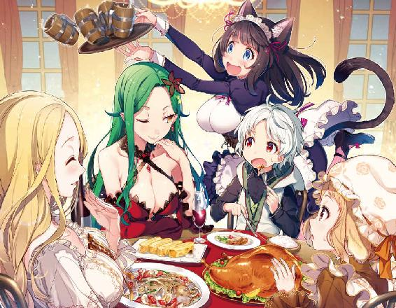
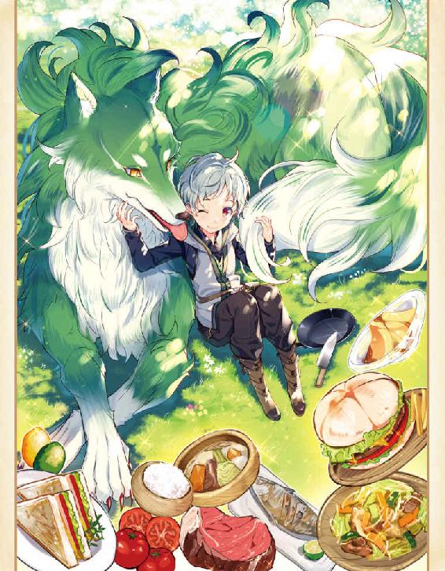
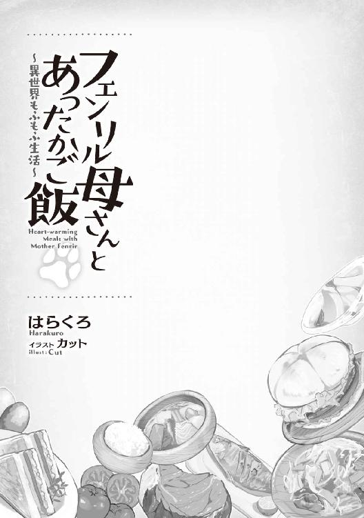
ＣＯＮＴＥＮＴＳ
第一話 優しい母さんと可愛く育ったルード。
第二話 猫人の集落と行方不明のお姉さん。
第三話 食糧事情の改善。
第四話 海が好き、魚も大好き、エビも好き。
第五話 海とお湯の国、シーウェールズ。
第六話 お母さんの力とその素性。
第七話 新しい我が家。
第八話 僕の中の彼の力。
第九話 町で噂になっていた。
第十話 誰が名づけたこのお菓子。
第十一話 海と温泉の国のわがまま姫様。
第十二話 目の当たりにする衝撃の事実。
第十三話 優しい嘘、生きていたママ。
第十四話 回復していくママとその実力。
第十五話 無謀？ ママ、母さんをモフるつもりか？
第十六話 母さんの恥ずかしい二つ名。
第十七話 えっ？ ひいお婆ちゃん？
第十八話 母さんの行動原理とルードの力の片りん。
第十九話 いつまでも綺麗なママでいられる。
第二十話 ママのお父さんとお母さん。
第二十一話 ルードの左目の力。
エピローグ ～次こそ『ぶひぃ』と鳴かせてやるんだ～
イラスト／カット
デザイン／BEE-PEE
プロローグ
「悪魔めっ！ こ、殺さないだけありがたいと思え！」
そんな酷い言葉を投げつけられながら、何かに叩きつけられたような物凄い衝撃を受ける。
シーツに包まれたまま、この物語の主人公である彼は、馬に乗る男に投げ捨てられてしまった。
捨て台詞を残し、その男は馬を走らせて逃げ帰っていく。
多くの肉食獣や、魔獣と呼ばれる凶暴な魔力を内包する獣までいる場所。
ここは人間が寄り付かない森の中。
彼はそんな危険な場所に捨てられてしまったのだ。
幸い、柔らかなシーツにぐるぐる巻きにされていたことと、打ち所がよかったこともあり、大した怪我はないだろう。
彼は生まれてまだ数か月。
名前はまだない。
やっと寝返りできる程度の体力しかない。
彼は、全身の力を振り絞って数回寝返りを打ってみた。
すると、シーツがぱらっと解けて外の景色が見えてきた。
やっと息苦しさから解放された彼は、深呼吸をしてみた。
部屋の中とは違い、生命力に溢れた気持ちのいい呼吸ができる。
それと同時に、目の前に聳え立つ樹齢数百年はありそうな大樹が彼の視界に入ってきた。
「僕、捨てられちゃったのかな？ でも、これからどうすればいいんだろう。歩けないし......」
『きゅるるる』と、彼のお腹が可愛らしく鳴った。
無理に動いたのと、まだ昼のおっぱいをもらっていなかったせいもあるだろう。
彼に空腹感が襲ってくる。
「おなか、すいたな......」
こんなに冷静でいられるのも、彼の異常性なのかもしれない。
だが、もう動けない。
匍匐前進すらできる腕力もないのだ。
かといって、周りに落ちている枯れ葉を食べることなどできるわけもない。
過酷な森の中では、この先どうしようかと悩む暇など与えてはくれなかったようだ。
かさりと何かが枯草を踏んだような音が聞こえる。
つんと鼻をつく獣臭さと同時に、複数の獣の唸り声が聞こえてきたのだ。
「い、いきなりクライマックスですか？ 冗談じゃないですよ。お腹だってすいてるのに。──っていうか、僕が捕食されちゃう側？ ちょ、ちょっとまってってばっ！ 美味しくないよ？ おしっこちびっちゃってるし。臭いからほら、あっちいってってばっ！」
飢えた獣に言葉が通じるわけがない。
いや、元々獣と話せるわけがない。
徐々に近づいてくる獣臭さと、その唸り声。
「......もうだめかもしんない」
彼は絶望感に包まれてしまった。
▼
事の始まりは、こんな感じ。
彼は生まれつき変だった。
生後一ヶ月もしない間に、しゃべれるようになってしまったのだ。
それは彼がまだ成熟していない声帯を無理やり使っただけのこと。
普通はそんなことはできないはずだが、彼には記憶の奥にある知識があったのだ。
それを考えられるほどの知能の高さ。
それは傍から見ると、気味の悪いものだっただろう。
彼の母親と侍女のクレアーナは彼がおかしいことよりも、成長の早さを喜んでくれた。
会話できること自体おかしいのだろうが、それを受け入れてしまった二人。
例えばおしめを湿らせてしまうと、こんな感じ。
「クレアーナ」
「どうしました？ 坊ちゃま」
「おしっこしちゃった」
「あらあら。今、綺麗にしてあげますからね」
お腹が空いたら泣くよりも先に。
「お腹すいたんだけど」
「あらあら。今、奥様を呼んできますね」
「ごめんね、クレアーナ」
と、こんな感じだった。
傍から見たら、異様な光景だろう。
生後四ヶ月は経っていない赤子が不快を言葉で訴えて、侍女が世話をしてくれている。
常識から考えたら、気味の悪いものだろう。
おしめの交換が終わり、クレアーナは彼の頭を撫でてくれている。
それはとても気持ちがよく、クレアーナを見ると彼女も嬉しそうにしている。
だが、そんな日常が壊れる日がやってきた。
乱暴にドアが開けられた。
クレアーナの手がびくっと跳ね上がる。
彼女の表情は何かに怯えているようにも思えた。
「だから忌み子はすぐに処分しろと言ったのだ。双子が我の家で産まれたなど、我が家の恥以外何物でもないのだ。お前が懇願するからこれまで見ないふりをしていたが......」
やたらと物騒な言葉を発しながら、中年の男が入ってくる。
眉間に皺を寄せ、醜悪な顔を歪ませながらその男は彼を覗き込んだ。
話の内容から、この男が彼の父親なのだろう。
怖かった。
『物心つく前の子供は、人の本質を見抜くことがある』と、言われているが。
それは、その対象が自分にとって善か悪かを本能的に見抜いてしまうためかもしれない。
彼の身体が、その男を拒絶したかのように震え始めてしまう。
これだけの敵意を向けてくるのだ。
普通の赤子であれば、きっと泣いてしまうことだろう。
クレアーナが彼の身の危険を感じたのか、彼を抱き上げて部屋の隅へ逃げてしまう。
「あなた、やめてください。この子は生きるのに一生懸命なのです。双子で産まれたからといって何が悪いのですか？」
彼の母が男の足にすがりつくように、男を止めようとしていた。
遠目でみると、男の全身が見えてくる。
それは醜悪に太った、醜い豚のようにも思える。
「うるさい。双子の兄はこの国では忌み子なのだ。国を亡ぼすと昔から言われているのだ。我が家から産まれたと知られたら、兄に何を言われるか。我の立場も考えろっ！」
「ですが......」
「もう勘弁ならん。この場で斬り殺してくれる！」
「やめてっ！」
男は腰にあった長剣を抜いた。
彼の母は、彼が殺されてしまうと思ったのだろう。
すがりついていた腕に精いっぱいの力を込めて、男を止めようとする。
男は母から逃れようと、母を蹴り飛ばしていた。
彼を抱きしめているクレアーナの手がぶるぶると震えている。
彼は母が酷い扱いを受けているのに、かちんときてしまった。
だから、普段気を付けていたことをすっかり忘れてしまったのである。
「誰ですか？ この醜悪な豚は？ 豚が人間の言葉を使うなんて信じられません。優しいママとクレアーナが怖がっているではないですか。美しいママを蹴るだなんて、許せません。謝りなさい。『ぶひぃ』と鳴いて謝るのです」
「............」
男は固まっていた。
それはそうだろう。
生まれて四月も経っていない赤子が悪態をついたのだ。
幼少の頃から王家の一族というだけで、例え見た目が悪くとも、容姿を褒められ、美しいと称えられていたのだ。
男が聞いた、初めての言葉。
『醜悪な豚』、その言葉を聞いた男は冷や汗をかいた。
我に返った男が発した言葉は、彼も知らない言葉が混ざっていた。
「こ、この美しい我に何を言う？ い、忌み子の上に『悪魔憑き』かっ？ こんな者の血で屋敷を汚すわけにはいかん！」
男が言った『悪魔憑き』とはどういう意味だろう。
男は腰に長剣を収めると、彼が寝ていたところからシーツを剥ぎ取り、唖然としている彼の母を振りほどいた。
クレアーナの前に立つと、彼を彼女から引きはがした。
シーツで彼を包むと、部屋から出ていく。
「あなた、やめて。お願い......」
「旦那様、やめてください......」
「大丈夫です。ママ、クレアーナ。いつか絶対に会いに来ます。こんな豚に負けないでください」
二人の懇願を無視して男は屋敷の外へ出ていく。
厩舎で馬にまたがり、城外へ馬を走らせた。
城下を抜け、人里が遠のいていく。
鬱蒼とした森の中へ入ると、大樹の下へ包んだシーツごと彼を放り投げた。
馬の高さから放り投げられたのだが、大樹の周りの枯れ葉とシーツの助けもあり、彼は大けがをするまでには至らなかったというわけなのだ。
▼
こうして彼は捨てられてしまった。
こんな緊張感漂う場面でも、彼のお腹は鳴ってしまう。
お腹がへった。
いや、それどころじゃないだろう。
お腹を減らしたハイエナのような獣が数頭、こちらを睨んでよだれを垂らして、一歩、また一歩と近づいて来る。
絶体絶命、今の彼を現すのに一番適した言葉だろう。
仕方なく彼は最後の力を振り絞る。両手を合わせて祈った。
「（来世は平和に暮らせますように。可愛い幼馴染がいたりしたら嬉しいな。綺麗なママだったな。また、あんなママのところに生まれたいな......）」
彼は諦めることに決めたのだった。
全てを諦め、彼を狙う獣の嫌な匂いが更に近づいたとき。
きゅっと瞑った目でもはっきりとわかる程、すぐ目の前に閃光が疾走る。
轟音ともいえる雷鳴の音が、彼の鼓膜に痛い程の振動と衝撃を与える。
一瞬、聴覚を奪ったその轟音。
その瞬間、衝撃と共に。
煽りを受けてか彼は吹き飛ばされて、ごろんごろん。
彼の耳を、『キーン』というダメージにも似た特有の苦痛が襲う。
そんな彼の記憶がフラッシュバックするように、とある知識が思い出される。
落雷の光と雷鳴の音が近ければ近い程、すぐ近くに雷が落ちたという事実。
ピリピリとした、痺れるような。
感電でもしたような、皮膚を刺激する残滓が残っていた。
「──あら？ やりすぎちゃったかしら？」
「（今のもしかして？ 魔法？ 魔法があるの？ すげっ。すっげ──）」
目を開いたのがいけなかった。
彼の目の前には、さっきまで彼を美味しくいただこうとしていた側の存在。
真っ黒こげにローストされた、ハイエナのような獣だったはずの、きなくさい物体の目らしきものが恨めしそうに睨んでいたのだった。
人ではないとはいえ、目の前で生命が終了した瞬間。
彼は恐怖を感じないわけにはいかなかっただろう。
彼のおなかに残っていたすべてのものを、一気に漏らしてしまっていたのだった。
自分の仲間が一瞬でやられてしまったからだろうか。
悲鳴をあげるように、逃げ出すその獣たち。
『この匂い。思った通り、赤ちゃんの匂い......。あら？ あらあら、怖がらせてしまったみたいだわ。ごめんなさいね。でも間に合ったみたい。よかったわ......』
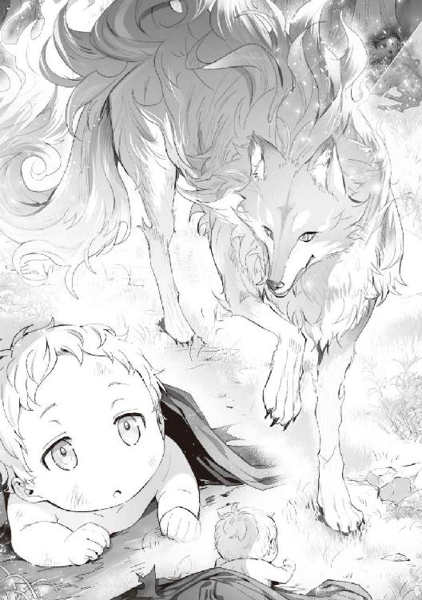
優しい女性の声がする。
その声の方向から、枯れ葉を踏むような足音が聞こえてきた。
自分の方へ近づいてくれている。
やっぱり、さっきの魔法はこの女性だったのだろう。
漏らしてしまった恥ずかしさよりも、魔法の存在の方が彼には大きかった。
妙にわくわくしてしまい、危うく感謝の言葉をあげてしまいそうになるが、それをぐっと堪えた。
そう。
あの男のように気味悪がられてしまったら、元も子もないのだ。
「......ふえっ」
警戒されないように、泣いてるふりをしてみた。
『あら？ 泣き声......。こっちみたいね』
足音が二人分に聞こえる。もしかしたら他にも誰かいるのだろうか？
近い。
足音が止まった。
最後の力を振り絞り、寝返りを打ってうつ伏せから仰向けになってみる。
その女性と目が合った。
「............（終わった。僕の人生これまでだ......）」
彼の目に映ったのは、口元から伸びていた長い牙。
彼の知識にはない、先ほどの獣よりも更に大きな狼に見える。
彼は目を瞑った。
心の中で手を合わせた。
彼の記憶の奥にある知識が、祈るようにそうさせる。
十字を切らないで手を合わせるイメージだったのは、彼自身にそういう習慣があったからなのだろう。
改めて、彼はすべてを諦めた。
鼻先でごろんと転がされた。
そのとき彼のおなかが鳴ってしまう。
きゅるるる......
こんな状況でも鳴る自分の腹に恨めしさを感じた。
襟元が咥えられて浮遊感を感じた。
その狼はそのまま歩いていく。
森の奥へ奥へと進んでいくようだ。
「（このまま巣まで運んで、子狼の餌にでもされちゃうのかな。お願いだから、苦しまないようにしてほしい）」
そんなことを思いながら恐怖で目を開けられないまま、なすがままにするしかなかった。
枯れ葉の積まれたところにその狼は座り込んだ。
あぁ、これが最後か、と彼は思ったのだが。
『さっきの音、きっとおなかがすいてるのね。でもどうしましょう。あ、もしかしたらまだ出るかもしれないわ』
おかしい、なぜかこの狼の言っていることがわかってしまう。
彼を食べるつもりはないようだ。
それどころか、彼がおなかをすかせていることを困っているようにも取れる。
またちょっとした浮遊感を感じると、目の前から少しだけいい匂いがしてくる。
恐る恐る目を開けると、彼の目に入ってきたのはその狼のお腹あたり。
人間とは違うのだが、目の前にあるのは慣れ親しんだいつものあれ。
背に腹はかえられず、それを口に含んで吸いついた。
そこから出てくる、甘くて口の中に広がる濃厚な味。
無我夢中で彼は吸い続ける。
『死んだあの子にそっくりね。まるであの子が帰ってきたみたい......』
この狼も子供を亡くしているのだろう。
だが、そんなことより、今までに味わったことのない旨み。
『五臓六腑に染み渡る』そんなフレーズが頭に浮かんだ。
彼を産んでくれた母には悪いが、これほどの母乳には負けるだろう。
そう思ってしまうほど、一心不乱に吸い続けたのだった。
おなかいっぱいになって、ころんと寝っ転がってしまう。
狼は彼の顔を優しく舐めてくれていた。
それは彼の母が額にキスをしてくれた感触によく似ていた。
狼とは思えない、いい匂い。
外の寒さからは考えられないほどの温かさ。
おなかがいっぱいになった安心感から、眠くなって意識を手放してしまった。
▼
彼が目を覚ますと、外は雪景色だった。
というか、ここは外なのだが、全く寒さを感じない。
暖かな少し緑がかった毛に包まれているせいか、外の寒さが全く気にならない。
相変わらずのいい匂い。
恐ろしく鋭い牙を持つ口元から、柔らかい舌が彼の顔を優しく撫でてくれているのだ。
その上から見える、優し気な眼差し。
最初にあった恐怖感は、今は全く感じられなかった。
彼女（と言っていいのかわからないが）の口元から感じる息も、いい匂いに思えてくる。
まるで昨日までと同じ、母に抱かれているかのような安心感があった。
『起きたみたいね。おなかいっぱいになったのかしら？ 人間の赤ちゃんにわたしの母乳を与えても、大丈夫だったのかしら？』
彼は恐る恐る返事をすることにした。
あれだけの美味しい食事を与えてもらったのだ。
感謝の言葉を返さないわけにいかない。
「はい。おいしかったです」
『えっ？ わたしの言っていることがわかるの？』
「はい。なぜかわかります」
『でもおかしいわね。亡くなったあの子も、あなたと同じ赤ちゃんだったのだけれど、話すことはできなかったのよ？』
「僕はおかしいみたいです。『悪魔憑き』だって捨てられてしまったので......」
『『悪魔憑き』、言葉は聞いたことはあるのだけれど、どういう意味だったかしら？......大変だったわね。わたしの赤ちゃんも、少し前にね、病気で死んでしまったの。悲しくて、何も考えられなくて。そんなとき、あなたを見つけたの。久しぶりにおっぱいをあげたときね、あの子が帰ってきたみたいで、ちょっとだけ嬉しかったのよ』
「僕ももう、駄目だと思ったんです」
『食べられちゃうと思った？』
「は、はい」
『馬鹿ね。そんな野蛮な犬と一緒にしないでちょうだい』
「はい」
『わたしはフェルリーダ。リーダって呼んでね。あなた、お名前は？』
「僕には名前がありません。実は──」
彼はあの家であったことを彼女に話した。
彼は自分の身にあったことを、なぜか目の前の優しい彼女に話してしまうのだった。
話しやすかった。
話すことで、胸の内をぶちまけることで、なんとなく気持ちが楽になっていくのを感じる。
彼が話し終わるまで、彼女はしっかり聞いてくれたのだ。
『そう。それは残酷な話ね。双子のお兄ちゃんに産まれたというだけで、そんな扱いを受けてしまうのね。なんという愚かな行為でしょう......』
「僕も、あんな醜い豚の血が流れているかと思うと、ぞっとします......」
『あらあら、言うわね。でも、どうしましょう。そのまま戻ったとしても、どうされるかわからないわね。......おばさんと一緒にくる？』
「いいんですか？」
『えぇ。まだおっぱいも出るみたいだし。あの子が帰ってきたみたいで、わたしも嬉しいのよ。でも、名前がないと不便ね。死んだあの子と同じ名前で呼んでもいいかしら？』
「はい」
『ありがとう。あなたは、今日からフェムルードよ。ルードと呼ばせてもらうわ。人間だけど、わたしの息子。それでいいかしら？』
「お母さん......」
『またそんな風に呼ばれるなんて、思ってもみなかったわ......』
▼
ルードと名づけられた彼は、新しい母、リーダに咥えられて彼女の住処へ運んでもらった。
そこは狼の住処とは思えないほど、文明的で清潔な環境だった。
母ひとりしか住んでいないように思えるのだが、温かな温泉が湧き出ていて雨露が凌げるような屋根がある住処だった。
この母は物凄く頭がいいのだろう。
そう思えてしまうほど、あちこちに手が加えられていた。
家と思われる場所には、滑らかに削られた床板が存在している。
岩の積まれた露天風呂のような場所もある。
湧き水と源泉から引かれた湯が混ざっていて、温かく温度調整がされていた。
母に咥えられて、肌着を脱がしてもらうと、牙があたらないように甘噛みされて湯へ連れて行ってもらう。
浅く作られたそこは、ルードが沈むような深さではなく、寒い冬でも温まれるくらいに快適な場所になっていた。
こうした習慣があったから、きっと獣臭さが全くなかったのだろう。
どう考えても、ただの狼には見えない。
まるで人間以上の知的な種族に思えてくるのだ。
湯から上がると、どこから集めてきたのだろうか。
清潔な布が部屋に積まれていて、そこから一枚持ってくると器用にルードの身体を拭いてくれるのだ。
その手際は、クレアーナに負けないほどのものだった。
どう見ても犬の前足なのだが、それを器用に使い、口も使って何不自由なくルードの世話をしているのだ。
「お母さん」
『何かしら、ルード』
「お母さんの毛の色をね、青くしたらね」
『青くしたら？』
「まるで僕が知ってる『フェンリル』みたいだなって思ったんだよね」
『あら、よく知ってるのね。でもちょっと違うのよ。わたしたちのような女はね、フェンリラって呼ばれているの。フェンリルは青い毛をした男性の呼び名なのよ』
ルードは驚いた。
彼の知識では、フェンリルは伝説の魔獣。
北欧神話に登場する狼の姿をした巨大な怪物のはずだ。
それがこの世界にも存在している。
確かにリーダの身体は大きい。
軽く二メートルはあるだろうか。
「そういえば、お母さん」
『何かしら？』
「お父さんにあたる人はいないの？」
『そうね。隠していても仕方がないわ。あのね、わたしの赤ちゃんが死んでしまったとき、いなくなってしまったの。勝手な人だったわ。怒鳴るだけ怒鳴って、消えてしまったの』
「どこの世界にも、だらしない男っているんだね。あの豚みたいに」
『そうね。困っちゃうわね』
この光景は、他の人が見たら異様な光景だっただろう。
この世界でも伝説と言われていてもおかしくないフェンリラと、人間の赤ちゃんが笑いあっているのだから。
暗くならないうちに、リーダはルードに晩ごはんをあげる。
もちろんフェンリラであるリーダの母乳だ。
伝説の魔獣の栄養価たっぷり、ルードにとって美味なる最高のごはん。
美味しいごはんが、これほど幸せにしてくれるなんて思ってもみなかった。
ルードが夢中で吸い付いているのをリーダは嬉しそうに見守る。
飲み終わったあたりで前足を使い、器用にルードにげっぷをさせる。
おなかいっぱいになり、おなかを上にして満足したルードはリーダに抱かれて眠るのだ。こうしてリーダに抱かれているときは、不思議と嫌な匂いがしない。
リーダに会う前に襲われそうになった獣から漂っていた『獣臭さ』が全くないのである。
それどころか、あの部屋で生みの母に抱かれていたときのような、安心できるいい香り。
綺麗な毛並みとその感触。
ルードの記憶の奥にある、とあるキーワードが浮かんでくるのだ。
「（あぁ、これが『モフモフ』ってやつなんだね。気持ちいいわ......）」
そんな心地よさを感じながら、ルードは眠りに落ちていくのだった。
リーダは人の子であったルードを育てることに抵抗はなかった。
故郷に帰れば人の姿で生活していたからであろう。
息子のルードは意思の疎通ができたことから、とにかく手がかからなかったのだ。
乳児を持つ母親ではありえない状況。
ルードが特別なのだろうが、自分がしてほしいことを言葉で伝えてくれる。
母やヘンルーダに聞いた苦労話は、今のリーダには当てはまらなかったのだ。
▼
一緒に暮らし始めて一年ほど経ったあたりのことだった。
困ったことに母乳の出が悪くなっていたのだ。
この日からリーダの苦悩が始まる。
仕方なくルードに離乳してもらうことを考えたのだが、人間であるルードに与える離乳食をどうしたものか。
故郷に帰っていれば問題はなかったのだが、今帰るわけにはいかない。
ルードを連れて行っても、自分の子だと認めてもらえるかどうかが不安なのだ。
一緒に暮らしてまだ日は浅いが、この子を手放したくない、リーダはそう思っている。
ルードが寝ている夜遅く、友人のヘンルーダに会って、こっそり相談してくる位なのだ。
ヘンルーダたち猫人は、人と同じ姿をしているため手先が自由に使える。
色々とアドバイスをもらって帰ってきて、ルードの可愛らしい寝顔を見て安心する。
起さないようにルードの頭を撫でようとしたとき、ふと目に映った自分の肉球を見て、ため息をついてしまったこともあった。
まだかろうじて出ている母乳でなんとか誤魔化しながら、ルードの食事の方法を考えていた。
ルードはリーダの母乳を『美味しい』と言ってくれている。
それに関しては母として嬉しく思っていた。
こんな経験をした母親はリーダが初めてだろう。
故郷の外ではこんな姿をしているが、こう見えても案外器用なのだ。
ルードのおしめを交換したり、風呂に入れたりするのは余裕でできる。
だから、これまで困ったことはなかったのだ。
ただ、ここでの食事に関しては少し心配があった。
リーダがこちらで普段食べているのは、比較的小さい草食の獣を狩ってきて、それに岩塩を爪で削ったものを揉みこんで丁寧に焼いたものだった。
幸い家には温泉が湧いている。
源泉はかなり温度が高いので、風呂には別に湧いているものを一緒に引いて温度調整をしているのだ。
温度の高い源泉は、料理にも利用していた。
近くに採ってきた野草を漬け込んで、一度熱を通してから食べるようにしている。
好んで採ってくる野草は、味もよくリーダは案外気に入っている。
その野草と肉が朝食であり、昼食であり、夕食だったりする。
肉も適度に脂がのっていて美味しく、食いしん坊のリーダは、ほぼこのような食事で満足していた。
彼女は別に食通というわけではない。
美味しいと思ったものが食べたいときに食べられれば、それだけで満足なのだ。
ただ、今になるとそれでは困ってしまう。
ルードが美味しいと言ってくれるかが不安だったのだ。
思い切ってルードに相談してみようと思った。
ルードはよちよちと立って歩くことができるようになっている。
「ねぇルード」
「どうしたの、母さん」
リーダが呼ぶと、こちらへ歩いてくる。
ゆっくりと、笑顔も一緒に。
ルードはリーダの近くまで歩いてくると、どっこいしょという感じに、ぺたんと尻餅をついたような感じに座った。
首を傾げてリーダを見上げる。
それがまた可愛らしくてたまらないのだ。
「ちょっとごめんね」
「うん」
リーダは爪を引っ込めた指先で、ルードの唇をちょっと持ち上げた。
まだ歯は生えそろっていない。
数本生えてきているようだが、ものを咀嚼することは難しいかもしれない。
「あ、やっぱりまだみたいね。あのね、お母さんね、おっぱいが出にくくなってきてるのよ」
「そうだったんだね。僕が飲みすぎちゃったのかと思ってた」
確かにルードの成長は速い。
ここへ来て半年もしない間に、ものに捕まりながら歩くようになってしまった。
手先も思ったより器用に動くようだが、まだまだ力が足りない。
リーダの指を自分の意思で、きゅっと握ってくれるくらいにはなっている。
「だからね、違うごはんをあげようと思ったのだけれど、あなたはまだ歯が生えそろってないからね......」
「僕はかあさんがくれるのなら、何でもいいよ」
「そう？ それなら今夜からちょっとだけ食べてみる？」
「うん」
いつものように夕食を作ったのはいいのだが、どう考えてもルードが食べられる硬さではない。
すりつぶすにしても、すり鉢もないことから、このまま小さくちぎって与えてもまずいだろう。
リーダは、故郷の学園をすべての教科において、主席の成績で卒業している。
それは料理や裁縫などの、女生徒の受ける教科についてもだった。
知識としては完璧なものを持っているのだが、いざ、この手でやろうと思ってもどうにもならない。
あれこれ考えて、リーダが結論に至った方法は。
爪を伸ばして肉を小さく切る。
野草もいい感じの柔らかさに煮えているので、それを小さく切る。
それらを口に含むと、味が壊れないように細心の注意を払って、奥歯ですり潰してから。
「ふぁい、ルード」
「あーん。んっんっ。おいしっ」
まだ歯の生えそろっていない口でもぐもぐと咀嚼してから、喉を鳴らして飲み込んだ。
結局、リーダが口移しであげることにしたのだった。
「野菜炒めみたいで美味しいかも」
「やさいいため？ 何よそれ？」
「僕もよくわかんない」
ルードはリーダに嘘を言わない。
こうして、出にくくなった母乳の代わりに、ルードは新しいごはんを食べることができるようになったのだ。
リーダはフェンリルの姿だったのと、必死だったこともあり、照れている暇がなかったのだろう。
もし故郷で人の姿をしていたときだったら、それは恥ずかしいという限度を超える行為だっただろう。
ルードは相変わらず饒舌だったが、それでも思考状態が今の姿に引きずられているのか、子供らしい振舞をしている。
それがまたリーダにとって、悶絶するほど可愛いのだ。
▼
あれからすくすくと育ったルードは五歳になっていた。
食べ物を採りにいくとき、リーダの背中に乗って一緒に行くようになっていた。
ルードに色々教えながら、食材になるものを採ってくる。
ルードからリクエストがあり、リーダはヘンルーダからあるものを貰ってきたのだ。
ルードは不思議なことに、リーダ以上の知識を持っている。
小さかった頃のルードは、リーダに言われるがまま毎食の食事を食べていたのだが、最近とある欲求が出てきたみたいなのだ。
「母さん」
「なぁに？」
「料理をする道具がほしいんだけど」
「えっ？」
それは見事な手際だった。
ルードは初めて使うだろう、ナイフや鍋を器用に扱っている。
「えっと。左手は猫の手......、っと。うん。あとは塩を削ったものを......」
「何を作っているの？」
「うん。野菜炒めだよ」
「これが？」
「塩しかないから、味が単純だけど、肉も野草も美味しいから、多分大丈夫」
自分とリーダの分をひとつの皿に盛りつけて、リーダを挟んで座っている。
ルードは『はし』という食器を、枝を削って作ってしまったようだ。
その細い二本の木をうまく使って野菜炒めを一口食べてみる。
「うん。思ったよりもいいかも。はい、母さん」
ルードは器用にその『はし』を使ってリーダに食べさせてくれる。
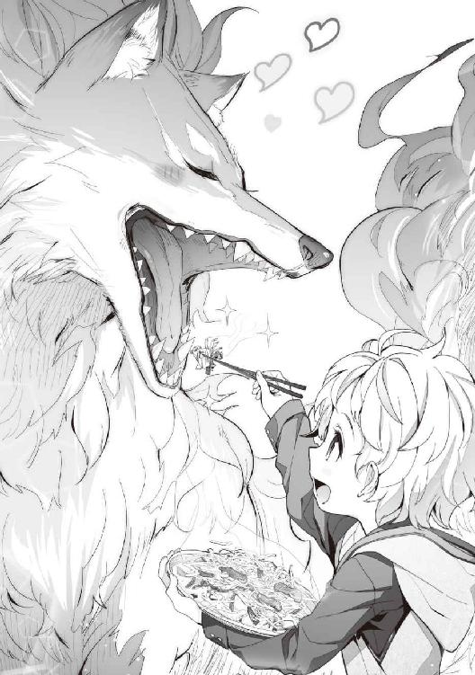
こんな日が来るとは思っていなかった。
可愛い息子にごはんを食べさせてもらうのだ。
これが嬉しくないわけがない。
リーダは食べさせてくれたものを口の中で咀嚼してみる。
それは思ったよりも美味しく『うちの子天才じゃないかしら？』と親バカになってしまうほどの衝撃だったのだ。
「あら？ あらあら、美味しいわ」
「母さんが食べさせてくれたのも美味しかったけど、もっと美味しいものが食べたいな、って思っちゃったんだよね」
「息子の作ってくれたごはんが、こんなに美味しいものだと思わなかったわ」
「えへへ。ありがと」
その日からフェルリーダ家では、ルードが食事を作るようになったのだ。
ルードが欲しがるものは、リーダも知識で知ってる『香辛料』というものだった。
ヘンルーダからそれを分けてもらうと、ルードは色々な料理を作り始める。
そして毎日、ちょっと違った料理を食べさせてくれる。
ルードも料理をするのが楽しいらしい。
何より大好きな母と一緒に美味しいものが食べられる。
それが何よりの喜びだったのだろう。
▼
「ルード、ごはんまだかしら？」
「もうちょっと待ってー」
ルードが六歳になったとき、彼が料理をするようになってから、リーダの『食っちゃ寝』が加速していった。
『今まで育ててくれたから』と、ルードはご飯を食べさせてくれる。
リーダと同じものを食べているというのは前から変わっていないが、リーダが食べていたものよりかなり美味しいのだ。
ルードはヘンルーダの集落からもらってきた小麦で、薄いパンのようなものを焼いて、それに肉と野菜を挟んで、肉汁で作ったソースを垂らして食べさせてくれる。
それがまた、珍しい食感で美味しいやら、楽しいやら。
「あぁ、美味しいわ。でも、このままじゃわたし、駄目になっちゃうかも......」
「ん？ どうしたの、母さん」
ルードと食材を採りに行くとき、身体を動かしてはいるのだ。
ただ、それは運動というところまでには達していない。
人を軽く置き去りにしてしまうほどのリーダの運動能力からいえば、散歩程度にしかなっていないのだ。
おまけにルードの作る食事は美味しい。
フェンリルの姿からは考えられないほど食べる量は少ないように見えるが、それは人の姿のときと同じだから仕方がない。
人の姿のときはけっして少ない方ではなかったのだ。
今のリーダが食べている量はそういう意味では少なくはない。
このままでは『食っちゃ寝』が『ぽっちゃり』になりかねない。
リーダは彼女の故郷であるウォルガードにいた頃、スタイルには自信があったのだ。
第三王女ということもあり、どこへ行っても注目を浴びる。
いくらリーダが『適当』で『やる気のない』本性だったとしても、『猫人を被っていた』こともあり、体裁だけは整えてきたのだ。
何を聞かれても即座に答えられるように、知識だけは詰め込んできた。
そのおかげもあって、今こうしてルードと暮らしていけるのだ。
今の生活はお金を必要としない。
ウォルガードにいた頃は、買い食いをするときにはタダでできるわけがなかった。
そのため最低限のお金は小遣いとして、祖母や母からもらっていた。
ヘンルーダのところで色々用立ててもらっているが、それはすべて物々交換。
ヘンルーダから聞いているが、猫人の集落も生活にお金を必要としていない。
自分たちで狩りをし、家畜を育てながら麦などを作っている。
自給自足ができていることだけを見ると、ウォルガードと似ているのだ。
猫人は身体能力は高いのだが、戦いに不向きの種族。
猫人では狩ることのできない牛に似た獣をリーダが狩って、背中に乗せてヘンルーダにそのまま渡して必要なものをもらってきている。
リーダにとっては運動にもならない狩りをするだけで、息子の欲しがる必需品と交換してもらえているのだから助かっているのだが。
リーダはふと思った。
もしウォルガードに戻ったとして、向こうに残してきた服が着れるだろうか？
ルードの作るごはんが美味しいからといって、このままでは母や祖母に言われた『食っちゃ寝』になってしまう。
『ルード、ついてらっしゃい。わたしが狩りを教えてあげるわ』
「ほんと？ やったー」
ルードは一緒に出掛けられるのが嬉しいのだろう。
まさか、リーダの運動不足解消が目的だとは思っていないようだ。
毎日のようにルードを連れて狩りをしにいく。
獲物の動き、気配の消し方。
『ルード、それでは獲物に気づかれてしまうわ』
「......うん」
実を言うと、リーダはものを教えるのがあまりうまくないようだ。
確かにリーダが気配を消すと、ルードが見失ってしまうくらいにうまい。
『違うの。こうよ、こう。そこからすーっと意識を薄くしていくの。違うのよ、こうよ』
「......母さん。難しいよ」
天才肌というのだろう。
そこでルードは、リーダの言いたいことを記憶の奥にある知識と照らし合わせる。
リーダは天才だったが、ルードもある意味おかしいのだ。
なんとなく、こうなんだろうな。
そんな感じで成し遂げてしまう。
似たもの母子というべきか。
毎日ルードを背中に乗せて、森を走っている。
これでいくらかは運動不足が解消されることだろう。
毎日作ってくれるルードの料理を美味しく食べたら、次の日走りまくる。
それが母子のスキンシップの一環でもあり、隠れたダイエットでもあったのだ。
この努力の結果は、いずれウォルガードに帰ったときにしかわからないだろう。
「母さん。はやいねー。楽しいねー」
『そうかしら？ それじゃ、今日はもうちょっと頑張っちゃおうかな』
ルードを背中に乗せて、気持ちよく疾走するリーダだった。
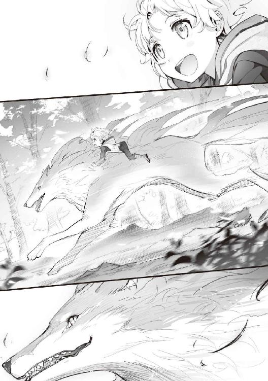
第一話 優しい母さんと可愛く育ったルード。
リーダが普段使っている言葉は『獣語』と呼ばれる、猫人や犬人が好んで使う言語である。
これはリーダの今の姿、フェンリルの状態であっても発音がしやすいのだ。
獣人であれば、誰もが知っているこの言葉。
どの地域でも、どの獣人にも通じるのだが、デメリットもあるのだ。
それは、魔法の詠唱に適していない。
魔法の詠唱は基本、人間が使用する『公用語』と呼ばれる言葉を軸に呪文が作られている。
リーダは王立の学園に通っていた学生の頃に、魔法の概念や行使の仕方を学んだ。
そのため、詠唱や具現化なども、知識として知らないことは少ない。
ただ、あくまでも知っているだけで、使ったことはあまりないのだ。
祖母が魔法の研究者として名が通っていたため、恥をかかない程度には知らなくてはいけない。
授業や試験もあるので、首席で卒業できるだけの知識は必要だった。
ただ、面倒なことを嫌うリーダには合わないものだ。
生活をする上でも、こうして外の国にいる状態でも、必要性を感じない。
だから魔法を使うことがなかったのだ。
リーダたちフェンリルが持つ特別な力は魔法を行使しなくても使える。
より効果を高めたいときや具現化を促すときには、呪文に似たものを唱える人はいなくはない。
ただそれは、フェンリルだけに使える力。
人間であるルードには無用のものだったのだ。
ルードは毎日のように料理を作ってくれる。
下ごしらえから食事後の食器を洗うところまで。
食事に関することは、ルードがひとりで完全にやってしまうのだ。
ルードが六歳になったときだった。
「母さん、あのね」
『なぁに？』
「魔法って知ってる？」
『えぇ知ってるわよ』
「母さんも使えるの？」
『わたしはこの姿だから、使えないのよ』
「そうなんだ。僕が使えるようになったら便利なのにね」
『方法は知ってるわよ。教えてあげましょうか？』
「ほんと？」
こうして魔法を使わないリーダが、ルードに教えることになったのだ。
初めから思っていたが、ルードは不思議な子だと改めて思わされた。
ちょっとした概念を教えてから、簡単な魔法を使わせてみる。
『いいかしら？ わたしが唱えても何も起こらないの。......例えばこれがいいかしら？ ルード、人差し指を上に立てながらね。万物に宿る赤き炎の力よ。我の願いを顕現せよ。言ってごらんなさい。これで合ってるはずよ』
「んー。『ばんぶつにやどるあかきほのおのちからよ。われのねがいをけんげんせよ』？」
ルードはリーダの教えた通り、真似をして詠唱をしてみた。
すると、指先がムズムズすることもなく、ぽっと一瞬だけ火が灯った。
「あ、でた」
『......嘘でしょう。わたしだって七日はかかったのよ』
概念や詠唱の言葉、呪文を知っているからといって、魔法を行使できるとは限らない。
七日は本当なのだ。
リーダは学園から帰って、恥をかきたくない一心で食事以外の時間を費やして、やっと最初の魔法を顕現させることができたのだ。
基本、適当でめんどくさがりなリーダだったが、体裁を繕うための努力は惜しまない。
きっと、祖母譲りの負けず嫌いな性格もあったのだろう。
『王女なのだから、外にいるときはみっともないことはできない』これだけのために、努力はしたのである。
そんなリーダの適当さ加減を、ルードはいい意味で受け継いでいた。
「んー、めんどくさいからこれでできないかな？ 『炎よ、燃えろ』」
『ルードそれはちょっと無理で──』
「あ、でた」
『......嘘ぉ？』
リーダの学園で学んだ座学や、祖母から教えてもらった知識にそんな使い方はなかった。
彼女が知る限り、詠唱を短縮することはありえないのだ。
面白がって、リーダはすべての魔法を教えることにした。
『うちの子凄いのよ』のノリだったのかもしれない。
ルードはリーダのもとに戻ってくるとき、何らかの怪我をしているときがあった。
そのあたりは別に問題はなかった。
リーダの母から教わった方法で、ルードの怪我の部分を舐めながら力を込めると、傷の治りが早かったからだった。
ルードが魔法を使えるようになってからは、怪我をした瞬間に『癒せ』の一言で治してしまうのだ。
もう深く考えるのは『めんどくさく』なってしまった。
ルードは『そういう子』だからと。
ルードは何に魔法を使いたがっていたかというと、基本は料理だった。
鍋に下ごしらえした材料を突っ込むと、両手で持って『炎よ、煮込め』。
これで料理を短時間で終えてしまう。
それどころか、食器を水に浸けると『水よ、洗い流せ』。
これで洗ってしまうのだ。
もう驚かない。
驚くだけ無駄なのだ。
それよりは褒めてあげよう。
『ルード凄いわ。わたし、自慢しちゃいたいくらいよ』
「えへへへ」
照れるルードもまた可愛い。
親バカリーダの奮戦記はまだまだ続く。
▼
あれから時が経ち、ルードは十二歳になっていた。
母のリーダは優しく、この世界の色々なことを教えてくれる。
身を守る方法や、植物などの知識。
獲物の狩り方、リーダは使わないはずの道具の使い方まで。
リーダは実に博識だった。
ルードはリーダに似た髪の色をしている。
もとは瞳の色も碧眼だったのだが、今は少し赤い色になっている。
このあたりも、リーダそっくりなのだ。
身長は少し低めのようだが、身体は森を駆けずり回ったせいか、年齢よりはかなりしっかりとした感じに見える。
幼少から与えられた母乳のせいかはわからないが、明らかに人間の身体能力は超えているような気がしてならない。
もともと金色だった髪も、リーダそっくりの色味になっていることから、リーダの影響があったのだろう。
ルードが着ている服や靴は、実はリーダが懇意にしている種族が作ったものらしい。
リーダはあちこちの種族や国の習慣なども教えてくれた。
そして、ルードがなぜか持っている知識に驚きながらも、それを応用することができるという頭脳を持っていた。
今、二人が住んでいる小さな集落は、前よりもさらに便利に快適に過ごせるようになっている。
何よりも驚いたのが、ルードがひとりで町へ行き、狩りをしたものを売り、必要なものを買って帰ったことだった。
リーダはフェンリルである。
彼女はただの魔獣ではなく、フェンリルという獣人が姿を変えただけ。
ルードが買って帰った人間のお菓子が好きだったりするのだ。
特に甘いものが好きで、ルードは母が好きなものを選んで買って帰る。
リーダが喜んでくれるのが嬉しいからだった。
ルードは自分の知識がなぜあるのか思い出せない。
もちろん、自分が誰だったかもわからないのだ。
そんなことは別にいい。
自分が持っている知識にリーダが喜んでくれる。
それだけで十分だった。
▼
今日は、リーダと約束していた、リーダが懇意にしている種族の集落へ連れて行ってもらうのだ。
自分の身をある程度守れるようになり、身体も多少大きくなったことから、十二歳になったら連れていくと約束していたのだ。
しばらく家を空けることになるから、その準備をする。
少なくともここがリーダの住処だと知っているだろうから、獣などに荒らされることはないだろう。
リーダの話では、フェンリル、フェンリラは獣人の頂点にいる種族らしい。
らしい、という話し方をしていた理由は、まだ自分たちより強い種族に会ったことがないからだと言っていた。
リーダの親族には、龍と喧嘩して勝ったという人もいたという。
というより、龍が五体投地をしたらしいのだ。
その種族の中でも、リーダは争いを好まないが、かなり強い方だったらしい。
結婚してからかなりの間、国に帰っていないらしく、いつか連れて行ってくれるとも言っていた。
戸締りをするように、家（集落）の門（これもルードが思いついて作った）を閉めて外出の準備を終えた。
ルードは伏せてくれているリーダの背中にひょいと飛び乗る。
「母さん、いいよ」
『振り落とされないようにね』
「うん」
リーダはすっと立ち上がる。
ゆっくりと歩き始めたかと思うと、あっという間に加速を始める。
周りの景色が後方へ物凄い速さで置き去りになっていく。
ルードは顔を上げていられなくなり、リーダの首元へ顔を埋めた。
相変わらず、いい匂いがしてくる。
小さいころから嗅ぎ慣れた母の匂いだ。
フェンリラの母と人間の息子。
フェンリラは普通の魔獣とは違い、高位の知的な種族だから可能だったのかもしれない。
息子思いのリーダと母思いのルード。
互いに相手を思いやり、助け合って生きてきた。
リーダの毛は初めて会ったときよりも艶があり、ルード曰く『美人さん』なのだそうだ。
それはルードが十歳の頃、彼の知識に会った『ブラッシング』という概念と櫛の存在。
想像しながら手作りしたそれは、リーダお気に入りの逸品となった。
手の届かない部分も優しくブラッシングすることで、身体にあった痒みなどが解消されていく。
ルードがそれに気づくまでは、不快感が過ぎ去るまで我慢していたそうで、リーダは大層喜んでいたのだ。
もちろんルードもちゃんと成長している。
幸い、産みの母の血を色濃く受け継いだようで、あの『豚』と呼んだ男の面影などないようだ。
リーダは人間の美的感覚はわからないが、ルードを可愛らしいと思っている。
疾風のように森の中を走っていくリーダ。
ルードもそこそこ速く走れるのだが、比べ物にならないほどの速度が出ている。
優に十倍は出ているだろうか。
それでも背中に乗るルードを気遣って、加減をした走り方なのだろう。
上下の揺れを感じさせないくらい、息苦しさも感じないようだ。
それくらい神経を使った走り方をしつつも、恐ろしい速度で走り続けていた。
フェンリラの能力は実に底の知れないものなのだ。
その速度で小一時間ほど走っただろうか。
森から林のように辺りが開けた感じになってきていた。
背中に乗るルードもわかるくらいに速度を落とし、心地よい、まるで乗馬を楽しむかのようなテンポで早歩きするくらいの感じになっている。
『ルード、顔を上げてごらんなさい。ほら、わたしが仲良くしてもらっている集落が見えてきたわよ』
「ん？ あ、ほんとだ」
『でもおかしいわね。前ほど活気がないように感じるのよね......』
「そうなんだ。どうしたんだろうね？」
集落に近づくと、それはルードにもわかってしまった。
この集落も、ルードたちの住む地域と同じように雪深い。
ルードは人間の町へ買い物に行くから、その違いがわかった。
確かに集落に活気が感じられないのである。
リーダは集落の中心、本来であれば人が集まるような広場で足を止めた。
数年前に来たときはこんな感じではなかったのだ。
あのときは人々が楽しそうに作業をしていたり、子供たちがあちこちで走り回っていたりしていた。
だが、その面影が、今の集落からは感じられない。
周りに積もった雪も、足跡が全くなかったのだ。
リーダはそのまま、この集落の長の家の前まで歩いていく。
家の前に着くと、足を止めた。
ルードもリーダの背から降りて、リーダの横に立った。
『どうしたのです？ 誰かいらっしゃらないのかしら？』
リーダは人の気配は感じ取っていた、だから集落全体に話しかけたのだろう。
ルードですら間違いなく人がいるのは感じ取れていたのだが、それはあまりにも弱弱しく今にも事切れてしまいそうな、そんな儚い感じがするのだった。
「母さん、おかしいよ」
『そうね。確かに様子がおかしいわ。ヘンルーダいるんでしょ？ 何があったの？』
リーダはヘンルーダという知り合いに話しかけているようだ。
ここの族長か家族のひとりなのだろう。
周りの家と比べると、やや大きめの家。
ルードはその奥から気配が動いたのを感じた。
「母さん。誰か動けないでいるみたい」
『そうね。入るわよヘンルーダ』
第二話 猫人の集落と行方不明のお姉さん。
リーダが先に家に入っていくと、ルードも続いてゆっくりとした足取りで入っていく。
ルードでも違和感を感じる。
確かにおかしい。
部屋の中が、外とあまり変わらないくらいに寒いのだ。
真冬で、外は雪だというのに暖炉もついていない。
『ヘンルーダっ！ どうしたの？ こっちへ来て、ルード』
「うん。母さん」
ルードがリーダの声に反応して振り返ると、リーダがヘンルーダと呼んだ女性が寝床に横たわっているではないか。
ルードは彼女に近寄ると頭の横に座り込んだ。
ヘンルーダは苦しそうにリーダを見つめているのだ。
その目は何か懐かしいものを見ているかのような、だが力の感じられないものだった。
「あ、ら。フェル、リーダ。ひさ、しぶりね。げんき、にしてたか、しら？」
『しゃべらなくてもいいわ。ルードお願い』
「うん」
ルードはヘンルーダの顔の前に手を翳すと、目を閉じてゆっくりとひとつ息を吸い込んだ。
『癒せ』
ルードの声色が変わった。
それは短い呪文詠唱だった。
詠唱と同時に、ルードの手のひらへ淡い光が収束していく。
その光がヘンルーダの全身を包み込んだかと思うと、彼女の表情が和らいでいくように見えた。
「母さん。もう大丈夫、だと思うけど」
『ありがとう。ルードは本当に癒しの魔法が上手になったわね』
「......あら？ 身体が楽になった、わ」
『起きちゃ駄目。何があったの？ ヘンルーダ』
身体を起こそうとしたヘンルーダはリーダに諭されて身体を横たえたまま、ぽつりぽつりと話し始めた。
それは昨年から続いている作物の不作から始まったらしい悪循環だった。
二年続いて今年も不作だったため、男達は外へ働きに出かけているそうだ。
そのため、今、集落に残っているのは女子供だけだという。
猫人族の長であったヘンルーダは、自分が食べるのを我慢してまで皆に分け与えた。
そこまでしてやっと、集落の家々は、ぎりぎり食べていける状態らしいのだ。
ただ、安心して冬を越せるというわけではないらしい。
そして、急に寒くなった昨夜あたりから、無理がたたって体調を崩してしまったということなのだ。
『そう。大変だったのね。でもね、ヘンルーダ。あなたが無理しても状況は変わらないと思うの。なぜわたしを呼びに来ないのよ？』
「あなたに助けられてばかりでは、申し訳がなくて、ねぇ」
『そんな悲しいこと言わないでよっ。馬鹿ね......』
リーダはヘンルーダを叱責していた。
ルードがリーダを見ると、とても悲しそうな目をしていたのがわかった。
ルードは長年見てきたせいか、リーダの目を見ただけで、ある程度感情がわかってしまう。
もちろん、怒っているときなどもわかるのだ。
「今の魔法はあなたがかけてくれたのね。ありがとう。......ところでこの子は？」
『えぇ。わたしの息子のフェムルードよ』
「えっ？ 確かあなたの子は、亡くなったって......」
『えぇ。あのときは悲しかったわ。でもね、天がこの子に会わせてくれたの。この子がいなかったら、わたし、どうなっていたか......』
「母さん......」
「フェムルード君って言ったわね。あなた、人間ではないの？」
『そうよ。あの子が死んでしまって、悲しくて途方にくれていたとき、わたしは無意識に森を彷徨っていたわ。人間の赤ちゃんだったこの子を、偶然、拾ったの』
「そんな、拾っただなんて。この子の前で言うものではないでしょう？」
『大丈夫よ。この子は自分が捨てられた理由を知っていたわ。会ったときから特別だったの。この子はね、自分の意思でわたしの息子になったのよ。わたしのおっぱいで育てたのよ。わたしも生きる目的ができたわ。この子の髪と目の色を見てみなさい。人間にはいない色をしているでしょう？』
「......えぇ、確かに珍しい色をしているわね。あなたにそっくりだわ」
ヘンルーダを覗き込んでいたルードの髪と目を見ると、確かにリーダと同じ色をしている。
「僕はとある国の王族だったみたいです。でも、双子のお兄ちゃんで産まれてしまったんです......」
「えぇ、そんな話を聞いたことがあるわ。あの国では『忌み子』と言われているみたいね......」
「はい。でも、母さんに会えたので嬉しかったです。こんなに優しい母さんに」
『ありがとう。ルード』
そのときルードは、ちょっとした異変に気付いた。
ヘンルーダの耳が大きい。
それも猫のような形をしているのだ。
「母さん」
『どうしたの？』
「ヘンルーダさんがね、猫の耳をしてるように見えるんだけど」
『そうよ。ここは猫人の集落だもの。あなたのその服と靴はね、ここの人が作ってくれたのよ』
「ほぇー」
ヘンルーダが身体を起こしてルードの頭を撫でてくれる。
「フェムルード君。ありがとう。魔法が使えるなんてすごいわね」
「母さんが教えてくれたんだよ。母さんのがもっとすごいんだから」
「そうね。フェルリーダはこの村を救ってくれた恩人なのですよ」
『なにもそんな昔の話を持ち出さなくても』
「あ、母さん照れてる」
『ルードっ』
リーダはルードの頭をぱくっと咥えてしまった。
そのまま持ち上げると、リーダは自分の喉元に置いて両手できゅっと押さえてしまう。
『まったく。母親を何だと思ってるのかしら......』
「むー、むー......」
ルードは苦しそうな、それでいて、ちょっと気持ちよさそうな複雑な表情をしていた。
「本当にいい母子ですね。安心しましたよ、......って、あら？ ルード君、あなた私たちの言葉がわかるのね」
『それにはわたしも驚いたの。だから、育てることができたと思うのよね』
「普通、わからないんですか？」
「そうよ。私たちが使っている言葉は『獣語』といってね、人間には理解できないと思うわ。そもそも人間の里には近づかないのが私たちのルールなのね」
『そういえば、ヘンルーダ。あなたの娘はどうしたの？』
「薬草を取りに行くといって出かけたのだけれど、戻ってこないわね。クロケットったらどこまで行ったのかしら？」
『わたしが探してきてあげるわ。その子の服あるかしら？』
「これでいいのかしら？」
リーダは匂いを確かめるように一呼吸する。
『えぇ。大丈夫。これなら追えるわ。ルード、一緒にいらっしゃい』
「うん。母さん」
「本当に何もかも世話になってしまって、お返しなんてできていないのに」
『いいのよ。あなたは大切なお友達なんですから。ルード、干し肉あるわね？』
「はい、母さん」
ルードは言われる前にヘンルーダに干し肉を渡す。
『細かいことは帰ってから相談しましょう。わたしたちが何とかするから少しは食べなさい、いいわね？ 行くわよ、ルード』
「わかったよ、母さん」
▼
ヘンルーダの娘、クロケットの匂いを辿ってゆっくりと進んでいく。
進めども進めども、その姿は見つかっていない。
それどころか、リーダの思っていた通りになってしまいそうだ。
クロケットの匂いは、人里へと続いていたのだった。
魔獣や魔族とも言われる種族が住む地域との間にある森を抜けると、人間が住む場所が近くなる。
森を抜ける手前で足を止めたリーダは、ルードを降ろして右手を上げる。
彼女はとある方向を指差していた。
『ルード、匂いはあの先にある人里へ繋がってるの。でもね、わたしが姿を現すと大騒ぎになってしまうかもしれないわ。わかるでしょう？』
「うん。母さんはこの辺で待ってるんだね？」
『そうね。ルードは大丈夫？』
「大丈夫だよ。あっちではいつも買い物に出てたし」
『でも気を付けるのですよ。わたしは人間なんかより、あなたの方が大事なんですからね？』
「うん、ありがと。母さん愛してる」
ルードはリーダの首元に顔を埋めて、そんな嬉しいことを言ってくれるようになったのだ。
リーダはルードの身体能力であれば、普通の人間相手であれば心配ないだろうと思っていた。
だが、油断は禁物である。
もし夕方までに戻らなければ、人里を滅ぼしてでもルードを取り返す覚悟はできていたのだ。
『気を付けていってくるのよ。何かあったら魔法を使いなさい。それでわたしも気づけるわ』
「うん。いってきます」
▼
人里までは、それほどの距離ではなかった。
ルードはリーダと違って嗅覚が優れているわけではない。
そのため、クロケットを探すために、そのまま獣語で名前を呼ぶことにしてみた。
町というよりは村か集落という感じだった。
ルードは外から獣語を意識して、ちょっと大きな声で呼んでみた。
『クロケットさーん』
おそらく人間には『〇▼×◇▽◆ー●』と聞こえただろう。
獣語は人間には理解しにくい言葉。
獣が吠えているようにしか聞こえないはずだ。
ルードは耳を澄ました。
遠くから聞こえてくる人の声に混ざって、少しだけ違和感を感じた。
「うにゃぁあ」
確かに聞こえた。
ルードは集落に入って、その声を頼りに歩いていく。
なるべく不自然にならないように。
これだけ小さい集落だと、よそ者が入ってくれば怪しまれるかもしれない。
だが、買い物客を装っていれば、まず怪しまれることはないだろうと思っていた。
それに、ルードにとってここは常に買い物をする町ではない。
最悪の場合、騒ぎを起こしてしまっても構わないと思っていたのだ。
声のした方へ進んでいくと、中央の通りから外れていく。
少し薄汚れた建物の裏手に入ると、気配を消すことを意識する。
これはリーダから教わった、狩りをするときに必要なことだった。
ルードはさっきよりはかなり小さな声で呼んでみた。
『クロケットさん。聞こえたら小さな声で返事してくれますか？』
「......うにゃ」
間違いなくここだろう。
ルードは、建物の中をそっと覗いてみた。
そこには若い人間の男が二人いた。
当たり前だろう、ここは人間の集落なのだから。
ただ不自然だ。
なぜクロケットの声がするところにいるのだろう。
ルードは耳を澄ませる。
すると、男たちの会話が聞こえてくる。
「おい、さっき獣が吠えたようなのが聞こえなかったか？」
「あぁ。あの猫人の仲間かもしれないな」
「しかし、大丈夫なのか？ あんなことをして」
「あぁ。猫人はそれほど危険じゃないんだ。俺達でも十分に対処できる。それにな、あれは大きな町で結構な値段で売れるんだよ。それ系の好き物がいるんでな......。そうすれば俺たちは、山分けしても数年は遊んでくらせるくらいにはなるはずだぞ」
「本当か？ それはうまい話だが、どうやって町まで運ぶんだ？」
「明日、馬車を借りる約束になってるんだ。それ──」
なるほど、猫人の彼女を人身売買目的で捕えたということなのだろう。
男たちは悪いことをしている。
クロケットは、何か悪いことをして捕まったわけではないということになる。
同じ人間とはいえ、なんとも情けない気持ちになってきた。
こいつらは自分さえよければいいと考えている、あの『豚』と同じに思えてきた。
ルードは背中に背負っていた弓を取り出す。
ルードの得意な武器のひとつで、もっぱら狩りで使っているものだ。
獲物を生け捕りにするときに使う、矢尻のついていない矢を取り出すと、先に布を巻き付けて、殺傷能力の低い矢を二本用意した。
弓に矢を番え、めいっぱい引き絞って狙いをつける。
片方の男のこめかみあたり。
右手を解放して矢を放つ。
スパーン！
小気味いい音がして、片方の男がその場で倒れた。
「......な、なんだ？ なに──」
スパーン！
続けて放った矢がもう一人の男に当たった。
どんな獣も頭部に衝撃を受ければ気絶するか、怯むことをルードは知っていたのだ。
それは人間に対しても同じだろうと。
ルードの力に合わせて、試行錯誤を繰り返しながら作った強弓だ。
普通の人間ではひとたまりもないだろう。
案の定危険なことはなく、二人を無力化できたのだ。
ルードは男たちをうつ伏せにして、後ろ手に腕を縛った。
建物の奥に進むと、鍵のかかった扉があるのがわかる。
壁と扉の隙間を見ると、鍵は木製のようだった。
腰に下げていた獲物の皮をはぐ小刀を抜いて、隙間に差し込むと少し力を入れた。
スコンと音がして、木でできた鍵は切れてしまった。
それもそうだろう。
普通の人間より力のあるルードであれば、この程度の芸当は容易いものなのだ。
ドアを開けると、手と足を縛られた猫人の女性がいた。
「クロケットさん？」
「そ、そうですにゃ。助けに来てくれたのですかにゃ？」
「はい。ヘンルーダさんから戻りが遅いからと、母と一緒に探しに来たんです。さぁ、戻りましょう」
よかった、服装に乱れはないように見える。
ルードはクロケットの手足にあった皮の紐を小刀で切った。
「ありがとうですにゃ。可愛い勇者さん、ほんとに、ありがとう......」
クロケットはルードをきゅっと胸に抱きしめた。
顔を真っ赤にして照れてしまったルードは、明後日の方向を向いてしまう。
「い、いいからさっさと逃げましょう。森のところに母が待ってますから」
「はいですにゃ」
なるべく音を立てずに建物の外へ出ていく。
集落の外れを通って外に出ると、身体を低くしながら森の入り口へたどり着いた。
「母さん、クロケットさん連れてきたよ」
『そう。何もなかった？ 痛いことされなかったかしら？』
「うん、大丈夫。あのね、すごく言いにくいことだけど。人拐いみたいだった。気絶させてクロケットさんを助けてきたんだよ」
『それは良かったわ。無益な殺生は良くないことですからね』
「クロケットさん。僕の母さんで......、あれ？」
ルードは母のリーダを紹介しようと後ろを振り返った。
すると、クロケットは目を見開いて血の気のない表情をしている。
口をパクパクさせながら固まっていたのだ。
足元から湯気が立っているかと思ったら、彼女は失禁してしまっていた。
第三話 食糧事情の改善。
『炎よ、燃え盛れ』
森の中に小川が流れている場所があり、そこでルードは拾ってきた薪をガラガラと置いた。
その薪に向けてルードは火の魔法を放った。
水分を吸っている枯れた枝を乾燥させながら火をおこした。
雪の上に枝を二本立てて、そこにクロケットの下着を引っかけて乾かしているのだ。
もちろん、ルードは火をおこしたあとは後ろを向いている。
半泣き状態のクロケットをリーダがなだめながら、器用に下着を洗ったそうだ。
それを今、こうして乾かしている真っ最中。
下着が乾いたら、集落に帰ったあと風呂に入れば大丈夫だろう。
クロケットは膝丈よりも長い服を着ていたのだが、恥ずかしそうに真っ赤になっていた。
下着も乾いて、木陰でそそくさと穿いて戻ってきたクロケットはリーダに言い訳をちょっとだけ。
「もう大丈夫ですにゃ。でも、まさか。母のお友達が、ふぇ、フェンリルの女性だったにゃんて知らにゃかったのにゃ......」
『ごめんなさいね。驚かせてしまったみたいで。いつも夜遅くヘンルーダに会ってたのよ』
「いいえ。助けてもらったのは私にゃんです。本当にありがとうございましたにゃ」
クロケットは冷たいだろうに、雪の上に五体投地をして二人に礼をしていた。
この五体投地がまた、ものすごく可愛いのだ。
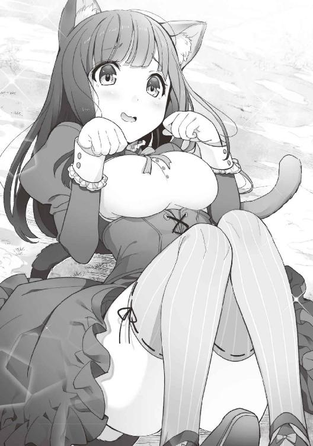
なにせ、おなかを上に仰向けになって、こっちを見ながら軽く握った両手を顔の横に。
あとは言わずともわかるであろう。
「そ、そこ、冷たいからもういいですよ。僕は母に言われて探しに行っただけですから」
「坊ちゃまは強いですにゃ。まさかあの人間たちが人攫いだったにゃんて......」
「坊ちゃまだなんて、僕はルードって名前があるんです。子供扱いしないでください」
『まだまだ十二歳の子供じゃないの。うふふふ』
「母さんったら......」
「じゅ、十二歳だったのですかにゃ......。私よりも五つも年下だったにゃんて」
「クロケットさんはやっぱりお姉さんだったんですね。でしたら、クロケットお姉さんって呼ばないと駄目ですね」
「そんにゃ、立派なものじゃにゃいですにゃ。それより、ルード坊ちゃまは、に、人間にゃのに」
『わたしの息子ですよ。初めて会ったとき、孤児だったのですよ。でも今は、わたしの可愛い息子なのです』
「そ、そうだったのですかにゃ......。それにしても立派な坊ちゃまですにゃ」
「えへへ。母さん、褒められちゃった」
『よかったわね。母さんも嬉しいわ』
見た目は違えども、クロケットには仲の良い母子に見えたのだ。
『それにしても、何があってこんなことになってしまったのかしら？』
「はいですにゃ。母の具合が悪いので、滋養のつく野草を採りに行こうとしたんですにゃ。それは森の出口あたりでにゃいと自生していにゃいもので、やっと見つけて夢中で採っていたらその、気が付いたら、あの部屋に捕まってしまったのですにゃ......」
なんとも不幸な巡りあわせなのだろう。
運が悪かったとしか言いようがない。
確かに黒い髪、白い肌で可愛らしい顔立ちのクロケットだ。
無防備に人前に出てしまえば、何が起きてもおかしくはないのだろう。
それも人間ではなく、猫人の女性なのだ。
この国でどういう扱いを受けているのか、ルードは初めて知ってしまったのだ。
この地域もあの男の国なのだろう。
『大きな町』というのも、この国の城下町のことだったはずだ。
こんなに離れた場所にも、あの醜い男のような自分勝手な人間もいるのだと思って、ルードは少し悲しくなってしまった。
「同じ人間として恥ずかしいです。クロケットお姉さん、ごめんなさい」
「そ、そんにゃ。ルード坊ちゃまは悪くにゃいですにゃ」
『そうよ。人間にもね、わたしたちにも、悪い人もいればいい人もいるの。それはその人の心の持ちようなのよ』
「うん。僕はあの『豚』のようには絶対にならないよ。もっと立派な人になって、あいつを見返してやるんだからっ！」
『はいはい。無理はしちゃ駄目よ』
「うん。わかってるよ」
▼
集落に戻ると、心配そうにしていたヘンルーダが起きて待っていた。
クロケットの顔を見ると、涙を流して俯いてしまったのだ。
「お母さん、心配かけてごめんにゃさい......」
「馬鹿ね......。でも、無事に帰ってきてくれてありがとう、クロケット」
「ごめんにゃさい」
二人は抱き合って再会を喜んでいた。
二人を見てほっとしたのか、嬉しく思ったのか。
ルードはリーダの首元に顔を埋めてしまった。
クロケットが行方不明になった理由を話すと、ヘンルーダは渋い顔をする。
「クロケットを助けていただいてありがとうございます。確かにそのような話を聞いたことはあったのです。そういうことがないように、人里には絶対に近づかないでと、子供達には言い聞かせていたのですが......」
「ごめんにゃさい。私が油断していたのがいけにゃいんです」
とにかく何事もなくてよかったとルードは思った。
あとはこの集落で起きている問題なのだろう。
『そういえば、作物が不作と聞いていましたが、どこまで困っているのですか？』
「はいですにゃ。今年も麦の成長が悪くて、家畜の餌しか収穫できにゃかったのですにゃ......」
「えぇクロケットの言う通りです。それで今年も、男たちが出稼ぎに出なければならなくなったのです」
「家畜って豚とかだよね？ 餌も作ってるんだね」
「はいですにゃ。このあたりは湿地が多くて、そこで簡単に育つので沢山取れるんですにゃ。その種を蒔くと、手をかけにゃいで育ってくれる穀物ですにゃ」
「それって食べられないの？」
「あまり食べるということは聞いたことがにゃいですにゃ。乾燥させて家畜に食べさせるのが普通ですにゃ」
ルードの記憶にある知識では、湿地で育つ穀物の種類はそれほど多くない。
それが穀物だったとしたら、ここの人には考えつかないだけで、なんとかなるかもしれないのだ。
「何かいい方法があるかもしれないから、それ、見せてもらえますか？」
「はいですにゃ。こっちの蔵にありますにゃ。でも食べられるとは思えないのですにゃ......」
「母さん、ちょっと見せてもらってくるね」
『この子はとても頭がいいんですよ。わたしも驚くくらいにね』
「そうなのね。クロケット、見せてあげなさい」
「はいですにゃ、お母さん。ルード坊ちゃま、こっちですにゃ」
「んもう。坊ちゃまはやめてってば」
部屋を出ていく二人の姿は、まるで姉と弟のような感じに見える。
リーダとヘンルーダは嬉しそうに見ていたのだった。
クロケットに案内された蔵には、牧草と思われるものが乾燥させてあった。
それはとてつもない量があった。
ルードがその牧草を見ると、ちょっとした異変に気付いた。
やはりルードの記憶にある、何かに似ているのだ。
「クロケットお姉さん。これ、何ていう草なの？」
「それは『ワラ』という草ですにゃ」
ルードは記憶の中にある知識を辿っていく。
「ほうき草じゃない。麦でもない。なんだろう？ どっか引っかかるんだよね......」
その束になっている穂先についた粒を取って、指先で揉んでみた。
すると外側の殻が擦れて、中の茶色いものが姿を現した。
ルードはピンとくるものがあった。
それを口に含んで軽くかみ砕いてみる。
それはなんとも懐かしさを感じる香りと、ちょっとした甘味があった。
「ルード坊ちゃま、汚いですよ？」
「大丈夫。これ、もしかして......」
ルードは二束ほど抱えて蔵を出ていく。
「ルード坊ちゃま、どうかしたのですかにゃ？」
「うん。たぶんこれでなんとかなるかもしれない」
「えっ？」
ルードはクロケットからもらった大きな鉢に、穂先についていたものをこそぎ取って集めていく。
鉢いっぱいになったものを、薪の先を丸く削ったもので優しくゴリゴリと擦っていった。
すると、外側の殻が外れてゆき、茶色い粒だけが残っていく。
それはルードが予想したものだった。
鉢の中で、丁寧に水を数回入れ替えながら洗う。
それが済むと鍋を借りて水を入れる。
そこにさっきの粒を入れて少し水を吸わせる。
一度水を捨てて、手首くらいの高さまで水を入れなおすと、木でできた蓋を載せて窯に火をつけた。
「確か、『始めちょろちょろ中ぱっぱ赤子泣くとも蓋取るな』だっけ？」
ルードの頭に何故だかわからないが、そのフレーズが浮かんだのだ。
それはきっと、火力の調整の仕方だと思ったのだ。
鍋に蓋をして、弱火でくつくつ沸騰するのを確認すると、次は火力を強くする。
蓋の隙間から湯気がでてくると、少し火力を抑えてそのまま続ける。
「うん。いい匂いがしてきたね」
「......にゃんだか、本当にいい匂いがしてきましたにゃ」
しばらくすると、それはできあがった。
蓋を外すと、湯気がむわっと上がったが、いい香りが漂ってくる。
ルードはひとつまみだけ口に入れる。
想像よりも粘り気が強いが、噛んでいくにつれて口の中に甘みが広がっていく。
「玄米のままだと色味が悪いけど、これはこれで美味しいかも。思ったよりも糠臭くないし」
品種が違うからだろうか、あまり糠を落とさなくてもいいように思えた。
『何より玄米に近い方が栄養価も高いはずだから』と、ルードは嬉しくなってくる。
「げんまいですかにゃ？ それって」
「うん。あれはね『コメ』といって、麦と同じくらいに栄養があるものだったんだよ」
「そうだったんですかにゃ......」
そのとき、『くぅっ』っとクロケットのおなかが鳴った。
「あ、すみませんにゃ。いい匂いでおにゃかが......」
「もう少しだけ待っててね」
そのまま蓋を閉めて、違う鍋に湯を張った。
「クロケットお姉さん。野草って残ってる？」
「少しだけにゃらまだあったかにゃ」
ルードは持ってきていた干し肉と干しきのこをちぎって湯の中へ入れる。
クロケットから受け取った野草も洗ってから、ちぎって鍋の中へ。
徐々にいい匂いがしてくる。
軽く味をみて、自分の鞄から石のようなものを取り出して、小刀で削って鍋に少しだけ入れる。
「ルード坊ちゃま、それは？」
「うん。『岩塩』だよ」
「がんえん？」
「塩なんだ。これ」
「えぇっ？ すっごく貴重なものじゃにゃいのすかにゃ？」
「それほどでもないよ。たまたま見つけたんだ。うん。これならいいかも」
二人分の器に肉と野菜のスープをよそって、炊いた玄米も器によそる。
ヘンルーダのいる部屋へ持っていき、クロケットと二人で食べてもらってみる。
「食べてみてください。きっとおいしいと思いますよ」
「こんにゃものが食べられるんですかにゃ......。あつっ、でもおいしっ」
猫人だけに猫舌だったのだろうか。
でもクロケットは、二口めからは黙々と食べ続けているようだ。
「本当ですね、とても美味しいです。まさかあの草がこんなものに変わるだなんて......」
それにしても、まさか米と出会えるとはルードも思っていなかった。
遠い記憶の中にあったルード好みの味の穀物。
これで猫人の集落も、麦が取れない年でも困ることはないだろう。
育てるのが楽でたくさん採れるというこの穀物は、ルードにとっても嬉しいものだったのだ。
おなかいっぱいごはんを食べたヘンルーダとクロケット。
長である母が我慢しているのだからと、娘のクロケットも一緒に我慢していたらしいのだ。
一休みしたあと、蔵の中に大量にあった稲をルードの指示で玄米へ加工していく。
それは、集落のすべての家に配っても配り切れないほどの量があったのだ。
調理の方法はルードが丁寧に教えていく。
こうして、集落の最悪な食糧事情は改善されたのだった。
▼
母子で近隣の森から乱獲しない程度に狩りを終えて戻ってくる。
元気になった集落の子供たちも、笑顔で二人を迎えてくれていた。
獲物の解体作業も皆、総出で手伝ってくれている。
ルードよりも幼い子供が多い集落。
二十戸程度の家しかないこの小さな集落では、二人で捕ってきたものでも十分なほどだった。
すべての家に配り終わると、クロケットと一緒に料理を始める。
その夜は、四人で楽しい夕食を迎えることができたのだった。
夕食が終わり皆で寛いでいると、クロケットが真面目な表情で母に向き直る。
「お母さん、お願いがありますにゃ」
「何かしら？」
「私、ルード坊ちゃまについていきたいのですにゃ。集落を救ってくれたお二人のお世話をさせてもらいたいのですにゃ」
「そう......、決めたのね。フェルリーダ、迷惑にならないかしら？」
『そうね。大丈夫だと思うわ。ね、ルード』
「ルード坊ちゃま、お願いしますにゃ」
「う、うん......」
ルードはちょっとだけ照れていた。
その理由は、クロケットは五体投地でお願いしていたからだった。
ヘンルーダもリーダも見慣れたそ格好。
ルードには、とても可愛らしく思えてしまったのだ。
クロケットは仰向けに寝転がり、おなかを見せたまま首だけ二人を向いていたのだ。
最初にリーダと会ったときと同じだった。
あのときよりも思いが強いからだろうか。
軽く握られた手首が、くいくいっと動いているのだ。
聞けば、これが猫人の服従の証らしい。
それは困ったことに、ルードの琴線に触れてしまったのだ。
年上のお姉さんが、こんなに可愛らしいお願いをしてくる。
ルードは断れるわけがなかった。
「クロケット」
「はいですにゃ」
「一生懸命尽くすのですよ」
「はいですにゃっ！」
「フェルリーダ、クロケットをよろしく、お願いしますね。この子も外の世界を見て学ばなくてはいけないでしょうから」
『えぇ。大切にいたしますわ』
「ルード坊ちゃま。末永くお願いいたしますにゃ」
「......はい？」
こうして家族の増えたフェルリーダ家。
米も分けてもらい、持ち帰ることになったのだ。
戻ってくるときに、こんなに綺麗な年上のお姉さんが一緒になるとはルードは思っていなかった。
初めてリーダの背中に乗ったクロケットは、目を回しながらなんとか我慢していた。
「うにゃにゃにゃにゃにゃ。こ、これは速いのにゃ......」
「でしょ？ 母さんはすごいんだよ」
「そ、そうですにゃ。凄すぎますにゃ」
気絶しないで、なんとかフェルリーダ家に着くことができた。
初めて集落から離れたクロケットだったが、それほど深く考えていないようだった。
元々天然気味のクロケット。
元から大人びていたルードだが、猫人の集落でまた少し大人になったような気がして、リーダは驚きを隠せないでいる。
猫人の集落の食糧事情を、偶然とはいえ改善してしまった。
自慢の息子が立派になっていくのが、怖くもあり嬉しくもあったようだ。
第四話 海が好き、魚も大好き、エビも好き。
冬が過ぎて雪解けの季節になろうとしていた。
クロケットも、この家に来てすぐ慣れてくれたみたいだっだ。
「はぁ、本当にいいお湯ですにゃ」
『そうね。このお湯があったからここに家を作ったのよ』
「ほら、駄目ですにゃ。ちゃんと肩まで浸かって温まらないと。身体が冷えてしまいますにゃ」
「いやだ！ もう上がるんだっ！」
『そうですよ。我儘を言うのではありません』
「いや、そうじゃないから。お風呂が嫌いなわけじゃないからっ」
母のリーダにジロリと睨まれ、クロケットに背中から抱きしめられながら、ルードはジタバタしながら嫌がっている。
それもそうだろう。
風呂に入っているのだから、ルードもクロケットも裸なのだ。
おまけに、クロケットの胸がルードの首のあたりに当たっている。
ルードは十二歳の男の子。
意識をするなというのが残酷だろう。
そんなルードの気持ちは、リーダとクロケットはわかってくれない。
ただ風呂を嫌がっているようにしか思えないのだ。
このあたりが父親のいない家庭の困るところだろう。
男の子のルードの気持ちなど、わかってもらえないのである。
「あー、そこそこ。ルード坊ちゃま、お上手ですにゃぁ......」
何をしているかといえば、もちろんブラッシングであった。
ルードの知識を総動員して、改良に改良を重ねて作った、いい香りのする木製のブラシ。
一本一本の先が丸くなっていて、地肌を傷つけないように作ってあるのだ。
これはリーダも絶賛していた。
ブラッシングすると、うっとりと目を閉じて、なんともいえない表情をしてくれるのだ。
リーダ用とクロケット用で大きさの違うものを作ってある。
リーダ用は手のひらよりも大きなもの。
クロケット用は手のひらより少し小さいものだった。
クロケットたち猫人にも髪をブラッシングするという習慣がなかったせいか、ここに来てからの彼女の髪は黒く、つやつやし始めていたのである。
クロケットは猫人である。
身体能力は人間よりも遥かに上のようだ。
ただ、争いごとの苦手な種族であるため、前に起きたようなことが心配される。
とても心の優しい種族なのだ。
最近はルードの買い物についていくことが多くなっていた。
フェルリーダ家から人間の町まで結構あるのだが、クロケットは遅れることなくルードについてこれる。
それなのに人間に捕まってしまうなんて、とルードが話すと。
「にゃははは。あのときは、すっごく油断してたんですにゃ。お母さんのことが心配で、それどころじゃにゃかったんですにゃ」
と、誤魔化していた。
本当に優しくて危なっかしいお姉さんである。
リュックのような鞄を背負って、二人は買い物に来ている。
人間の町ではクロケットのような猫人は目立ってしまう。
そのため、クロケットはルードの僕ということになっている。
「魔獣使いのお兄ちゃんじゃないか。今日は何が必要なんだい？」
「はい。その甘いお菓子と果物の砂糖漬けをお願いします」
「よく買ってくれるよね。お兄ちゃんが食べるのかい？」
「いえ、母が大好きなんですよ」
「そうかい。いつも買ってくれるからおまけしておくからね」
「すみません。じゃ、そこの砂糖漬けも一緒に」
「はいよ。いつもありがとうね」
銀貨と引き換えに商品をもらう。
この銀貨は、リーダが鉱山のあるかなり遠くの山へ足を延ばしたときに、そこから採ってきてくれた宝石の原石を換金して手に入れているものなのだ。
そのおかげで、こうして買い物ができている。
普段食べている米は、猫人の集落から譲ってもらっているから買う必要はない。
野草（自然に生えている野菜の類）や獣の肉は森から獲れるのだが、甘いものや生活に必要な雑貨などは、こうして町へ買い物に来ていたりするのだ。
クロケットが買い物についてくると言いだして、初めて連れてきたときは、ちょっとした騒ぎになったことがあった。
いくら綺麗な女性に見えるとはいえ、耳は隠せない。
この国では、人間以外は人と認められていないようだ。
そんなクロケットを庇うために、ルードは咄嗟に『僕は魔獣使いなんです』と誤魔化したのだが、『あぁ、魔獣使いね』と、あっさり受け入れられてしまった。
かなり昔だが、同じように魔獣を連れた人がいたこともあったらしく、この世界では稀にいてもおかしくないようだ。
ただ、猫人を従えているのは初めてだったらしい。
それも耳さえ違わなければ、クロケットは人間の中ではかなり綺麗な方だ。
道ですれ違う男性が振り向いてしまうくらいに。
最近はルードが根気よく教えたせいか、人間の言葉も片言だが話せるようになっていた。
「ありがとうございますにゃ」
ルードに続いてそう挨拶をすると、雑貨屋の店主も笑顔で応えてくれるようになった。
そうして徐々にだが、クロケットが一緒に買い物をしにきても、珍しいものを見る目で見られなくなってきたので助かっている。
▼
クロケットは料理や裁縫、掃除も完璧だった。
ただ、料理は猫人のものだったため、ルードの作っていたものとはかなり違っていた。
猫人の集落では塩はとても貴重なものだったため、味がとにかくあっさりしていたのだ。
ルードは五歳になったあたりから料理をするようになった。
それまではたき火のような竈で、リーダが焼いた肉や生で食べても大丈夫な野菜などを湯がいてリーダが噛み砕いてルードに与えていたのだ。
ルードはその行為が少し照れ臭かったのだが、大好きな母であるリーダからもらえるごはんだったため、喜んでそれを食べて育っていった。
ただ、五歳あたりになると、道具をうまく使えるようになったため、リーダに頼んで料理道具を手に入れてからは、ルードが作るようになったのだ。
その程度のことで驚くリーダではない。
ルードが最初から異常なほど大人びていたことから、そんな気がしていたのだという。
ルードが作ったごはんは美味しかった。
リーダも喜んで食べていたほどだ。
クロケットが猫人の集落でルードが作った料理を初めて食べたとき、衝撃を受けたらしいのだ。
今まで作っていた料理はなんだったのだろう、と。
猫人の料理は、あまり香辛料を使わない。
前述の通り、塩もほとんど使うことがないのだ。
貴重な塩と胡椒は、保存食になる干し肉を作るときに使うくらいだろう。
味が単調になってしまうのだが、味付けをする習慣がなかったため料理とはそういうものだと思って育っていたのだ。
それをルードがあれこれ持ち込んだ各種香草や岩塩。
その使い方に感銘を受けて、『ルード坊ちゃまのお世話をして、この料理を教わりたい』そう思ったと彼女からは聞いている。
今では、ある程度の料理の味付けが猫人の集落でも行われているらしい。
ときどき三人で訪れては交流を欠かしていないので、猫人の食習慣はがらっと進化したのだった。
もちろん、ルードの目当ては米だったのだが。
仲良くしてくれる猫人の子供たちとモフモフするのも大好きだった。
彼が生前そういう趣向の持ち主だったかはわからないが、リーダに育てられてからはモフモフするものが大好きになった。
もちろん、クロケットの耳としっぽも大好物であった。
クロケットの入れてくれたお茶を飲みながら、ルードたちが買ってきた甘い果実の砂糖漬けをお茶うけに、のんびりとした時間を過ごしていた。
リーダは大きめの器で温かいお茶を飲んでいる。
前足を器用に使って、大きめのティーカップのような器を固定して上手に飲んでいるのだ。
フェンリラであるリーダの味覚は、ルードとあまり変わらない。
特に甘いものが大好きで、食べているときは蕩けそうな表情になっている。
だからこんな日常が、今ではフェルリーダ家では当たり前になっていたのだ。
『クロケットちゃんの入れてくれたお茶、美味しいわね。この甘い果実もたまらないわ......』
「いえ、フェルリーダ様のおかげで、こうして美味しいものが食べられるのですにゃ。甘くて美味しいのですにゃ......」
まるで女子会のようになっていたフェルリーダ家の居間。
それを嬉しそうに眺めているルード。
年の離れた姉のようなクロケット。
いつも綺麗で優しい母のリーダ。
春の陽気の中、ルードは『家族っていいな』と思うのだった。
▼
季節は夏になっていた。
ルードのとある欲求が強くなったため、ちょっとした旅をすることになった。
「海産物が食べたい」
『どうしたの？ ルード』
「母さん。海って知ってる？」
『えぇ、ここからかなり離れたところにあるのは知っているわ。それがどうかしたの？』
「美味しい焼き魚とかエビとかが食べたい」
『それは湖では駄目なの？』
「川魚はあまり好きじゃないんだよね。泥臭くて、料理も大変だから」
そんなルードのちょっとした我儘で、海へ行くことになったのだ。
▼
「う、み、だーっ！」
ルードはその場に飛び上がって喜んでいる。
『わたしも初めて来たのだけれど。風の香りがいいわね』
「そうですにゃ。私も初めて見ましたが、こんなに広い水は驚きましたにゃ」
「うわ、しょっぱっ」
ルードは海水を舐めて驚いていた。
「だ、大丈夫ですかにゃ？」
「あのね、クロケットお姉さん」
「はいですにゃ？」
「この水をね、鍋で煮詰めると塩になるんだよ」
「うにゃっ！ それは本当ですかにゃ？」
「うん。だからね、塩なんて高価なものじゃないんだよ」
「こ、これが全部、塩ににゃるんですかにゃ......」
『本当にルードは物知りよね。もう驚いたりはしないのだけれど』
「うん。なぜか知らないけど、わかるんだよ。だからどうしても海の魚が食べたくなっちゃって」
ルードはいまだに前世の記憶が蘇ったわけではない。
ただ、膨大な知識がルードの頭に浮かんでくるだけなのだ。
だから、この世界に転生した事実も知らないのである。
自分が赤子であった頃の記憶は、心の中にしまい込んでいる。
生まれた屋敷であった衝撃的な事件のせいもあって、そんなことは忘れてしまったのだ。
今でも産んでくれた母と、クレアーナのことを忘れたわけではない。
いつか会いに行きたいとは思っているのだ。
あのときは、母が悪いわけでもクレアーナが悪いわけでもない。
不幸な出来事だった。
だが、今のルードの母はリーダなのだ。
十二年間育ててくれた彼女の愛情の方が勝っている。
産んでくれたことを感謝はすれど、リーダから離れるつもりはさらさらないのだ。
ルードは上半身裸になり、どぶんと海へ飛び込んだ。
リーダから泳ぎは教わっていたので、怖くはなかった。
海の水は澄んでいて、目の前の光景はとても美しかった。
人並み外れた肺活量を持つルードは、海の底でとあるものを見つけた。
それを三尾ほど腰の袋に入れて海面に浮きあがってくる。
陸へ戻ってくるとリーダのもとへ走っていく。
リーダの傍に座って、その殻を剥いて、ぱくっと食べてみる。
口の中に広がるほのかな甘味と潮の香、ぷりぷりとした歯ごたえ。
「うんうん。これだ。間違いないよ。ほら、母さんもクロケットお姉さんも食べてみて」
殻を剥いたそれをクロケットに手渡すと、ルードはもうひとつをリーダの口元へもっていく。
リーダは疑うことなく、それを口に含んだ。
軽く咀嚼すると、何とも言えない目をしてため息をついた。
『......はぁ。何ていうのかしら。言葉にできないくらい、美味しいわ......』
「ほ、本当ですにゃ。甘くてぷりぷりしてるのにゃ」
「これがね、エビっていうんだよ。生でも美味しいけどね、鍋で炒めても、火であぶり焼きしても美味しいんだ」
『そうね。湖にはない美味しいものなのね。さすがに驚いたわ......』
「海って美味しいんですにゃね......」
「それ違うから、海が美味しいんじゃなくて、エビが美味しいんだからね」
リーダに育てられ、鍛えられたルードの体力はたいしたものだった。
海に潜っては手製の銛で魚を突き、深く潜ってはエビやカニを獲ってくる。
その間に簡易的な日差しを遮る場所を、リーダとクロケットが作っていた。
強い日差しは二人にはきつかったらしく、少し暑そうにしていた。
ルードは腰の大きな布袋に入りきらないほどの海の幸を獲ってきた。
潮風はさすがに慣れていないと肌がべたべたしてくる。
風呂のないここで夜を明かすのは、二人にはちょっときついだろう。
かといって、近くの港町へ行ったところで、二人が歓迎されるのかどうかわからないのだ。
二人が涼んでいる間に魚の鱗を取り、エラと内臓を取る処理を終わらせてしまう。
「母さん、クロケットお姉さん。どうしよう、帰ろうか？」
『ルード、何事も経験よ。近くの町へ行ってみましょう。もし受け入れてもらえなければ、そこで帰ることを考えたらいいわ』
「そうですにゃ。ルード坊ちゃまにゃらできますにゃ」
「そうかなぁ。......うん、行ってみようか」
ルードは傷んでしまうともったいないから、海の幸を凍らせておくことにする。
『氷よ、凍てつけ』
本来であれば、こんな単純な呪文詠唱ではないのだろう。
ルードが試行錯誤して、詠唱を短くしてしまったのだ。
海の幸の表面が薄く凍っていく。
布の袋を三枚重ねて海の幸を放り込んでおいた。
これで暫くは傷んだりはしないだろう。
リーダが人間の匂いを辿って町を探している。
『こっちの方角に人が沢山いるところがあるわね。行ってみましょうか』
「うん」
「はいですにゃ」
第五話 海とお湯の国、シーウェールズ。
リーダの嗅覚はたいしたものだった。
自分たち以外の匂いがかぎ分けられる。
それも相手がいる場所がかなりの距離にもかかわらずだ。
暫くリーダの背に乗って移動すると、大きな港町が見えてくる。
城門のようなところに槍を持った男が二人立っていた。
城壁に沿って詰所が見えることから、きっと入国の審査をする場所なのだろう。
ルードとクロケットは、リーダから降りてゆっくりと近づくことにした。
一人の男がルードたちを視認したようだ。
その男の表情は、ぎょっとしたような驚きのものになっていた。
慌てて走ってくるのが見える。
「ちょっと、そこの少年。その。だ、大丈夫なのか？」
「大丈夫ですよ。僕の家族ですから」
ルードはリーダの首元に顔を寄せて目を細めて男を見る。
「なるほど、魔獣使いなのか。......こほん。この町はシーウェールズ王国の城下になります。この国にはどのような用件で来られたのですか？」
ルードを魔獣使いと勝手に判断した男は、言葉遣いを直して目的を聞いてくる。
ルードは姿勢を正し、男の目をしっかりと見て応える。
「はい。観光目的もありますが、家族を休めたいと思いましたので、立ち寄らせていただきました。入国は可能でしょうか？」
「まだ小さいのに立派な立ち振る舞いですね。この国は観光目的で来られる方も多いので、銀貨を預けていただければ、入国に必要な証書を発行できます。それでよろしければなのですが」
「はい。よろしくお願いします」
「では、こちらへどうぞ」
詰所のような建物へ案内される。
そこで必要な記入をして、銀貨三枚を引き換えに入国証書を受け取ることができた。
実は文字もリーダから教わっていたのだ。
博識な母を持って、ルードは幸せな子だ。
「海とお湯の国、シーウェールズをゆっくりとお楽しみくださいませ」
門を抜けると、いつも買い物に行っていた町より立派な町並みが広がっていた。
なぜルードたちが歓迎されたかが、ようやくわかった。
人間だけではなく、色々な種族がそこにはいたのである。
往来を行き交う人々の中には犬のような耳をしている人や、腕に鱗のようなものが見える人もいる。
きっとここは、様々な種族が受け入れられている国なのだろう。
それに観光地でもあると衛士の男性が言っていた。
ルードには未体験の魅力的な国だったのである。
「あ、猫人もいますにゃね」
ルードの近くでこっそりとクロケットはそう言った。
クロケットは毛色からいって黒猫のような感じなのに対して、彼女の指さした方向には、三毛猫のような毛色の子供を連れた母親がいたのだ。
クロケットの集落は皆、黒い毛色をしていたことから、違う猫人なのだろう。
「本当だ。髪の色は違うけど、クロケットお姉さんにそっくりだね」
『あら本当。わたしも他の部族の猫人さんは初めて見るわね』
「ですにゃ。......あ、いっちゃった。なんとも世知辛い世の中ですにゃ」
「クロケットお姉さん。それ使い方違うから......」
「あら？ そうでしたかにゃ？ つい教養が粗相をしてしまいましたにゃ。おほほほ......」
「まったく意味がわからないってば......」
最近覚えが早かったため、ルードがあまりに難しい言葉を教えすぎた感じはあった。
クロケットのボキャブラリーは増えたのだが、たまに使いどころを間違ってしまったりする。
相変わらずの天然さにルードは苦笑いを隠せなかった。
宿屋を探しながら通り沿いの商店を覗いていると、かなりの食材が売っているのが見える。
ルードは楽しそうにあれこれ食材を買い始める。
海産物も結構多そうで、この国を一目で気に入ってしまったようだ。
売り子の女の子や店主に至るまで、人間以外の種族の人たちが生き生きと生活している。
中には恐る恐るリーダの背中を撫でさせてほしいと、聞いてくる犬人の売り子もいたくらいだ。
リーダはそんなお願いを喜んで受け入れていた。
きっと、リーダがフェンリラだということに気づいていたのかもしれない。
背中を撫でながら涙を浮かべていたのだから。
リーダとクロケットとも会話ができる人が多いため、彼女たちも実に楽しそうだった。
買い物の途中で宿のことを聞いたのだが、どの宿もリーダを嫌がるところはないという話だった。
すれ違う人が足を止めてリーダを見ている人もいたが、それは物珍しさではなく美しさがあったのかもしれない。
エランズリルドで感じたような、嫌な視線がなかったからそう思えたのだ。
ルードが泊まってみたいと思った宿屋が目に入った。
そこはさっきすれ違いで見つけた、猫人の小さな姉弟が店先で遊んでいたからだ。
他の宿屋より少し小さめだったが、小奇麗で間口が広い。
「すみません。三人なんですけど」
「はいっ。ほら、あなたたち邪魔しちゃ駄目よ」
母親なのだろうか、子供たちはその女性の足元に纏わりついてこちらを見ていた。
クロケットはしゃがんで子供たちに手を振ってみる。
すると、二人とも笑顔で手を振ってくれるではないか。
「すみませんね。うちの子たちがご迷惑を」
「いえ。大丈夫ですよ。できたら一番大きい部屋をお願いしたいのですが」
「はい。大丈夫です。入口を広く作っている部屋もございますので」
リーダの姿で察してくれたようだ。
ルードはリーダを見ると、彼女は嬉しそうな表情をしているのがわかった。
「二、三日お願いしたいのですが」
「はい。よろしくお願いいたします。ほらあなたたち、お客様なのですから奥へ行ってなさいね」
「「はーい」」
「あの、すみません。これ料理してもらえますか？」
ルードが海の幸が入った布袋を渡した。
受付の女性が中を見て微笑んだ。
「あら。美味しそうですね。これは頑張らないといけません。私たちと同じ猫人の方もいらっしゃるみたいですからね」
その女性はクロケットを見て、毛色は違えど同じ猫人だということに気づいていたのだろう。
「よろしくお願いしますにゃ」
「いえ。こちらこそ、娘と息子を気遣っていただいてすみません」
「可愛いお子さんたちですにゃ」
「ありがとうございます。ではお部屋へ案内いたしますね」
ルードたちは、女性について部屋へ案内された。
この宿はきっと、大柄な種族も利用することを視野に入れて作られているのだろう。
部屋の前で女性はリーダにこっそりと言っていた。
「年齢よりしっかりとした、お子さんですね」
『ありがとうございます。わたしの自慢の息子ですからね。あなたのお子さんたちも可愛らしいですよ』
「いえいえ。やんちゃなばかりで」
ルードを見つめる眼差しが、母親のそれであったことに気づいていたのだろう。
リーダにしか聞こえない声の大きさだったので、ルードとクロケットには聞こえてはいない。
それは、母親同士の楽し気な内緒話だった。
案内された部屋は広くて風通しもよく、窓から町を見下ろせるところだった。
「お風呂ですが、お湯を引いてますので、すぐに利用いただけるようになっています。では、お食事ができましたらお呼びいたしますので、ごゆっくりなさってくださいね」
「はい。ありがとうございます」
ルードは早速風呂場を見に行った。
『お湯を引いている』という言葉と匂いでなんとなくわかったのだ。
フェルリーダ家のお湯とは少し違うのだが、衛士の男性も言っていたので、そんな感じがしていたのだ。
おまけに部屋の気遣いと同じで、浴槽が大きく作られていた。
「母さん。うちと同じようにお湯が出るみたいだね」
『そうね。この国に近づいたときにね、そんな匂いがしたのよ』
「お湯ってそういう意味だったんですにゃね？」
「うん。ゆっくり入れるね」
「早速準備しますにゃ。ルード坊ちゃまとフェルリーダ様はゆっくりしていてくださいにゃ」
▼
海が近くて、温泉も湧く地域。
猫人や犬人のような種族も共に暮らしていける優しい感じのする国。
ルードは勇気を出して立ち寄ってよかったと思った。
ルードは相変わらず嫌がったのだが、結局三人で一緒に風呂に入ることになった。
風呂からあがり、海沿いだということもあって風通しがよく、汗でべたついていた身体もさっぱりしている。
身体もぽかぽかと温かく、外から来る風が余計に涼しく感じていた。
ルードとクロケットが仲良くリーダのブラッシングをしていると、部屋のドアがノックされた。
ブラッシングをルードに任せて、クロケットがそれに応えにいく。
「はいはい、ですにゃ」
クロケットがドアを開けると、そこには小さな女の子が立っていた。
「あ、さっきのおねぇちゃん。おかあさんがごはんできたからって」
クロケットはしゃがんで女の子と目線を合わせた。
頭を優しくグリグリと撫でると、女の子は目を細めて気持ちよさそうにしている。
「ありがとうですにゃ。いい子いい子」
「んふふふ」
クロケットはその女の子をひょいと抱き上げた。
「ルード坊ちゃま、フェルリーダ様。行きましょうか」
「うん」
『えぇ』
ルードたちは部屋を出ると、階段を下りて女の子の案内で食堂へ向かった。
「そこ。そっちだよ」
「はいはい、ですにゃ」
「母さん。僕も小さいときあんな感じだったの？」
『そうね。ルードはもっとやんちゃだったわよ』
「嘘だぁ」
『うふふふ......』
食堂に着くと、女の子の母親がキッチンから顔を出した。
「こらっ。ひとりで行っちゃ駄目って言ったでしょ？」
「だって。おねえちゃんとおはなししたかったんだもん」
「いいんですにゃよ」
「あー、ずるい。ぼくもー」
男の子もクロケットの足にひしっと抱き着いてくる。
生まれ育った集落が小さかったこともあって、クロケットは小さい子供が好きで、扱いに慣れているようだ。
二人とも五、六歳くらいだろうか、可愛らしい三毛色の耳がちょこんとついている。
嫌がっていない証拠に、クロケットの黒いしっぽは左右にゆっくりと揺れていた。
ルードの記憶にある知識では、リラックスしている状態を現しているはずだ。
『大丈夫ですよ。うちの子も同じくらいのときは、もっとやんちゃでしたの。目を離すといなくなっていて、泣きながら戻ってくるんです。必ずどこかしら怪我をしてきて大変だったんですよ』
「か、母さん......。ひどいよ」
さっそく、自分がリーダの息子だとバラすような返事をしてしまう。
そんな雑談をしている間に、料理がテーブルに並び始めていた。
そこでルードは少し驚いた。
次々と素朴で美味しそうな料理が運ばれてきたのだ。
魚の種類はルードの知識にあるものではなかったのだが、根魚と中型の青物だったと思う。
半身になった青物と思われるあら塩を振った魚の塩焼き。
根魚と根菜の煮つけ。
カニの澄まし汁。
一番驚いたのが、エビを殻のまま焼いた鬼殻焼のようなものまであるのだ。
「改めまして、この宿を切り盛りさせていただいています、ミケーリエルと申します。リエルとお呼びください。この宿のご利用ありがとうございます」
あまりに美味しそうな料理の調理方法に見とれていたルードは、ミケーリエルの丁寧な挨拶を受けて我に返った。
「あ、はい。こちらこそ、丁寧な対応ありがとうございます。僕はフェムルード、こちらは母のフェルリーダ。家族のクロケットです」
「これはご丁寧に。この子が双子の姉でミケーラ。こっちが弟のミケルです。ほら、ご挨拶なさい」
「ごりようありがとうございますっ」
「ありがと」
「うんうん。ありがとうね」
ルードは自分よりも小さな二人が、一生懸命挨拶をしてくれたのでとても嬉しかった。
しゃがんで頭を撫でると、二人とも気持ちよさそうにしてくれる。
「あの、よかったらなんですが、量が多すぎるので、みなさんも一緒にどうですか？」
「あら。よろしいのですか？」
『あのね。わたしは身体の割には小食なのですよ。わたしたち三人では食べきれないと思いますので』
「はいですにゃ。みにゃさんも一緒だと、嬉しいですにゃ」
ミケーリエルは少し考えたのだろう。
「ご宿泊いただいたうえに、なんか申し訳ありません。ですが、お言葉に甘えさせていただきますね。ほら、あなたたち、手を洗っていらっしゃい」
「「はーい」」
料理は美味しかった。
こちらへ来てから、森の奥ということもあって川魚しか食べていなかったのだが、この海の幸にはすごく満足したのだった。
リーダも『川魚と違って、味が濃いのね』と。
クロケットに至っては、返事をするのが辛そうなくらいに夢中で食べすぎてしまった。
双子の姉弟も美味しそうに食べてくれている。
「それにしても、フェムルードさん、でいいのかしら？」
「はい。ルードで構いません」
「ではルードさん。鱗の処理、エラと内臓の掃除も見事なものでした。驚きましたよ」
「いえ、川魚で慣れていたので。それよりも、この粒の粗い塩は？」
「えぇ、ここの海の水から私が作っています。この国の家庭では普通のことなんですよ」
「やっぱりそうでしたか。クロケット姉さん、塩なんて特別じゃないってわかったでしょ？」
「実にびっくりしましたにゃ。私の集落では貴重品だったのですにゃ」
確かに海の遠い地域だから仕方がないのだろう。
集落には岩塩を置いてきてあるので、最近では料理に塩が普通に使えるようになっていた。
岩塩はリーダにあちこち連れて行ってもらったとき、偶然見つけたことから、定期的に取りに行っていたのだ。
足元にこぶし大の岩塩がごろごろと転がっていて、驚いた思い出がある。
「それにしても、ここっていい国だよね。僕も、ここに住んでみたいな」
ルードはそんな本音をぽろっと漏らしてしまった。
第六話 お母さんの力とその素性。
食事も終わって部屋へ戻ってごろごろとしていた。
海からくる潮の香りの風も心地よい。
「ねぇ、母さん」
『何かしら？』
「あのね、お願いがあるんだけど」
『言わなくてもわかってるわよ。この国に住みたいって言うんでしょ？ 食事のときにそう言ってたのを憶えていますからね』
「うん、......あのね。僕は前から母さんと、クロケットお姉さんと一緒に町を歩きたかったんだ。それがさ、この国では普通にできるじゃない？ それにクロケットお姉さんと同じ、猫人の人もいるしさ」
「はいですにゃ。あのとき見た親子が、まさかここで宿屋をやっていたにゃんて、驚きでしたにゃ」
「うん。あの子たちも可愛かったよね。双子なのに、疎まれず、呪われずに生きていける。心温かい人が沢山いる、いい国だと思う......」
ルードは窓から見える海をぼうっと眺めながら、心のうちを漏らしていたのだ。
あの森は、憎々しいあの男の国ではない。
買い物もあの国の城下ではないが、属している町へ出かけているのだ。
ことあるごとに思い出してしまうのは仕方ないだろう。
ルードは母であるリーダに育てられたから、普通の人間より丈夫に育っている。
クロケットも町へ買い物に行けるようにはなったが、猫人は争い事に向いていない。
身体能力はルードと変わらないが、腕力もルードとあまり変わらないのだろう。
ルードとリーダが一緒にいれば、クロケットは安全なはず。
猫人の集落も森の深い位置にあるため、人間がおいそれと入ってくることはないはずだ。
ただ、あの国の町、人里にはリーダは近づこうとしないのだ。
だから、一緒に町を歩くことはできなかった。
『おうちに戻ったら、こちらへ引っ越してきましょうか？ ルード』
「いいの？」
『えぇ。あそこは幼かったあの子を育てるために移り住んだ場所なの。ルードが大きくなったからもういいかな、とも思うのよ。あそこに眠ってるあの子も、きっと許してくれるわ。ルードにあの子と同じ名前をつけさせてくれたから、あの子を忘れることはきっとないと思うの。あの子の分まで元気に生きてくれたら、わたしはそれでいいの』
「母さん、その子はもしかしてあの国の人間が......」
『いいえ、違うのよ。あの子は元々身体が弱かったの。あなたに会う前にね、冬を越すことができなかったの。あなたが心配するようなことはなかったのよ。わたしがもう少し丈夫な子に産んであげられなかったのが、いけなかったの......』
リーダはルードの横に来て、同じように海を見つめていた。
ルードはリーダに甘えるように、彼女の首に顔を埋める。
クロケットは、背後からふたりに抱き着くように身体を寄せた。
「私はルード坊ちゃまとフェルリーダ様がいるところであれば、そこが私の居場所ですにゃ」
「ありがと。クロケットお姉さん」
その晩はゆっくりと眠って、朝起きるとルードたちは三人で町を見て回った。
どこの誰もがリーダを敬遠することなく接してくれていた。
国の入り口を守っている男性たちは、きっと見慣れないリーダに驚いていただけだろう。
その人たちは人間なのだから、それは仕方のないことだ。
何度も顔を合わせれば、それはいつか解消する。
この国にいる猫人や犬人などの種族は、あの国、エランズリルドでは魔獣や魔族と呼ばれていた。
この国ではそんな呼ばれ方はしていない。
猫人は猫人。
犬人は犬人。
各種族を尊重して人間と同じに扱ってくれている。
それから二日ほど、ゆっくりと海を見たり、浜で遊んだりしながら過ごしていた。
そして、この国を発つ日。
ミケーラとミケルはクロケットの足に抱き着いていた。
「いやーっ」
「いやいやっ」
「ほら二人とも、また来てくださいねって挨拶なさい」
「いやっ。いやったら、いやっ」
「ぼくも、いやっ」
クロケットは困った顔をしながらしゃがむと、二人をきゅっと抱いていた。
ルードも二人の頭を撫でてあげている。
「あの、お世話になりました。大丈夫ですよ。僕たちこの国に越して来ようと思ってるんです」
「まぁ、そうなのですか。ほら、二人とも。またねって挨拶なさい」
「ほんと？」
「またくる？」
「また来ますにゃ」
『息子がここに住みたいと言ってました。実はわたしも気に入っているのですよ。生まれて初めてです。猫人さんたち以外の人に温かく迎えてもらったのは』
「そうでしたか。また会えることを楽しみにしていますね。ご利用ありがとうございました。いってらっしゃいませ」
「またねー」
「またね......」
「はい。また会いましょうですにゃ」
「お世話になりました。またすぐに会いに来ますから」
三人に見送られながら、ルードたちは国を出ることになる。
城門の詰所に行くと、受付をしてくれた男性が出てくれている。
入国証書を渡すと、銀貨を戻してくれた。
「先日は大変失礼なことをしてしまいました。上司からお話を聞きまして、申し訳ないことをしたと思っています」
「どうされたんですか？」
「いえ、そちらの女性が、あなたのお母さまだと聞きました。本当に申し訳ございません」
「いいんですよ。慣れていなければ仕方ないことです。僕たち、近いうちにこちらへ住みたいと思ってるんです」
「そうですか。それは歓迎いたしますよ。この国はいいところですから。では、いってらっしゃいませ」
「ありがとうございます。ではまた」
その男性は三人が見えなくなるまで頭を下げていた。
▼
家に戻ってきて、すぐにルードはリーダにお願いをした。
「母さん」
『何かしら？』
「もうひとりのルード君に、僕のお兄ちゃんに挨拶したいんだ」
『まぁ。......いいの？』
「うん。母さんを独り占めしちゃってるし、引っ越しするから。きちんと挨拶したい」
少し離れた場所に、見晴らしのいい丘があった。
ここに彼は眠っているのだそうだ。
樹齢千年はありそうな太い木があり、その足元には草木が育っていた。
『あの子はね、ここの底深くに眠っているのよ。フェムルード、この子がもうひとりのルードよ』
「お兄ちゃん。ありがとう。母さんに会わせてくれて」
「フェムルード君。ありがとうですにゃ」
三人はしばらく無言でその場に留まって、そこから見える景色を眺めていたのだった。
▼
夕方になろうとしていた。
日が落ちる寂しさを感じるのも、亡くなったフェムルードとの別れの時間がゆっくり取れたということなのだろうか。
『ルード、戻りましょうか』
「うん。母さん」
「はいですにゃ」
ルードが帰ろうとしたとき、頭の中で誰かが話しかけてきた。
『（あいにきてくれてありがと）』
「（えっ？ 誰？）」
何となく誰かはわかっていた。
ルードには、さっきから誰かがいるような気がしていたのだ。
『（ボク。おねがいがあるの）』
「（どんなこと？）」
『（......ボクもつれていって）』
「（えっ？）」
『（なにもしないよ。ママのちかくにいたいだけ）』
「（いいよ）」
『（いいの？ うれしい。ありがとう、ルードくん）』
地中から出てきた淡い光が、すぅっとルードの身体に入ってきた。
刹那の時間の会話だったが、彼が入ってきたとき、決して嫌な感じはしなかった。
『何してるの？ 帰るわよ、ルード』
「う、うん」
▼
家に戻ると、風呂に三人で入って、三人で固まって寝ることにした。
ルードは最近、リーダと離れて眠ることが多くなったが、今夜は彼女に抱き着いて眠ることにした。
『ルード。どうしたの？』
「ううん。こうしていたいの」
『変な子ね。ほら、もっとこっちへいらっしゃい』
そう言って、リーダは前足できゅっと抱いてくれる。
「ママ」
『えっ？』
「ありがとう......、だいすきだよ、ママ」
『ルー、ド？』
『（ありがとう。やっとあっちにいける。ボクのちからはきみにあげるね。ルードくん。バイバイ）』
「（うん。もういいんだね？ おやすみ、お兄ちゃん......）」
朝起きると、荷造りを始める。
ひとっ走り町まで行き、大きな鞄をいくつか買って帰ってくる。
そこに必要なものを詰めて、敷地の外へ出てきた。
『忘れ物はない？』
「うん、大丈夫だよ、母さん」
「はいですにゃっ」
『少し離れていなさいね』
「何をするの？」
『ここを吹き飛ばすの。もし、あの馬鹿な男が帰ってきたら、唖然としてしまうようにね』
リーダは、いたずらっ子のようにウィンクをする。
男とは、おそらくリーダの夫だった人だろう。
リードとクロケットが荷物を持って離れると、リーダは前足を地面に食い込ませるように力を入れていた。
『いいかしら？』
「うん」
「はい、ですにゃ」
すると、リーダの身体から魔力のようなものが立ち上ったかと思うと、全身に帯電が始まったかのように、バチバチと何かが弾けるような細かく青白い光が纏わりついている。
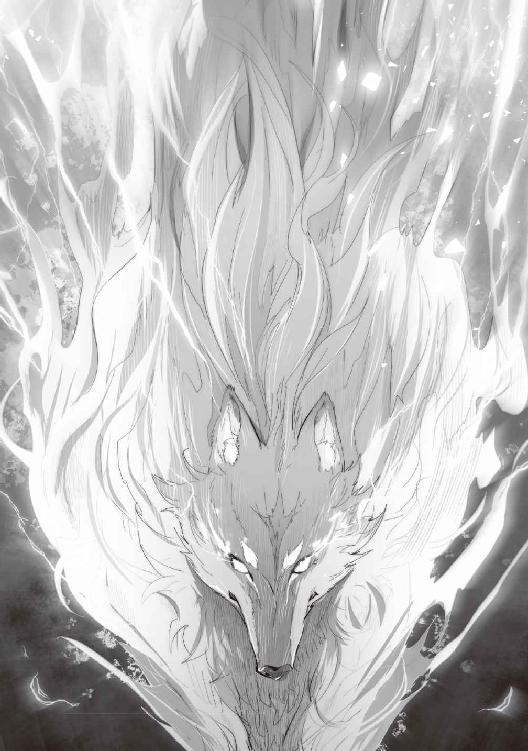
周りの鳥や獣の気配が遠ざかっていくような、そんな気配を感じた。
リーダを中心に、風が暴れている。
クロケットの身体が恐怖を感じてか、震えが止まらなくなっているようだ。
ルードはクロケットの手をきゅっと握る。
ルードの手を通してクロケットの震えが伝わってくる。
だが、クロケットの震えもルードの気持ちが手を伝わっていたのだろう。
徐々に治まっていたのだ。
リーダは後ろを向いて二人の様子を確認すると、優しい目を向けてくれた。
今一度、敷地を睨むと、力を解放する。
その刹那、雷が落ちたような衝撃音が発生する。
辺りをつんざく轟音と共に、一面がホワイトアウトした。
クロケットは音と同時に目を閉じてしまったが、ルードは一部始終を瞬きせずにしっかりと見ていた。
リーダの放った雷撃は、周りを一瞬で消滅させるほどの威力があった。
視界がはっきりしてきたときには、すべての敷地内にあったものは消滅していだのだ。
「......すごいね、母さん」
『あら。これでも手加減したのよ？ 全力の一分も使っていないわ。そんなことしたら、あなたたちも危ないのですから』
リーダはさらっと言うのだが、これが彼女の力の一部なのだろう。
絶対に敵わない圧倒的な怖さ。
でもいつか、追いついてみたいと思える強い母は、ルードの自慢の母親だった。
「クロケットお姉さん、もう大丈夫だよ」
クロケットが恐る恐る目を開けた。
「ほぇえ......。にゃんにもにゃくにゃってしまったのですにゃ......」
▼
シーウェールズ王国へ行く前に、クロケットの集落へ寄ることになった。
前に来た時と違って、ルードたちを見つけると、集まってきて声をかけてくれている。
この集落も今の状態であれば困ることはないだろう。
そのうち男たちも帰ってくるので、より効率よく米の収穫が行われるはずだ。
リーダはヘンルーダにシーウェールズ王国へ行くと伝えている。
ヘンルーダはクロケットに厳しい視線を向けた。
「別にこちらへ寄る必要はなかったのですよ。どこへ行ってもあなたの大切な人たちを最優先になさい。力の限り支えなさい。私ができなかったお返しでもあるのよ。それはあなたに任せるわ。ここのことは心配しなくても大丈夫。ルード君のおかげで、みんなの生活も楽になったのですからね」
「......はい、ですにゃ」
クロケットはルードの傍に座って、ヘンルーダの目をしっかりと見ている。
『仕方ないわね』という表情を娘に見せたヘンルーダは、リーダに近づいてルードがよくやるように首元へ頭を寄せた。
「フェルリーダ。あなたに助けられて、ルード君にも助けられて......。もう、なんと言えばいいのか......」
『いいの。クロケットちゃんもルードを可愛がってくれてるわ。とても助かってるのよ。わたしだって、あなたに助けられたのだから。それにね、いつでも会いにこれるから、ね』
リーダとヘンルーダは抱き合って別れを惜しんでいるのだろう。
娘よりも友人との別れが辛いのだろうか。
猫人の母親であるヘンルーダは案外ドライな性格なんだな、とルードは勝手に勘違いしていた。
クロケットが後ろから抱き着いてきたが、今日は彼女のしたいようにさせてあげよう。これからはもっと、クロケットに優しくしてあげようとルードは思った。
そんな気持ちになりながらもルードは、湯気が上がりそうなくらいの真っ赤な顔で俯いていたのだ。
何気にリーダとヘンルーダはそんなルードを見て、口元を少し吊り上げて、にやりと笑みを浮かべていた。
クロケットはルードを抱きしめて、二人にぺろっと舌を見せていた。
このことを知らないのは、ルードだけだったのは言うまでもない。
別れを済ませたクロケットとリーダを連れて集落を出ようとすると、集落の皆が集まって三人に礼をしていた。
それはルードにとって常軌を逸した場面だった。
皆、通路の両側に仰向けになって、例の服従のポーズで礼をしていたのだ。
子供たちやそのお母さんたち、総勢二十名はいただろうか。
固まっていたルードを引っ張りながら、クロケットは手を振って進んでいく。
後日ルードから聞くまで、リーダは彼がなぜ驚いていたかを知らなかった。
▼
シーウェールズ王国から買ってきた大量の魚の干物と引き換えに、少し多めに米をもらってきた。
なんでも、この集落では米を年に二回収穫できるらしい。
それだけ成長の早い品種だったみたいだ。
今年は去年よりももっと多く作るらしい。
いつルードたちが取りに来てもいいようにするとのことだった。
リーダの身体に大きい鞄をいくつかぶら下げての旅。
その鞄によっかかるようにクロケットが座り、彼女の前にルードが座っている。
リーダの話では、これくらいの重量は重いうちに入らないそうだ。
その上、二人を乗せていても、走るのには全く影響がないらしい。
全く凄い母親であった。
それほど急いではいなかったが、夕方になる前にシーウェールズ王国が見えてきた。
城門の入り口には、見覚えのある男性を見つけた。
というより、詰所から三人を見かけて走ってきたのである。
「お帰りなさいませ。ルード君、お母さん。お姉さん」
「はい。今戻りました」
「先日手続きをしてましたので、このままお入りください」
「あの、お願いがあるのですが」
「はい。何でしょうか？」
「家を貸してくれるか売ってくれるところを紹介してほしいのですが」
「......そうですね。では、私が案内いたします。申し遅れました。私はこの国の衛士長をしています。ウェルダートと申します」
「ご丁寧に、ありがとうございます」
「では改めて。皆さま、ようこそシーウェールズ王国へ」
ウェルダートは、踵を鳴らして足を揃え、姿勢を正して丁寧に一礼してくれた。
それは三人を歓迎してくれた彼の意思表示だったのだろう。
夕方だというのに、まだこちらは明るい。
ウェルダートに案内されて連れてこられた場所は、周りの商店と比べるとそれほど大きくないところだった。
「ここは私の知り合いが経営しているところなのです。あ、ボニーエラさん。この方たちが部屋を探しているそうなんですけ──」
ボニーエラと呼ばれた女性が、こちらを振り向いた瞬間。
見慣れた光景が目に入ってしまった。
その女性は犬人だったのだ。
おなかを上に向けて、寝転んで胸の前に手を置いて目を瞑ってしまったのだ。
「......えぇっ？」
もちろん、ウェルダートは固まってしまった。
きっと服従のポーズを初めて見たのだろう。
「こ、こ、これは、よくおいでいただきましましまし......」
「あの、落ち着いてください」
「いえ、私のようなものが、フェンリラ様にお会いできるなんて光栄ですっ」
『そんなに大げさにしないでくださいませんか？ 息子の目もあるので......』
リーダは予想していたみたいだが、苦笑は隠せないようだ。
ボニーエラは、恐縮しながら体を起こした。
「フェンリラ様、ですか？ あれ？ どこかで聞いたことがあるような......」
ウェルダートはボニーエラが獣語を話しているのに気づいて、獣語で話し始める。
きっと必死になって覚えたのだろう。
「フェンリラ様はフェンリルの女性でして、私たち犬人女の憧れなのです。美しさと強さを兼ね備えた気品ある種族なのですよ」
ボニーエラは、さも自分のことのように、ウェルダートに自慢をする。
『わたしはフェルリーダという名前があるのですから、種族名に様をつけられても困るのですけどね。よかったらリーダとお呼びください』
「は、はい。フェルリーダ様......、えっ？ 確か、三番目の王女様のお名前がフェルリーダ様と......」
『あっ。うそっ。今の忘れてください。わたしはただのリーダですからね』
慌てるリーダは珍しかった。
口調は優しかったのだが、リーダの目は笑っていなかった。
もちろん、ジロリと睨まれたボニーエラはビビっていた。
「は、はい。もちろんでしゅ。リーダ様。で、ごじゃいますね？」
動揺しまくり、噛みまくりでルードも困ってしまった。
「母さんって、王女だったの？」
『ほら。息子にもバレてしまったではないですか。説明するの大変なんですよ......』
第七話 新しい我が家。
ボニーエラが固まった状態から復帰する頃、今度はウェルダートが顔面蒼白な状態になっていたのである。
「ふぇ、フェンリル様というと、あの......。怒らせたら、国一つ一瞬で蒸発させられてしまうという......」
『それはいつの時代の話ですか......。確かに、わたしのお婆さまが昔そんなことをしたという話は聞いたことはありますけど。わたしは違いますよ。勝手に怖がらないでいただけますか？』
「は、はい。申し訳ございませんでした。では、私は職務に戻らせていただきますので」
ウェルダートは一礼して、そそくさと戻っていった。
おそらくは、失言してしまって恥ずかしくなったのだろうか。
残されたボニーエラは呆然としていた。
きっと『私を残して逃げてしまった』と思っているのだろう。
「母さんのお婆さんって強いんだね」
『そうね。普段はおっとりとしているのだけれど、怒らせると怖かったわ......』
「でも、僕、会ってみたいかも」
『そうね。あなたが大きくなったら連れて行ってあげるわね』
「うん。あ、そうだ。部屋だった。あの、ボニーエラさん」
「は、はいっ」
「僕たち今日こっちに引っ越してきたんですけど、部屋を決めないで来てしまったのです」
「で、では。い、一軒家になりますけど、ちょうど空いてるところがありますので、ご紹介できますが」
「そうですか。母さん、いいかな？」
『えぇ、見せてもらいましょうよ。けど、お金足りるかしら？ ルード、腰の鞄から宝石を出してもらえるかしら？』
「うん。これだね。まだ換金してないんですけど、これで足りますか？」
ボニーエラに袋を開いて見せる。
『宝石』という言葉を聞いて笑顔になっていたところを見ると、立派な商売人なんだろうとルードは思った。
ボニーエラの目が『お金』と書いてあるような感じに、キラキラと輝いて見える。
「も、もちろん足ります。足りるどころか、このうちの半分ほどで買えてしまいますよ」
「そうなんですか。よかったです」
「やった。仲介料でうはうはになりそう......。いえ、すみませんでした。これからご案内いたしますね」
ボニーエラの心の声がダダ漏れしていたため、ルードたちは苦笑いをするしかなかった。
▼
案内されたところは、商店の並ぶ道沿いの一番外れにあった。
広い敷地に大きな庭のある、二階建ての家だった。
しばらく人が住んでいなかったのだろう。
「ここは少し前まで、大型の種族の方が住んでいたそうです。ただ、作りが大きすぎて買い手がつかなくて、数年の間空き家になっていました。リーダ様にもいい大きさだと思いまして、ご紹介させていただきました。今、鍵を開けますので、どうぞお入りください」
外壁は白いブロック積みのモザイクのようにも見える。
白いレンガといえばわかるだろうか。
色味の違う石を互い違いに組み合わせて外壁を作り上げている。
ルードが一番気になったのは入口。
二枚の玄関扉になっていて、リーダも一枚開けるだけで余裕をもって入れるようだ。
大型の種族が住んでいたというだけあって、文句なしの作りだ。
両方開けてもらい、リーダと並んで入っていく。
家の内側の壁は薄いカーキ色。
落ち着いた感じがある、いい色味の壁だ。
暖炉があり、広めのリビングのような部屋が目に入ってくる。
明り取りも申し分ないほど大きめの窓。
庭に出るところは勝手口もある雨戸形式になっているようだ。
ここで寛ぎながら、遠くに海を見ることができる。
右奥には広いキッチン。
これも結構横に大きい。
「ここのお風呂もお湯を引いてるんですか？」
「はい。源泉から直接お湯を引いてるんです。この国で沸く湯量は豊富で、いつも綺麗なお湯に入れるのも特徴なんです」
「母さん、よかったね」
『えぇ。ゆっくりお風呂に入れるのは助かるわ。お風呂の広さはどうなのかしら？』
「はいっ。こちらがお風呂に繋がっている通路になります。洗い場も広くて、浅めの湯船が大きく取られていますね」
広かった。
洗い場の奥に、床を掘ったような感じで湯船が作られていた。
人間ならば、五、六人は並んで足を伸ばして入れるくらいの広い湯舟。
ルードの肩くらいのお湯が常時張られているようだ。
奥に行くにしたがって徐々に深くなっているようで、うまく作られている。
壁からお湯が常時注がれていて、湯量が豊富というのも頷ける。
ルードは手を入れてみた。
「うん。ぬるくない。ちょっと熱めだけど気持ちいいかも」
硫黄の匂いがしないところから、食塩泉か単純泉なのだろう。
ちょっと舐めてみるとしょっぱく感じる。
食塩泉のようだ。
確かルードの記憶の中にあるものによれば、飲んでも体にいいとあったはず。
「このお湯に入りに来る観光の方も少なくはないんですよ。傷にも肌にもいいと言われていますね」
森の奥にあった湯とは違う質だが、十分贅沢な環境だということだろう。
あっちでは薄い硫黄の匂いがしたから、こっちの温泉とは違う。
かといって、湧かす必要がないのは便利だろう。
「うん。お風呂は文句なしだね。二階はどうなってるんだろうね」
「はい。では二階に案内しますね」
風呂を出てキッチンとは逆側に階段があるようだ。
階段の幅も二人がすれ違えるほどの広さがある。
一階の広い場所に荷物を降ろして、リーダも一緒に上がってきた。
二階は三部屋あり、一つは二部屋分の大きさになっていた。
開放感のある廊下に贅沢な広い部屋。
ルードには広く感じたのだが、前に住んでいた人には普通なのだろう。
おかげで圧迫感は全くなく、リラックスできることだろう。
「母さん、どう思う？」
『えぇ、ここでいいと思うわ。窓から遠くに海も見えるし、いい景色だと思うわよ』
「あの、庭の入り口の横にあった建物はなんでしょうか？」
「はい。あれは前に住んでいた方が食堂を経営していたようで、そのまま残っているのです。使われないのなら倉庫にもできますので」
「へぇ。そうなんだ。だからお店のある道に面してるんだね」
「そうですね。お店をなさる方にお貸しすることもできますので、その際はご相談に乗れるかと思います」
「クロケットお姉さん。どう？」
「はい、綺麗な家で、とても素敵だと思いますにゃ」
「僕も気に入ったよ。母さん、ここにしよう」
『そうね。ここでお願いできるかしら？』
「はいっ。ありがとうございます。では、後日書類をお持ちしますので、その時にお代と引き換えでよろしいでしょうか？」
『えぇ。今日から住んでも？』
「はいっ。構いません。では、お買い上げありがとうございました」
ボニーエラはホクホク顔で帰っていった。
見るとクロケットは早速荷解きを始めている。
リーダは雨戸を開けて、庭を見ながら一休み。
「母さん。いい家だね」
『そうね。あっちと違うのだけれど、落ち着くわ。広くて気持ちいいわね』
「うん」
▼
夕食の材料を買いにいく前に、お世話になったミケーリエルの宿へ顔を出すことにした。
道順はリーダとクロケットが匂いでわかるということだった。
クロケットがルードから一歩下がったところを歩きながら、道順を教えてくれる。
「次の角を右ですにゃ」
「うん」
夕方になって陽も落ちてきたのだが、観光目的の人も来ているせいか、かがり火が焚かれていたり、魔法の明かりが点いていたりして結構明るい。
魔法があるのだから、かがり火は必要ないと思うのだが、雰囲気作りもあるのだろう。
ここはエランズリルドよりも北に位置しているせいか、真夏なのに夜になると涼しい。
ただ、お湯が沸く温泉地でもあるため、あちこちから全体的に湯気も見える。
温泉を売りにした宿も多く、往来は結構賑わっている。
このあたりがエランズリルドと違うだろうか。
これだけの種族が集まっていると、案外リーダも目立たない。
それも、ルードがこの国に住みたかった理由のひとつだったのだ。
「その角を曲がったらすぐですにゃ」
新居から歩いても、それほど遠くなかった。
宿が見えてくると、ルードは少しだけ嬉しくなってくる。
この国での数少ない知り合いなのだ。
ウェルダート、ボニーエラを含めてもまだ五人。
これだけの人がいる中、知り合いがいるというのは実に心強い。
「こんばんはー」
「はい、いらっしゃいま、あら？ おかえりなさい、皆さん」
「はい。こっちに越してきました」
「よろしくお願いしますですにゃ」
『息子のお願いに乗ってしまいましたのよ』
「えぇ、子供の暮らしやすいところが一番ですものね」
夕食はミケーリエルの宿で食べていくことにした。
魚が捕れる町であったため、魚が中心の晩御飯だった。
猫人の好物でもある魚だからこそ、料理の仕方にこだわりが見える。
どの魚はどうしたら一番美味しいのか。
それがわかっているように思えたのである。
だから美味しかった、文句なしの味だった。
余計な味付けがないため、魚の旨みがしっかりと味わえた楽しい晩ごはん。
ただ、ちょっと不満だったのが、主食がパンだったことだ。
どんなにルードの頭にある味付けになっていても、温かいお米と比べてしまうともったいなく感じてしまうのだ。
それと、ルードはとある調味料が欲しくなっていた。
ただその材料があるかはわからない。
今まで森でもエランズリルドの雑貨屋でも見たことがないのだ。
いつか挑戦してみようとは思っている。
ミケーラとミケルにも挨拶を終えて、家に帰ることにした。
途中で飲み物や果物、甘いものなどを買って帰った。
リーダもクロケットも『甘いものは別腹』らしいのだ。
ルードが欲しくなって買ったものは、新鮮な卵や家畜の乳の入った瓶など。
キッチンの床下に氷室を見つけたので、買い置きしておこうと思ったのだ。
家に戻ると、部屋の温度が高いことに気づいた。
クロケットが窓を開けようとしていた。
「クロケットお姉さん。窓は開けないでいいよ」
「暑くにゃいんですかにゃ？」
猫人は暑いのが苦手らしい。
もちろん、リーダも苦手だということだ。
いくら北に位置しているとはいえ、森の中よりは少し暑いだろう。
「今僕が涼しくするからね」
『ほどほどにしておきなさいね。倒れたら困りますよ』
「うん、大丈夫」
「にゃ？」
ルードは目を瞑って深呼吸をひとつ。
『氷よ、我を取り巻く大気を凍てつかせろ』
ルードが詠唱を終えると、周りの温度が少し下がったような気がする。
若干鳥肌が立つくらいだろうか。
「うにゃにゃ？ す、涼しくにゃったですにゃ」
「......ふぅ。うん。これ以上は身体に悪いからやめとくね」
『えぇ。涼しいわ。クロケットちゃん、さっきの甘いのが食べたいわね』
「はいですにゃ。今、用意しますにゃ」
クロケットがリーダのリクエストに応えている間、ルードは氷室を開けて買ってきたものを詰めていた。
『氷よ、氷結しろ。......氷よ、凍てつかせろ』
あらかじめ置いておいた水を張った入れ物に魔法をかけたあと、連続して詠唱した。
瞬時に氷の呪文が氷室を冷やしていく。
「うん。これでいいね。クロケットお姉さん、ここ開けたら、なるべく早く閉めるようにしてね」
「はいですにゃ」
リーダは魔法の概念については物凄く詳しいのだが、詠唱をすることは苦手のようだ。
そんなことをしなくても、力を具現化できるのだから必要ないのだろう。
そのおかげで、ルードは魔法を使えるようになった。
必要な時はルードが使うようにしていたのだ。
クロケットは魔法を使えない。
だが、家事は完璧。
きっとヘンルーダが厳しく鍛えたのだろう。
ルードはグラスを三つ並べてキッチンの上に置こうとしたのだが、ちょっと身長が足りないようだ。
身体の大きな種族が使っていたということを忘れていた。
「クロケットお姉さん。お願い」
「はいはい、ですにゃ」
クロケットはルードを後ろからひょいと抱き上げる。
すると、ちょうどいい高さになったのだ。
「ありがと。ちょっとだけお願いね」
「はいですにゃ。んー、いい匂いですにゃ」
クロケットはルードを抱えあげながら、襟元あたりの匂いをすんすんと嗅いでいた。
「あのねぇ......」
ひとこと呆れた声を出しながら、ルードは水をボール状の入れ物に入れると、慣れたように詠唱を開始する。
『氷よ、氷結しろ』
またも瞬時に水が氷に変わっていく。
流し台にお湯が出ることがわかっていたので、お湯の出る部分の蓋を取るとお湯が流れてくる。
そのままボールの外側をお湯で温めると、氷がするりと外れてくれた。
氷を手に取って、腰の小刀で数回氷を斬りつけた。
すると、氷は小さく砕けてボールの中へ落ちていく。
「うん。もういいよ。これでお茶を冷やしてね」
「ルード坊ちゃま、ありがとですにゃっ」
ルードの頬に自分の頬を合わせて、軽くスリスリしてくる。
クロケットは優しくルードを床に降ろすと、グラスに氷を入れて、そこに入れておいたお茶を注いでいく。
少し濃いめに入れたお茶は、氷が溶けていい感じの濃さになっていった。
「どうぞですにゃ」
この家は家具もある程度残っていた。
リビングには低めのテーブルがあったので、それを使うことにしたのだ。
クロケットはテーブルにグラスを乗せた。
リーダは後ろ足で座ったまま、両手で器用にグラスを持ち上げて冷たいお茶を喉に流す。
ナイフなどの食器は使えないが、この程度であれば普通にこなしてしまう。
『美味しいわね、冷たいお茶がたまらないわ。この小さな果物の砂糖漬けも美味しいわね』
「そうですにゃね。冷たいお茶が飲めるのは、ルード坊ちゃまのおかげですにゃ」
そうして引っ越して初めての夜は更けていくのだった。
第八話 僕の中の彼の力。
シーウェールズに越してきてから三十日、こちらの世界でいうところのひと月が経った。
こちらの暦も十二の月で表すようになっている。
今は八の月が終わろうとしている。
日中の暑さも峠が過ぎ、夕方は涼しくなってきている。
夜に窓を開けると海が近いこともあって、心地よい風が入ってくる。
ルードは窓際に横たわって涼んでいるリーダのおなか辺りに頭を乗せて、一緒に涼んでいた。
夕食が終わり、クロケットは食器を洗い終えて二人の傍へ座る。
夕涼みをしながら、ゆったりと流れるいい時間だった。
「ねえ、母さん」
『どうしたの？』
「クロケットお姉さんの故郷なんだけどさ」
「私の集落ですかにゃ？」
クロケットは洗い物を終えて戻ってきた。
濡れた手を布で拭きながら、首を傾げている。
「うん。母さんだけに行ってもらうのもなんか駄目かなって。最近僕、何もしてないから」
『あのね、ルード。あなたはまだ子供なの。わたしの種族であれば、わたしと同じくらいの大きさになっているかもしれないのだけれど、あなたは人間。無理しなくてもいいの。大人になるために必要なことを覚える時期......、でもあなたは大人以上の知識を持っているわ。だから焦ってしまうのね』
「私もルード坊ちゃまと同じ歳のときは、外で遊んでいましたにゃ。朝晩は家の手伝いをしてましたけど」
「うん。わかってはいるんだよ。でも、ここに来てからは、海に潜ったり料理をクロケットお姉さんに教えたりしてるだけでさ。このままでいいのかなって思っちゃったんだ」
『ルード、あなたは慌てないで自分が何をしたいのか。何をすべきなのかを探すといいわ。それは他人に決められるものではなく、決めてもらうことでもないの。全てはあなたが考えて、あなたが責任を持つ必要があるわ。何か困ったときは、わたしが助けてあげる。だから好きにやってみてごらんなさい』
「母さん」
『何かしら？』
ルードは身体を反転させて、リーダの首元に顔を埋める。
「あのね。僕は世界で一番母さんが好きだよ」
『えぇ。わたしもそうよ』
「でもね、僕は母さんに怒られるかもしれない」
『いいの。あなたがしたいことはなにかしら？』
「うん。僕はママに会いたい。クレアーナに会いたい。会ってありがとうって言いたいんだ」
『......あちらに戻ってしまうの？』
リーダは少し寂しそうな目をしてしまう。
「ううん。違うよ。僕ね、お兄ちゃんに会いに行ったとき、お兄ちゃんと話をしたんだ」
『えっ？ もしかして。あの夜、わたしと一緒に寝てたのは......』
「うん。僕と、お兄ちゃんだよ。『ありがとう、やっとあっちにいける』って言ってくれて、行っちゃったんだ」
『そう。あのとき、あの子も一緒だったのね。だから『ママ』ってわたしを呼んだのね......』
「うん。僕も聞いてた。きっと『ありがとう』って、『だいすきだよ』って言いたかったんだと思う。だから、僕は、一緒に来ていいよって言ったんだ」
『......ありがとう、ルード。あの子に会わせてくれて。嬉しかったわ。もういちどママって呼んでもらえたのだから』
「だから僕も、ママとクレアーナに会って『ありがとう』って言いたいんだ。僕はまだ何もできないと思う。でも、僕は母さんの力を借りて会いに行っても仕方がないと思ってるんだ。僕自身の力で会いに行かないと駄目なんだ」
『ルード。あの子、他に何か言ってなかった？』
「うん。『ボクのちからはきみにあげるね。ルードくん』って言ってた」
『そう。きっとルードがあの子を助けたように、あの子もルードを助けてくれるわ。それはあなたたちの力だから、大事に使うのよ』
「うん。だからね、僕とお兄ちゃんがくれた力だけで頑張ってみようと思う。いつになるかわからないけどね」
ルードはリーダの身体をきゅっと抱きしめた。
『あの子がルードの中に生きてるのね。やっぱりあなたは私の息子。あの子があなたと引き合わせてくれたのね。ありがとうフェムルード、わたしもあなたに会えて嬉しかったわ。もう聞こえてないかもしれないのですけどね』
「ルード坊ちゃま」
「どうしたの？」
「私はルード坊ちゃまと、いつまでも一緒にいますにゃ。死ぬまでずっと、いらにゃいと言われるその日まで......」
「ありがとう、クロケットお姉さん。僕も大好きだよ」
実際の歳よりも、見た目よりも大人なルード。
でも放っておけない。
何もできないけれど、一緒にいたい。
クロケットは改めてそう思ったのだった。
▼
眠ってしまったルードを見ながら、リーダとクロケットは話していた。
『あのね。クロケットちゃん。実は、ルードがわたしの元から離れていくかと思っていたの』
「えぇ。私もそう言うのではにゃいかと思っていましたにゃ。でも、それは違いましたにゃ」
『そうね。死んでしまったあの子が、ルードと一緒にここにいる。わたしの元からいなくならないって思っただけでね、泣きたくなるのを我慢するのが大変だったわ』
リーダの目から、涙が溢れていた。
クロケットは懐から布を取り出してリーダの目を拭っている。
「私も、泣きそうににゃるのを我慢してましたにゃ。嬉しい涙は隠さにゃくてもいいのですにゃ。でも、ルード坊ちゃまの前では見せたくにゃかったのですにゃ......」
クロケットの目にも涙が溢れそうになっていた。
瞬きするたびに、長いまつげが合わさるたびに、ひとつ、またひとつと涙が頬を伝っていた。
『今はルードを一緒に見守りましょうね。あなたはわたしの娘になるのですからね』
「はい。お義母様」
『あら、それはまだ早いわよ。この国でも成人は十八歳なのだから』
「あと六年もあるんですにゃね......。今は我慢しますにゃ」
▼
次の朝、とんでもないことがルードの身に起きていた。
『ルード、ルード、起きなさい』
ルードはリーダに揺すられるような感覚の中、目を覚ました。
「......あ、母さん、おはよう」
『おはよう、じゃないわ。その姿......』
「えっ？ 何か変なの？ 寝ぐせでもひどい？」
「ルード坊ちゃま......」
クロケットは手鏡をルードの目の前に差し出した。
それを見たルードは、あまりの驚きに声を上げてしまった。
「な、な、な......。なんだこれっ！」
なんと、リーダより二回りほど小さい身体で純白の長い毛。
見た目は彼女そっくりの姿になっていたのだ。
『純白のフェンリルなんて、それも人がフェンリルになった話は、わたしも聞いたことがないのよ』
「でも、すごーく、綺麗な毛。可愛いですにゃよ？」
クロケットは嬉しそうに、ルードにブラッシングをしている。
「もしかして、ルード君が言ってた『ボクのちから』って、このことだったのかな？」
『そうかもしれないわね』
「でも、この姿じゃママに、クレアーナに会っても。僕だってわからないよ」
『そうね。わたしも四百年生きてるけど、こんなに不思議なことに出会ったのは初めてよ。こんなことになるなんてねぇ』
ルードは自分がリーダと同じ姿になっていることを、嬉しいとは思っている。
これなら誰が見ても親子だとわかるだろう。
リーダが四百歳を超えてたという事実にも、地味に驚いてたとは口に出さなかったが。
「でも、このままじゃ困るんだ。もとの姿にもどらないかな......」
ルードは目を瞑ってそう思った。
そのとき、ルードの身体が白い光を発し始める。
『あら、ルード。何か呪文を唱えたの？』
「ううん。何もしてな......」
「うにゃっ。眩しいにゃっ！」
その光が収まると、毛の生えていないルードの背中を、クロケットがブラシをかけている間抜けな光景がリーダの目に映っていた。
『うふふふ。ルード、戻ってるわ。人間の姿に......。何が起きたのかしら？』
「うにゃぁ......。つるつるですにゃ」
ルードは何気に素っ裸だった。
「えぇっ？」
よく見ると、ルードが寝ていた場所には、破けた彼の寝間着が見るも無残な状態で下敷きになっていた。
ルードは、もう一度さっきの姿になれるかやってみることにした。
同じように今度は『フェンリルの姿になりたい』そう頭に思い描く。
すると、ルードの身体が光に包まれ、純白のフェンリルの姿になれたのだった。
連続して人の姿とフェンリルの姿に変わっていると、初めて魔法を使えるようになったときや、夢中で呪文を詠唱しまくって魔力を使い果たしてしまったときと同じような気怠さが体を襲ったのだ。
ルードはフェンリルの姿のまま、ぺたりと動けなくなってしまう。
「好きなように人の姿に戻れるのはわかったけど、魔力を使うみたい、だね。......ふぅ、ちょっと疲れたかも」
『馬鹿ね。面白がってやるものではないですよ。でもね、わたしはこの姿のルードも好きよ』
リーダはルードの横に寝そべり、彼を覆って抱くようにする。
「そういえば、母さん」
『ん？ 何でしょう？』
「ボニーエラさんが、母さんのことを王女って言ってたじゃない」
「そうでしたにゃ。私もそう聞きましたにゃ」
クロケットは、さっき中断してしまったルードのブラッシングを再開していた。
『あぁ、そのことですね。それは本当ですよ。わたしは故郷で三番目の王女でした。もう百年以上前の話ですけどね』
「王女っていうとさ、お姫様ってことだよね？」
『この歳でそう言われるのも、ねぇ。それにわたしは外に嫁いで子供を産んでいるのですから、王女とは違うのですよ。夫に逃げられてしまったのも......』
「母さん。僕、やりたいことがもうひとつできたよ」
『どうしたの？ 急に』
「僕、強くなりだい。強くなって、そのフェンリル、殴ってやりたい。お兄ちゃんだって死にたくなかったんだ。それなのに、母さんを怒鳴っていなくなったなんて。僕の中のお兄ちゃんを馬鹿にしてるのと同じだよ」
『ルード、ありがとう......』
「僕も男だけど、ほんと、どうしようもないのがいるよね」
『えぇ、本当に』
「あとね、この姿になれたんだから、母さんの生まれた国に行きたい」
『えぇ。もう少し大きくなったら。......そうね、十五歳になったら連れて行ってあげるわ』
「うん。そのときまでもっと強くなるよ。クロケットお姉さんも一緒だからね」
「ありがとうございますにゃ」
▼
ルードは昼くらいにやっと魔力が回復して、人間の姿に戻ることができた。
クロケットは、ブラッシングが終わったルードの毛並みが気に入っていたそうだ。
「も、もう少しだけこのままでいてほしいにゃ。モフモフした感触がたまりませんにゃ」
そう言って、ルードに抱き着いたまま離れようとしなかった。
確かにルードもクロケットの耳やしっぽを触りながら、『モフモフしてて気持ちがいい』と言ったことがあるのだ。
それを憶えていたのだろう。
「この感触が『モフモフ』にゃんですかにゃ。すごく気持ちがいいですにゃ......」
そんな感じで離れようとしなかった。
さすがにリーダにはできないらしく、ルードにだけ抱き着いていたのも納得はできなくもない。
かといって、ルードのあの姿は『裸』なのだ。
よくよく考えてみると、リーダも服を着ていないのと同じ。
元々、そういう習慣のないリーダは気にはしていないようだが、ルードにはちょっと恥ずかしいのだ。
今のルードは人の身体からフェンリルの身体になるとき、おおよそ倍くらいの大きさになってしまう。
服が破けてしまうのは必然的と言えるだろう。
かといって、伸縮自在の服など存在しない。
人間からフェンリルの姿になるときは、服を脱がないと無理だということになる。
フェンリルから人間に戻るときは、服を持っていないと駄目だ。
どう考えても無理があった。
家の中であれば大丈夫だろうけど、外ではどうすることもできない。
破れたはずの服が勝手に直っているなど、物語のように都合のいいことは起きないのだ。
フェンリルでいるときの身体の使い方は、移動しなければ、それほど苦にはならない。
人間の姿のときは二本足で移動するが、フェンリルのときには四本足だ。
ルードの魔力が戻る前に、おしっこがしたくなって移動しようとしたのだが、筋力の使い方がおかしいらしく、危うく漏らしてしまうところだった。
ルードはリーダに泣きそうになりながら、うまく歩けないことを伝えた。
リーダはルードの首の上を痛くならないように咥えて、軽々と持ち上げた。
そのまま風呂場まで連れて行ってもらって事なきを得たのだが、ルードは便所で用を足せなかったことが悔しくて泣きべそをかいてしまった。
そのあと、よちよち歩き状態のルードに歩き方と走り方を教えてくれた。
リーダがとても楽しそうだったのを、クロケットもニヤニヤしながら見ていたようだ。
ルードは頭も要領もよかったので、うまく歩けるようになるまで、それほど時間はかからなかった。
第九話 町で噂になっていた。
ルードとリーダ、クロケットは朝早くから近くの砂浜に来ていた。
浜辺には防風林があり、その木陰でルードは服を脱いだ。
クロケットがルードの服を持つと、ルードは恥ずかしそうにしながら、さっさとフェンリルの姿になってしまおうと思った。
もう何度も姿を変えていたせいか、瞬時にフェンリル化できるようになっている。
リーダとクロケットが見守る中、ルードは疾走感に酔いしれていた。
人の姿で走ったときの速さなど、比べ物にならないくらい速く走れる。
四本の足で走るのに慣れてきたルードは、砂浜の上を人では考えられない速さで、砂煙を上げながら二人の前を駆け抜けていく。
リーダはルードの姿を目で捉えていたが、クロケットはあっさりと見失ってしまう。
追えるのは、ルードの小さくなった背中だけだった。
「は、早すぎるですにゃ......」
『そうね。無理しなければいいのだけれど』
ルードは身体の限界を調べていた。
どれだけ速く走れるか。
どれだけ高く跳ねることができるか。
急加速、急停止、急旋回。
これならば、猫人の集落まで余裕で行って帰ってくることができるだろう。
ルードは、この力をくれた兄に感謝をした。
ルードは二人の元へ戻ってくる。
「クロケットお姉さん」
「はいですにゃ」
「僕の背中に乗ってみてくれる？」
「いいのですかにゃ？」
「うん。クロケットお姉さんを乗せて走ってみたいんだ」
クロケットはリーダの方を見る。
『ルードがいいと言ってるのですから、乗ってあげてほしいわ。ルード、あまり無茶をしたら、クロケットちゃんが落ちちゃうから気を付けるのよ』
「はい。母さん」
ルードはその場に伏せると、クロケットが乗りやすいようにする。
クロケットは遠慮がちにルードに跨ると、ぼそっと呟いた。
「にゃ、にゃんか、ちょっとえっちですにゃ......」
言われてみれば確かに、ルードの背中にクロケットのお尻の感触があるのだ。
ルードはその感触を気にしないようにする。
気にしたら負けのような感じがしたからだった。
「な、何を言ってるの？ ほら、しっかりつかまってね。行くよっ」
ルードは立ち上がると、ゆっくり歩き始める。
徐々に早足にしていくのだが、クロケットには不思議な感じだった。
「うにゃ？ あまり揺れにゃいですにゃ」
「うん。脚の関節をうまく使ってね、揺れないように走ってるんだよ」
「そうだったんですにゃね。もっと速く走ってもいいですにゃよ？」
「いいの？」
「はいですにゃっ」
「......知らないよ？」
「うにゃ？」
ルードは徐々に速度を上げていく。
クロケットに振動が伝わり始めていた。
「うにゃ、速いですにゃっ」
「まだまだ」
ルードの足元が跳ねるように地を蹴り始めた。
クロケットにも上下の振動が若干増えたように感じる。
「うにゃにゃにゃにゃにゃ。まだまだ、ですにゃよ？」
「そっか。じゃ、もう少し」
リーダが言ったように、クロケットを乗せていても重さはあまり感じない。
彼女がまだまだいけると言ってしまったので、ルードも調子に乗って速度を上げすぎていたかもしれない。
「うにゃ、ちょ、っと。こわ、く、にゃって、きたにゃっ......」
「ん？ なんか言った？ クロケットお姉さん」
砂を蹴る音でクロケットの声が聞こえなくなっている。
「ルード、坊ちゃま。そろそろ、まずいでずにゃ」
「まだまだ行くよっ」
「だから、そろそろ。うにゃっ！」
「ん？」
「振動が、ちょっと、まずいでずにゃ。止まって、ルード坊ちゃま、止まってくださいにゃっ！」
「えっ？ どうかしたの？」
「いいからっ、あっ......。うにゃぁああああ......」
クロケットの力ない声が聞こえてきたので、ルードは速度を落としていった。
リーダの傍まで来ると、何やらルードの背中がほこほこと温かく感じる。
「だから止まってって......」
「あー、クロケットお姉さん。ごめんなさい」
クロケットはあのときのように、漏らしてしまったのだ。
『ルード、駄目でしょ』
「ごめんなさい......」
▼
リーダがクロケットを家に乗せて先に帰ったようだ。
ルードはもう冷たく感じる海にざぶんと沈んで、波打ち際まで戻ってくると、身体を振って水分を飛ばした。
防風林のあたりまで戻ると、クロケットが持っていた服が置いてある。
そこで人の姿に戻ると、服を着て家に戻ることにした。
家に入ると、リーダが迎えてくれた。
『クロケットちゃんがまだお風呂に入ってるから、ルードも入ってらっしゃい』
「僕、海に入ってきたからいいよ」
『駄目よ。ほらこんなに冷え切ってるじゃないの。入ってきなさい、ね』
リーダが座っているルードに軽く抱き着くように覆いかぶさる。
彼女の温かさが、じわっと冷えた体に沁みてくるようだった。
「はぁい......」
ルードは脱衣所で裸になると、恥ずかしいからフェンリルの姿になった。
「クロケットお姉さん。入ってもいい？」
「いいですにゃ」
目を瞑って風呂場に入っていく。
そこにはクロケットの嬉しそうな目が光っていた。
そのあと、泡だらけにされて、遊ばれてしまったのは言うまでもない。
▼
満足そうなクロケットの表情とは反比例して、ルードはげっそりとした感じになっていた。
「楽しかったですにゃっ」
「もういや。お嫁にいけないって、こういうことを言うんだね......」
『二人とも、ちゃんと温まってきたの？』
「はいですにゃ」
「う、うん」
クロケットは楽しそうにルードの毛をブラッシングしている。
日に日に長く、美しくなっていくルードの純白の毛。
あの日以来、人間のルードの髪の毛も変化していた。
目の色はリーダと同じなのだが、フェンリルでいるときの姿に若干引きずられているような感じで、髪の毛も徐々に白くなってきているのだ。
リーダはそれを成長と感じているようだった。
フェンリルは幼少時に母親と同じ毛色をしているという話を、リーダは前にしたことがあった。
そこから男の子は徐々に青くなっていくのだそうだ。
ただ、ルードはちょっと違っている。
半分人間のようなものだから、白くなってもそれはルードの個性だとリーダは思っていたようだ。
ルードは魔法を使えなくなったわけではない。
相変わらず自由奔放な詠唱方法を独自で開発していた。
ルードは人の姿になると、クロケットの後ろに立った。
「クロケットお姉さん、いい？」
「はいですにゃ」
『風よ、緩やかに吹け。炎よ、風を温めよ』
と、こんな風に二重で詠唱を続けることによって、手から温風を発生させることに成功してしまったのだ。
クロケットの黒くて長い髪を乾かすのに、何度も拭き布で水分をとっていたのを見て、不便だなと思っての行動だった。
「温かいですにゃ。髪がさらさらになっていきます、にゃ......」
指でクロケットの髪をわしゃわしゃとしながら、温風で乾かしていく。
これはリーダもお気に入りの魔法だった。
彼女も毛を乾かしてもらっているとき、とてもいい表情をしているのだ。
家族に何かをしてもらっているときの嬉しさは、ルードも十分に知っている。
だからこそ役に立ちたいという一心で、こんな魔法の使い方を思いついてしまったのだ。
▼
シーウェールズの城下町では、白い大型犬のような種族の目撃談が噂されるようになっていた。
その噂は神獣が現れたとか、白狼を見たなど。
純白の綺麗な毛を持つ神々しい種族だとも噂されている。
ただ、その姿をはっきり見たという話はまだ出ていない。
とにかく速いのだ。
もちろん、その正体はルードである。
近くの森で走るための訓練を欠かさないでいたため、誰かに見られてしまったのだろう。
別に隠すつもりはないのだが、自分からそうだと言うのも恥ずかしい。
おまけにそうなって見せるのには、まず裸にならないといけないのだから、無理な話だ。
『わたしはあなたのその姿が大好きよ。そのままの姿で一緒に町を歩きたいのだけれど、買い物をするにしても、この姿は少し不便ですからね』
リーダがそうフォローしてくれる、ルードは母の気遣いがとても嬉しかった。
「母さん」
『何かしら？』
「お兄ちゃんが生きてたらさ、やっぱり青い毛になってたのかな？」
『あの子も今のルードみたいに、少し白い毛だったわね。でも青くなってると思うわ。わたしの故郷ではそれが当たり前だったわ。わたしみたいなフェンリラは緑、男のフェンリルは青と昔から決まっているのよ。それは誰が決めたわけでもないのだけれど、それがわたしたちの種族性なのかもしれないわね』
「そうですにゃね。わたしの集落が黒毛だけで、ミケーリエルさんの集落は多分三毛色にゃんだと思いますにゃ」
「僕が母さんの国に行ったら、変な目で見られないかな？」
『それは大丈夫よ。もし、変な目で見られたり、嫌な扱いをされたとしたらね、わたし怒っちゃうもの......』
そう言って口元に笑みを浮かべていたリーダの目は、もちろん笑ってはいなかったのだ。
『だからね、あなたはわたしが絶対に守ってあげる。もう二度と息子を失いたくないから。わたしの生きがいはあなたたちだけなのですからね』
「リーダ様、ありがとうございますにゃ......」
「うん。僕も二人を守れるように強くなる。そうじゃないと、いつか母さんを置いて逃げた男を殴れないからね」
『ありがとう。ルード、クロケットちゃん』
▼
ルードは噂が悪いものにならないように、二人に迷惑をかけないようにと、フェンリルの姿で町に出ることにする。
予想通り、家を出た瞬間、ルードは皆の注目を集めてしまった。
「皆さんお騒がせしてすみませんでした。僕はここに住むフェルリーダの息子、フェムルードです。今まで隠していてすみませんでした」
すると、なんと順応性の高い人々だろう。
皆口々に『なんだ、そうだったのかい。また買い物に来ておくれよ』とか『綺麗な毛ね、触ってもいいかしら？』など、普通に接してくれるではないか。
悩んでしまって馬鹿みたいだ。
ルードは気持ちがすっきりしていくのを感じていた。
家の周りの人々に受け入れられて一安心したルードたちは、ミケーリエルの宿へ顔を出すことにした。
「あの噂はルード君だったのですね」
「はい。最近やっと、この姿になれるようになったんです。それで嬉しくて、あちこち走り回っていたら、その、見られていたみたいで」
「おにいちゃん、しろくてふわふわしててきれい」
「うん。やわらかくてふかふかしてるね」
前よりも増して、ミケーラとミケルがルードに抱き着いてくれるのだ。
クロケットがちょっと羨ましそうにそれを見ていたら。
「おねえちゃんもいっしょにふかふかしよ」
「おねえちゃん、きもちいいよ」
「はいですにゃ。んー、やっぱりモフモフしてて気持ちいいですにゃ」
「もふもふ？」
「もふもふ？」
「モフモフですにゃ」
「クロケットお姉さん。変な言葉教えないでよ......」
二人並んで自分たちの子の姿を見ていた、リーダとミケーリエル。
「リーダさんとそっくりですね。可愛らしいです」
『えぇ、口に入れて育てても、苦しくないほどですからね』
『目の中に入れても痛くない』という意味なのだろう。
彼女ら獣人の間ではそう表現するようだ。
ルードはミケーラとミケルを背に乗せて、その場で軽く跳ねてあやしていた。
ちゃっかりクロケットも乗っていたのを見て、リーダとミケーリエルはくすくすと笑って見ていた。
この姿でいるとき、重さをあまり感じないから気づいていないのだ。
その日、リーダの息子は、純白のフェンリルだったという話が町中に広まっていった。
買い物に出るときはルードは人の姿になっている。
そうでないと不便だったのだ。
ただ、クロケットの故郷の集落へ行くときは、ルードもクロケットを乗せて一緒に行くようになったのだ。
ルードはリーダと一緒に走れるのが嬉しかった。
リーダは息子の成長に驚きながらも、嬉しくて仕方がなかった。
ある程度リーダが加減しているからといって、ルードは遅れることなくついてくる。
集落に着いた時、皆に驚かれてルードは集落の子供たちの人気者になっていた。
背中に五人ほど乗せて、集落の広場で歩き回る。
軽く跳ねては、子供たちの笑い声が聞こえてくる。
帰りはルード用にあつらえた鞄を背負って、リーダと分担して荷物を運んでいけるようになっていた。
そのうち、ルードとクロケットだけでこちらへ来るようになるだろう。
こうして少しずつルードは成長していくのだった。
第十話 誰が名づけたこのお菓子。
シーウェールズへ来て、間もなく十二の月が経とうとしていた。
ルードは十三歳、クロケットは十八歳になっていた。
ルードは育ちざかりで、身長も少し伸びていたが、キッチンには相変わらず届いていない。
そのため、近くの木工職人のいる店で踏み台を買って、なんとか普通にキッチンを使えるようになっていたのだ。
今、ルードはあるものを作っている。
ボールに卵を十個。
砂糖を適量入れて、牛乳を入れながら攪拌していく。
ここで普通の人とは違う方法で料理を始めるのだ。
『風よ、勢いよく、そして優しく攪拌せよ』
ボールを両手で押さえて、目線で渦を追いながら魔力を調整しつつ攪拌していく。
まるでミキサーで混ぜるような滑らかさになっているのが、魔法で料理をするということなのだろう。
この町で売られている牛乳は当たり前だが、加熱処理がされていない。
とても美味しいのだが、すぐに悪くなってしまうのだ。
その美味しい牛乳を使って、簡単なお菓子を作ろうと思っていた。
滑らかになった材料を鍋に入れて蓋をする。
竈の上に鍋を置いたルードは詠唱を開始する。
『風よ、圧力をかけ、それを逃がすな。炎よ、弱く、じっくりと加熱せよ』
なんとも適当で、かつ具体的な詠唱だろう。
しかし、これでうまくいってしまう。
この状態で暫く加熱して、次の手順へ進んでいく。
『風よ、圧力をかけ、それを逃がすな。氷よ、凍てつかせろ』
加熱されていた鍋に結露が始まっていく。
凍らせすぎない程度に加減しながら、鍋全体を冷やしていった。
「よし、こんなもんでいいかな？ 魔力の供給を止めてっと」
鍋の蓋を開けても、中身が噴出さないくらいに冷えたようだ。
最後に目で確認しながら、凍らせないぎりぎりのところでキンキンに冷やしていく。
ここまであまり時間はかかっていないが、ルードの記憶にある圧力釜の要領で無駄なく加熱、放熱、冷却したことで見事にできあがっていた。
ルードは器三つと匙を三つを、鍋と一緒に持ってくる。
「母さん、クロケットお姉さん。できたよ」
『ルード、淡くていい香りがするのね』
「お、お、お、美味しそうですにゃ......」
ルードは鍋から器に取り分ける。
『クロケットちゃん、何かしら？ この柔らかそうなお菓子は』
「私も初めて見るので、にゃんとも言えませんにゃ。ですが、ルード坊ちゃまが作ってくれたものですから、きっと美味しいのでしょう」
ルードは器をひとつ、クロケットの前に置いた。
クロケットは自分よりも、まずはリーダにひと匙掬って食べさせる。
「はい、リーダ様。どうぞ」
『ありがとう。......何でしょう。蕩けるわ......。甘くて、滑らかで、舌の上で溶けてなくなってしまうの......』
ナイフなどの食器が使えないリーダには、クロケットとルードが交代で彼女に食べさせることにしていたのだ。
特に甘いものに関しては、クロケットが積極的にリーダの面倒を見ている。
お互いに甘いものが大好きなせいか、時間を共有するのが楽しいのだろう。
クロケットも一口食べてみた。
「うにゃぁ......。とろとろだにゃ。あまあまだにゃ。とても幸せだにゃ......」
「そう言ってくれると、作った甲斐があったよ」
『ルード、嬉しいわ。こんなに美味しいお菓子。生まれて初めてよ』
「はいですにゃ。生まれてきてよかったですにゃ」
「大げさなんだから」
ルードは照れまくり嬉しくて仕方がなかった。
確かにイメージ通りにできていた。
それは、この国で初めて作られたプリンもどき。
初夏の今、よく冷えたプリン（と言っておこう）は、おやつに最高だった。
クロケットが入れた渋めのお茶にもよく合い、さらに美味しさを増しているのだ。
『幸せね。こんなに料理の上手な息子を持って、なんか母として申し訳ないわ』
「ルード坊ちゃまの作る料理には、いつも驚かされますにゃ」
本来であれば見よう見まねどころか、レシピしか知らないものを、ここまで作れるとは思わないだろう。
材料が揃って、ルードの繊細な魔法の制御で、初めてここまでのものが作れたのである。
この世界では、料理にこれほどの魔法を使う人はまずいないのだろう。
部屋を冷やして快適にしたり、食材を保存するために使ったり、こうして料理に使ったりするという発想の転換。
これがルードの考えた、家族を幸せにするための魔法の使い方だったのだ。
沢山作りすぎたこともあって、ミケーリエルの宿へおすそ分けをすることに。
もちろん家族三人で遊びに行くことも兼ねて。
お昼の仕事が終わったあたりに着くように家を出る。
ミケーラとミケルも少し大きくなっていて、一生懸命ミケーリエルの仕事を手伝っているようだ。
「こんにちは。お忙しくないですか？」
「あら、ルード君、こんにちは。今、お昼の仕事が一段落したところなんですよ」
「あ、お兄ちゃん、こんにちは」
「こんにちは、お姉ちゃん」
『ルードがお菓子を作ったのですよ。おすそ分けをしようと来てみたのです』
「まぁ、それはそれは。お茶を入れますので、お部屋へどうぞ。ほら、あなたたちは手を洗っていらっしゃいな」
「「はーい」」
ルードたちは、ミケーリエルたちの部屋へ通される。
最近はリーダもクロケットもたまに遊びに来ることから、部屋へ通されることが多くなったのだ。
「器を三ついいですか？」
「はい、ですが。あなたたちの分は？」
『さっき食べてきたばかりなのですよ。それも満足する以上にね』
「はいですにゃ」
「ということなんです。作りすぎてしまって、悪くなる前にお邪魔したということでして」
「いつもすみません」
ミケーリエルは夫を病で亡くしたそうなのだ。
それでも、女手ひとつで宿を切り盛りしながら二人を育てている。
リーダやヘンルーダと同じような境遇だったことから、家族ぐるみの付き合いを始めたのだった。
「おいしー。これ大好き」
「うん。甘くておいしい」
「これは......。なんというお菓子なんでしょう。ここまでのものは食べたことがありません」
「すみません。これ、僕が魔法を使ってかなり細かく作ったもので。普通の方法でも作れるんですけど、時間がかかるんです」
ルードは作り方をミケーリエルに教えたのだった。
その作り方は本来のもので、かなりの手順を踏まないと、この町で手に入る道具では作るのがややこしいものなのだ。
「お菓子ってこんなに手間のかかるものなのですね......。焼き菓子くらいしか知らなかったもので。驚きました」
「もう、ほとんど趣味ですね。調理器具は使えるものがあると思いますので、時間があったら似たものは作れると思います」
「えぇ、挑戦してみようと思いますわ。リーダさん、ルード君、末恐ろしいですね」
『えぇ、どんな大人になるのか、ある意味怖いですわね』
誉め言葉だとわかっているが、言い過ぎなんではないかと思ってしまう。
「蒸すというのはですね、大きな鍋にこうお湯を張って、小さな器にこの材料を入れて、はい、そうです。そのまま蓋を閉めて、あああ、その前に上に布を置かないと、水滴が入ってしまいますから」
ルードはミケーリエルに、ここにある調理器具での作り方を教えていた。
「これで暫く蒸しておいて、あとは氷室の一番手前で凍らないように冷やせばいいと思います。夕方にはきっと食べられますよ。ちょっと雑になっちゃったんですが、それはそれで美味しいと思いますから」
「ありがとうございました。正直、これを毎日やるとなると、かなりしんどいですね。宿の仕事ができなくなってしまうくらいに......」
「夕方食べられるの？」
「おいしいの？」
「そうですにゃ。お母さんが作ってくれましたのにゃ。いい子にしてたら、美味しいのが食べられるんですにゃ」
「やったー」
「うれしいの」
「でも、毎日はごめんね。お母さん、ちょっと無理よ......」
「うん、がまんするー」
「がまんするー」
「ごめんね、ありがとう......」
▼
ルードはしばらくの間、プリンを作ってはミケーリエルの宿に届けることにした。
宿の名物にしようと思ったのである。
材料さえあれば、ルードにとっては容易い作業だった。
するとどうだろう、ミケーリエルの宿は十日もしない間に、全室が埋まってしまうほどの人気の宿になってしまっていた。
人手が足りなくなり、忙しい時間帯はクロケットが手伝いに行っている。
ルードは、プリンの作り方を教わりに町の菓子屋がきたという話を聞いて、その菓子職人と話をすることになった。
しかし、作り方を教えれば、手順と手間が複雑で、材料代と手間賃の割に合わないものだということがわかってしまった。
調理器具などが新しく作られない限りは、ミケーリエルの宿でしか食べられない人気のお菓子になってしまった。
ルードは朝の短い時間で大量に作ってしまう。
作り慣れると、魔法はとても便利なのだ。
できあがったものをミケーリエルの宿へ届けると同時に、クロケットの手伝いも始まるのだ。
毎日作っているプリンは、せいぜい五十食分。
その美味しさは毎日午前中には売り切れてしまって、並んででも食べたい人が出るくらいに、この温泉の町で有名なものになっていく。
毎日忙しくも充実していると、ミケーリエルは言っていた。
クロケットも給金をもらえるのと同時に、忙しくて楽しいと言っていた。
ルードも料理をするのは楽しく、ちょっとした収入にもなるので続けていこうと思っていた。
商品の名前は、『フェンリルプリン』という恥ずかしい名前が付けられてしまっていた。
リーダはおなかを上にひっくり返して笑っていたし、クロケットは、笑ってはいけないと一生懸命我慢していたようだ。
怖いと言われたフェンリルのイメージが、こうして柔らかくなっていく。
▼
そんなある日、ルードたちの家にお客さんが来たのだ。
なんでも『フェンリルプリン』の噂を聞きつけて、話がしたいということだった。
きっと菓子職人だろうと、クロケットにお願いして居間に通してもらった。
それがルードの人生の転機になるとは、この時点では思っていなかったのであった。
「お初にお目にかかります。わたくしはこのシーウェールズ王室で執事を務めさせていただいております、ジェールドと申します。我が国の王女がですね、是非この『フェンリルプリン』の作られた方に会いたいとのことで、お探ししていたのです。ですが、驚きました。まさか、本当にフェンリルの女性が関係していたとは、わたくしも思いませんでした」
そのジェールドという初老の人間の男性は、頭を全く上げず礼をしたまま、そうルードたちに伝えたのだった。
『あの、お顔を上げていただけませんか？ わたしたちは、そんな大層なものでは......』
「いえ、わたくしもある程度は調べさせていただいたのです。フェルリーダ様。あなたはウォルガード王国の王家の出だと聞きました」
『あら、わかっていらしたのですか。でしたら、隠していてもしかたないですね......』
「ウォルガード？」
『えぇ。わたしの故郷ですよ。ジェールドさん、わたしはウォルガード王国第三王女でした。フェルリーダ・ウォルガードと申します。息子はフェムルード・ウォルガード。こう見えてもフェンリルなのですよ』
ルードの白い髪を見てジェールドは頷いた。
「純白のフェンリルの噂は聞いておりました。やはりあなた方だったのですね。由緒正しいお方のご子息が作られたと聞き、こうしてお願いに上がらせていただきました。是非、わたくし共のわがまま王女の......、あ、いえ、申し訳ありません。王女の話を──」
「食べたいんですね？」
『わがまま王女』という言葉で一気に場が和んでしまった。
「お恥ずかしい話、そうでございます......」
リーダはくすくすと笑っていたし、クロケットも笑うのを堪えていたようだ。
ルードも苦笑しながら素直に答える。
「少しお時間をいただけますか？ これから作りますので」
「本当に申し訳ありません......」
ルードは、『この人はこの人で苦労してるんだな』と思ってしまった。
『フェンリルプリン』を手早く作り上げると、準備ができたとリーダに伝える。
クロケットはあらかじめ用意していた、ジェールドにも負けない侍女の服装に着替えていた。
ルードとリーダは、いつもの恰好で行くつもりだ。
何も着飾ることはないだろうと思ったからだった。
クロケットは二人に恥をかかせたくないと思ったため、着替えたということになる。
「ジェールドさん、準備ができましたよ」
「はい。本当に申し訳ございません。表に馬車を用意していますので、お乗りになってください」
「母さん、クロケットお姉さん、いこっか」
『えぇ、行きましょう』
「はいですにゃ」
この国に来て、まさか王城へ行くことになるとは思っていなかった。
それも『フェンリルプリン』がきっかけになるとは、ルードも思っていなかったのである。
第十一話 海と温泉の国のわがまま姫様。
馬車に揺られて、城下町の海沿いの道を抜けていく。
その先にある大きな城。
あれが王城なのだろう。
海がキラキラ光って、すごくいい景色。
王家の馬車に乗って王城へ招待されている。
これで今、鍋を持っていなければ間抜けではないのだが。
どうしても場違いな感じがして、リーダとルード、クロケットも頬が緩んでしまう。
そんな中、同行しているジェールドは、ひたすらに申し訳なさそうな表情をしていた。
城に近づくとわかったのだが、城の敷地は離島のようになっている。
城下町と橋で繋がっていて、いざというときには橋を落とせば籠城できるような作りにも見える。
海面からは切り立った形になっており、簡単には登れそうもない。
実によく考えられた場所に建てられている。
橋を渡り、城内に入った。
少々速度を落としただけで、通用門を素通りできてしまう。
本来であれば、ここで要件や行き先を聞かれるのだろうが、ジェルードが客車の窓から顔を見せただけで、それは終わってしまった。
馬車が停まった。
そこは正門ではなく、通用口のようだった。
余計な人の出入りもなく、ひっそりとそこにあるだけの場所に見える。
ジェルードが先に降りて門を開けた。
「このような場所からの出入りになってしまい、申し訳ございません。何分、お忍び扱いですので」
それはルードたちにも都合がよかった。
パーティに呼ばれたわけではなく、更に鍋を持っての訪問なのだ。
大勢に迎えられたりしたら、恰好悪いったらないだろう。
馬車からはリーダが先に降りた。
ルードが踏むであろう足元を確認しているようだ。
『ルード。降りても大丈夫よ』
「母さん、ありがとう。クロケットお姉さん、悪いけど、鍋持っててくれる？」
「はいですにゃ」
鍋を預けてルードは馬車を降りると、再度、クロケットから鍋を受け取った。
「ありがと」
「いいえ、どういたしましてですにゃ」
本来であればクロケットが先に降りるべきだろうけど、ここは鍋の方が大事だったのだろう。
夏場ということもあって、ルードは魔法で緩やかに冷やし続けていたのだ。
降りるときに躓いたとしたら、それはまずいことになる。
そう思って、リーダも先に降りたのだろう。
そこは家族の阿吽の呼吸とでも言うのだろうか。
単純に美味しいものを無駄にしたくないという、食いしん坊な気持ちもあったかもしれない。
ルードは肝心なことに今気が付く。
「あ、こっちで作ればよかったかも......。失敗した」
「あ、そうかもしれにゃいですにゃ......」
『それもそうね......』
似たもの親子というか、姉弟とでもいうのか。
なんともほっこりとしたワンシーンだっただろう。
ジェルードが先導して通路を進んでいった。
時おり侍女と思われる女性とすれ違うが、女性たちは足を止めて一礼してくれている。
ただ、かけられる声が『いらっしゃいませ』ではなく、『申し訳ございません』だったのだ。
すれ違ったすべての女性の表情は、それこそ申し訳なさそうな感じだった。
通路を抜けると、少し広めのホールに出る。
このまま謁見の間へと行くのかと思っていたが、どうやらそうではないらしい。
ホールをそのまま通過して、突き当りを右に折れて廊下を進んでいく。
「こちらでございます」
ジェルードが大きなドアを開けた。
そこは食事をする部屋なのだろう。
長いテーブルが中央に配置された、清潔感のある広い部屋だった。
部屋へ案内されると、テーブルの傍には四人の人間の男女が出迎えてくれた。
「よくおいでいただきました。わたくしはこの国の王、フェリッツと申します。こちらは妻のクレアーラ。息子のアルスレット。娘のレアリエールでございます」
家族を紹介している中年の精悍な男性が国王なのだろう。
横には同じくらいの年齢に見える、落ち着いた感じの王妃と思われる女性。
がっしりとした立派な体格の青年も、国王、王妃と一緒に挨拶してくれる。
そして、青年よりも少し年上に見える女性。
この女性が王女なのだろうか。
王女と思える女性だけがルードをじっと見ていたので、すぐわかってしまった。
「これ、レアリエール。ウォルガード王国第三王女様の前です。きちんと挨拶しなさい」
「それが噂に聞く『ぷりん』が入っているのね。ジェルード、器と匙を早く用意しなさい」
挨拶よりも先にプリンだった。
「姉さま。それでは、この方々に失礼ではないですか？」
「そうですよ、レアリ。ほら、きちんと挨拶なさい」
そんな家族の声を無視して、さっさと椅子に座ってしまい、キラキラとした目でルードが持っている鍋を見つめていた。
ルードたちは話に聞いていた通りのリアクションに苦笑していた。
「申し訳ございません。成人しているのに、こんな我儘な娘で......」
「いえ、綺麗なお姉さんですね。ちょっと待っててください。ほら、ジェルードさんが戻ってきましたから」
ジェルードが四人分の器と匙を持って、更に申し訳なさそうに真っ青な表情をしながら戻ってくる。
ルードは器に取り分けると、ジェルードに持っていくように促した。
レアリエールの前に器が置かれた。
「いただきます」
空気を全く読んでいないレアリエールは匙を持つと、ひと掬いのプリンを口に運んだ。
すると、どうだろう。
両目に涙が溢れ、ぽろぽろと頬を伝って流れ落ちていく。
「......蕩けるわ。あまあまれ、ふわふわれ、あっという間に口の中に沁みてくるろ......」
匙を咥えながら話すものだから、あちこち聞きづらい言葉になっていた。
ひと匙掬っては、目を瞑って身体全体で感動しているような仕草をする。
その度に溢れまくる涙を流しながら、ただ一心不乱にプリンを堪能しているようだった。
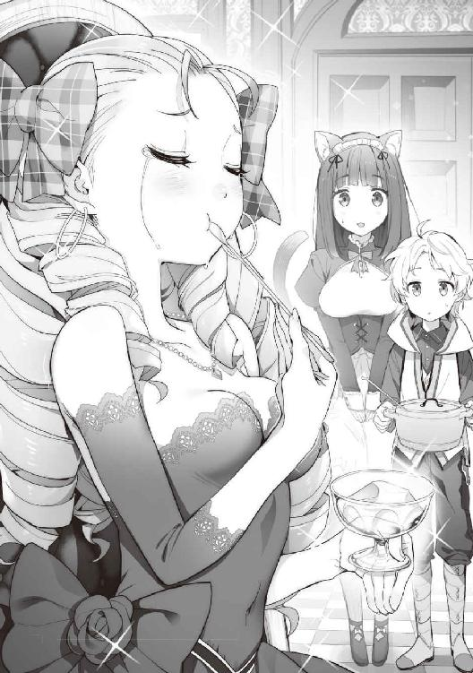
「あの、冷たいうちが美味しいので、食べてもらえますか？」
「え、えぇ。申し訳ないです。こんな馬鹿な娘で......」
「ほんと、情けないわ......」
「姉さま、台無しですよ......」
「せっかくだから、いただくことにしようか」
「えぇ」
「はい」
国王、王妃、王子と思われる青年も食べ始めようとしたときだった。
「おかわりっ」
レアリエールは笑顔でルードに向けて、左手で器を差し出したのだった。
▼
「気に入ったわ。あなた、私の専属料理人にしてあげるわっ」
「いえ、それ、無理ですから」
ルードは苦笑しながらも、あっさりと申し出を断っていた。
「なぜ？ 褒美ならなんでもあげるわよ？ 何が不満なの？ 料理人なのでしょう？」
やはり彼女はわかっていないようだ。
国王と王妃、王子は完全に項垂れてしまっている。
「ちょっと失礼しますね。クロケットお姉さん、鍋お願い」
「はいですにゃ」
ルードはクロケットに鍋を渡す。
「ジェルードさん、奥の間、ちょっと借りますね」
「はい。なんていうか、申し訳ございません」
「いえ。いいんです」
ルードはジェルードが器を取りに行った部屋へ入っていく。
ドアを閉めて姿を変えた。
一瞬ドアから光が漏れたかと思うと、静かにドアが開いた。
そこには、純白のフェンリルがいたのだ。
「えっ？ どこにそんな......」
「あの、僕です。プリンを作ったフェムルードと言います」
「えっ？ えぇえええええっ！」
驚くのも無理はない。
巷で噂になっていた『純白の毛を持つフェンリル』が目の前に現れたのだから。
▼
「うちの馬鹿娘が申し訳ございません」
国王はリーダに向かって膝をつき、拳を握ったまま肘をつくようにして、床に頭をしっかりとつけた、土下座と少し似ている五体投地で謝罪をしている。
王妃と王子は、その場で腰を最大限に折って頭を下げていた。
『いいえ、いいのですよ。わたしは現在王女としてこちらへ来たわけではないのですから。息子も気にしていないようですからね。国王なのですから、そのような情けない姿はいけませんよ？』
「そうですね。誤解があったんでしょうから。僕は別に気にしてません」
クロケットはルードが脱いだ服を両手に持って苦笑している。
王女はというと、座ったまま放心状態のようだ。
「嘘よ。あの子があの純白のフェンリルだったなんて......」
噂は聞いていたらしい。
ただ、ルードを料理人と勘違いしてしまったことがショックだったのだろう。
確かに、今日のルードは普段着のままここへ来てしまった。
ルードも悪いと言えば悪いのだろう。
『ルード、ごめんなさいね。わたしがあなたの服を、しっかりしたものを着せていればよかったのです......』
「ううん。母さんのせいじゃないよ。急に呼ばれるなんてわからないんだから。もちろん、僕もクロケットお姉さんも悪くない。プリンはちゃんと作ってきたんだからね」
『息子もこう言っているのですから、頭を上げていただけますか？』
「はい。本当に申し訳ございませんでした」
ここで、リーダがルードも知らなかったことの説明を始めた。
『わたしたちフェンリルは、故郷でしか人のような姿を維持できないのです。ですが、この子はそれができてしまう、特別な子なのですよ』
「えっ？」
『ごめんなさいね。ルードには教えていなかったわね。聞かれなかったから、教えるのを忘れていたのよ......』
リーダの話はこうだった。
人が住むこちらの地域と違い、ウォルガード王国は大気中の魔力が多い。
そのせいで、こちらでは人の姿を維持できない、そういうことだったのだ。
ルードが人からフェンリルの姿に変わるとき、魔力の消費があったのは、そういう理由だったということ。
本来であれば、人の姿を維持するのに莫大な魔力が必要だったらしい。
「そうでしたか。すると、ご子息は王太子ということになるのでしょうか？」
『いいえ、故郷の外で産んでしまいましたので、継承権があるかどうかわからないのです。わたしの父も母も、この子のことは知らないと思いますので』
確かにルードは養子なのだ。
だがフェンリルでもある。
ルードはそんなことよりも、もっと興味があることがあったのだ。
「母さんの人の姿、見てみたいな」
『普通よ。見たらがっかりするかもしれないわよ』
リーダの目は笑っていた。
どっちにしても、国王にとって、ルードはウォルガード王国の王太子かもしれないという対応を取るしかなかったことも事実。
我に返ったレアリエールを見ると、真っ青な表情をしていた。
それもそのはず。
シーウェールズよりも強大な国の王太子（かもしれないルード）に失礼な対応をしてしまったのだ。
そんなレアリエールを見て、ルードは。
「レアリエール姫様。プリン、おかわりどうですか？ まだ沢山ありますからね」
「......欲しいですわ」
「ジェルードさん、あと三つ、器と匙お願いできますか？」
「はい、今持ってまいります」
「母さんとクロケットお姉さんも食べるよね？」
『えぇ。甘いものはいくらでも入りますからね』
「はいですにゃ」
「国王様、王妃様、王子様もいかがですか？」
ルードは実にマイペースだった。
▼
その日以来、侍女の姿をしたレアリエールが、お忍びでミケーリエルの宿へプリンを食べにくるということが始まったようだ。
ただ、毎日朝一番で並んで食べにくるものだから、有名になってしまっていた。
当のレアリエールは──
「美味しいわ。なんでこうして食べに来なかったのでしょう。こうすれば毎日食べることができていたのに......」
完全な常連さんになっていた。
ルードの姿を見つけると、手を振って笑顔で挨拶してくる。
「ルード様、おはようございます。今日も美味しいプリン。いただきに来ましたよ」
「......大丈夫なんですか？」
「えぇ。この姿なら私だとわからないでしょうからね。完璧な変装でしょう？」
「あははは......」
ルードは心の中で思った。
「（そんな綺麗な指輪や耳飾りをした侍女さんはいませんって......）」
レアリエールはきっちり毎日三人分食べて、笑顔で城へ戻っていく。
ここまで歩いてくるわけではなく、ジェルードが馬車に乗せてくるものだから、周りにはバレバレだったのだ。
『城の王女様が侍女の姿をして、お忍びでプリンを食べにくる』と、町の人は皆温かく見守っているらしい。
『王女様も大好きなミケーリエル亭のフェンリルプリン』と更に噂が広がっていく。
ルードは、ジェルードが心労で倒れてしまわないか心配になっていた。
ジェルードが言うには──
「城から一歩も出ようとしなかった姫様が、外に出てくれているので嬉しいです」
そこまで心配されていたレアリエール姫だった。
第十二話 目の当たりにする衝撃の事実。
ルードはこの春、十四歳になった。
シーウェールズ王家との面識も偶然できてしまったことで、諸外国の情勢を教えてもらえるようになった。
レアリエールの弟で、この国の王太子でもあるアルスレットが、週に一度ほどルードの家まで来て教えてくれているのだ。
居間のテーブルに並び、シーウェールズの情勢。
近隣諸国の情勢などを熱心に教えてくれる。
「実は私、弟が欲しかったんです。あのわがままな姉に毎日のように......」
「心中お察しします......」
こき使われるのだろうな、とルードは思った。
「話が逸れました。それで、エランズリルド王家の例の噂話なのですが」
「はい」
「『双子の兄が玉座についたとき、国が傾く災厄が起きたことが重なった』と聞いています。王座に就けなかった弟が噂を作ったのか、王座に就いた兄が悪政を行ったのかははわかりません。ですが、王家の外にまで噂が流れるほどのことだったと聞いています」
「そうだったんですか」
「はい。今の国王には子がいないそうで、実質の継承権一位が弟になっているようです。国王も身体が弱いらしくて、近いうち新しい国王が就任するのではないかと言われていますね」
「もしかして、その新しい国王になるという弟って、『豚』みたいに醜く太った『無理やり美しいと呼ばせている』人じゃないですよね？」
「......よくご存じですね。エラルド殿下という方です。私も一度お会いしたことがありましたが、確かに言いえて妙ですね......」
「そうなんですか......」
「ただ不穏な話も入ってきています。なんでも、継承権二位だったその方の息子。エラルド殿下の第三夫人、エリスレーゼの子で確か名前が、エルシードという少年ですが。数年前亡くなっていたようですね」
ルードに衝撃が走った。
生みの母の名前がエリスレーゼということを知ったのと同時に、ルードの双子の弟が亡くなっていることを聞いてしまったのだ。
「噂ですが、階段を踏み外したのが原因だということです。治療の甲斐なく、ほぼ即死だったと聞いています。私も一度だけ、エラルド殿下の傍らに大人しく座っていられたの見ただけでしたが。......そういえば、可愛らしい少年だったと記憶しています。あのような親からあれほどまでに違う子が生まれるのかなと、不思議に思った記憶があります。なんとも残念なことだと思いました」
「（あの豚......）」
▼
アルスレットの家庭教師の時間も終わり、昼食をとったあと、ルードはリーダに深刻な表情で話し始めた。
「母さん」
『どうしたの、ルード』
「僕の弟が殺されていたかもしれない」
『......それはどういうことなのかしら？』
ルードはアルスレットから聞いた話をリーダに話す。
ルードを布にくるんで投げ捨てた、あの男の粗暴な性格。
階段から落ちたという不自然な話。
どう考えても何かあったのではないかと。
『憶測でものを言ってはいけませんよ。確かに可能性はないとは言えないけれど。でもね、本当に事故だったかもしれないのよ？』
「どっちにしても、ママとクレアーナが心配なんだ」
『行くのでしょう？ わたしが止めても』
「うん。ごめんね」
『約束してほしいの。無事に帰ってくるって。危険なことがあったら躊躇しないって。もしあなたに何かあったら、わたしきっと、お婆さまと同じことを......』
話に聞いていた通り、ルードになにかあったら、エランズリルドを消してしまうのかもしれない。
リーダにそんなことをさせてはいけない。
もちろん、ルードは勢いに任せて事を運ぶつもりはないのだ。
「大丈夫。母さんにそんなことさせないから」
『ルード、わたしが前に家を処分したときのこと、憶えてるかしら？』
「うん」
『ルードにどのような力があるかはわからないわ。でも、想像するのよ。自分の力をどう使うか。そうすれば、あの子の残してくれた力があなたを助けてくれるわ』
「うん。気を付けるよ。僕が人なんかに負けると思う？」
『大丈夫、よね。きっと』
「大丈夫、様子を見てくるだけだからね」
『わかったわ。気を付けていってらっしゃい』
リーダはルードを抱きしめて額にキスをしてくれた。
▼
「じゃ、クロケットお姉さん。母さんをお願いね」
「ルード坊ちゃま、私も一緒に......」
「駄目。危険かもしれないから。クロケットお姉さんを危ない目に合わせるわけにいかないもの」
「わかりましたにゃ。待ってますにゃ......」
ルードは自分用にあつらえた、小さな鞄に着替えと宝石を数個入れて首から下げた。
『ルード、気を付けて行ってくるのですよ？』
「ルード坊ちゃま、気を付けてくださいにゃ」
「うん。母さん、クロケットお姉さん、いってきます」
ルードは家の裏手から浜の方に出ていく。
そこから森へ入り、一気に加速していった。
二人を探す方法などなかった。
でも怖かったのだ。
今行かないと、二度と会えないような気がしたのだった。
▼
何度となく往復していたこともあって、猫人の集落までは迷うことなく来れるようになっていた。
フェンリルの姿をするようになって、嗅覚も格段に上がっている。
人間の匂いと猫人の匂いは違う。
人間の匂いがする地域まで来ると、ある程度の土地勘があったため、なんとかエランズリルドまで来ることができた。
森の中で姿を人に変え、鞄を背負って町へ出る。
宝石をひとつ換金して準備はできた。
安い宿をとって、一息ついたところで活動を開始しようとしたときだった。
ルードは、人間の姿になっても嗅覚がある程度上がっていることに気づく。
すると、今まで目に見えなかったことにまで気づくようになっていたのだ。
この城下町には人間以外の匂いも混ざっている。
町の中心、おそらく王城の方角からだろう。
よく知っている猫人の匂いではないものが、わずかだが人と違う匂いも感じ取れる。
ルードはクロケットが捕まっていたときのことを思い出した。
きっと、この国のどこかにそういう人たちが捕えられているのだろう。
いつか解放しなければならない。
ルードの目的がまた増えた瞬間だ。
匂いを頼りに状況を調べていると、城下町には人間しかいないことがわかった。
城下町と王城の間には堀があって、その先は数本の橋でしか行き来ができないようになっていた。
何故人間でない匂いを探しているかというと、もしかしたら情報がもらえるかもしれない。
あわよくば、逃がすこともできるかもと思っていたからだった。
ここから先にある貴族の住む地域には、ルードでは進むことができないだろう。
人間の匂いに混ざって漂ってくる他種族の匂いは、間違いなくその方向から感じ取ることができた。
ここは夜になってから忍び込むしかないだろうと、一度宿に帰ることにする。
▼
夜になると、シーウェールズと違って人通りも少なくなっている。
ルードはリーダから気配を消す術を教えてもらっていたため、闇に乗じて忍び込むくらいは難しくない。
貴族街へ向かう馬車を見つけると、ルードは屋根に乗って息を潜めた。
定期的に出入りしているのだろうか。
貴族に関係する馬車なのだろう、衛兵と御者が二つ、三つ話をしただけで抜けたようだ。
ある程度進んだあたりで、ルードは暗い路地に飛び降りた。
足音を立てることなく着地する。
この程度のことができないと、狩りをするとき獲物を逃がしてしまう。
あの森の中の獣はそれなりに頭もよく警戒心が強いため、気配を消す術をリーダが教えたというわけなのだ。
夜だということもあり、人の往来が多いわけではない。
見るからに城下町よりも綺麗な石畳の道が伸びている。
全体に気品を感じる店構えのように見えるが、どことなく嫌な感じもする。
それは人に混ざって漂う他種族、特に犬人の匂いだ。
とにかく、今は情報がほしい。
こんな時間にルードのような少年が、夜の街をうろついているのは目立ってしまう。
継続して気配を消しながら移動することにした。
高そうな雑貨屋、家具店、装飾店などはもう閉まっている。
開いている店は、食事をするところや酒を飲むようなところだろうか。
城下町のような声は聞こえない。
あれからボニーエラに犬人のことを聞いたことがあったが、猫人よりも身体能力は高いらしい。
それなのに、この貴族街より内側には、捕らえられているような匂いが漂ってくる。
それほど匂いが強くないということは、人数的には多くはないのだろうか。
少なくとも、その程度のことしかわからない。
夜ではこれが限界なのだろうか。
人が多くなる朝を迎えるまで、どこかで息を潜めていようかと思ったときだった。
「犬人が逃げたぞ！」
「どこへ行った、探せっ！」
そんな声がしてきたのだ。
声の感じからそれほど遠くはないだろう。
匂いの感じから間違いなく犬人が移動しているようだ。
それもかなり速い。
ルードは匂いを頼りに獲物を追いかけることがよくあった。
人間の匂いに混ざって、犬人の匂いも強く感じる。
近い。
気配を消したまま、匂いの後を追った。
動きが止まった。
近くまで寄ると、気配も感じる。
獣語を意識して、小さな声でその人に話しかけた。
『僕の言葉がわかりますか？ 僕はとある人たちを探して、この区画に潜り込んでいます。僕なら、あなたを外に逃がしてあげられると思います。そのあとで構いません。少しでも話を聞かせてもらえれば助かります』
建物の影にいたその人は、侍女の服を着ている女性のようだった。
その後ろ姿が見える。
頭に見覚えのある犬の耳があった。
ルードの言葉がわかったのか、その女性が口を開いた。
『はい。わかります。まさかこの言葉を使える人がいるとは思いませんでした。外へ出られるのならお願いしたいです。私もある人を探さなくてはならないのです......』
『うん。ならちょっと待っててね』
ルードは服を脱いで鞄に詰める。
暗いから恥ずかしいという感じが薄れているのと同時に、この女性を助けないといけないという使命感から、そんなことを考えている暇がなかったというのもあった。
一瞬だけ光を発したかと思うと、フェンリルの姿になっていた。
『乗ってください。悪いのですが、服を持っててもらえますか？』
『......ふぇ、フェンリル様だったのですねっ。その、す、すみませんでした』
その女性は、お決まりの五体投地をしようとした。
『そんなの後でいいです。さぁ、早く』
『は、はい。すみません。ありがとうございます』
女性はルードの服を持ったまま、彼におずおずと跨った。
『掴まっててください。飛びますよ』
『は、はいっ』
ルードは軽く跳躍すると、屋根の上に登った。
そのまま屋根伝いに走っていく。
ある程度スピードが乗ってくると、衛兵のいた橋ではなく、そのまま堀を飛び越えてしまった。
音もなく走り続けているルードの姿をもし見ることができたとしても、人間の目では追うことはできないだろう。
クロケットですら追うことができなかったほどの速さだったからだ。
ルードは城下町を通り過ぎ、あっという間に森へと入っていった。
そのまま森を走り抜けて、猫人の集落へ向かった。
ここはかがり火が焚かれているため、森の中よりも明るい。
中に入ると、このルードの姿を皆が知っているため、ヘンルーダを呼んできてくれた。
ヘンルーダの家へ入れてもらうと、ヘンルーダにその女性を任せてルードは隣の部屋で人の姿になり、服を着て戻ってきた。
「ルード君、どうしたのです？ 犬人の女性を連れてくるなんて」
「すみません。その人を連れてエランズリルドの貴族街から逃げてきたんです」
お茶を飲ませてもらい、やっと、その女性も落ち着いたのだろう。
ルードに笑顔を向けてくれたのだった。
「あれ？ その優しい目、どこかで見覚えが......。もしかして、クレアーナ？ いやそれにしたって、もう十四年だよ、ありえないって、こんなに若いなんて......」
「......なぜ私の名前を？」
「やっぱりそうだったんだ。やっと会えたよ」
ルードはクレアーナに抱き着いた。
「憶えてない？ 『ぶひぃ』と鳴いて謝るのですっ！ って」
「あ......、もしかして、坊ちゃま、ですか？」
「うん。やっと会えた。これでママの居場所も──」
「申し訳ございません。奥様、いえ、エリスレーゼ様は、半年ほど前に、お亡くなりになりました......」
しかし、クレアーナは声を絞り出すように、期待を裏切る言葉しか返せない。
ルードを強く抱きしめ、震えていたのだ。
「......そんな。嘘でしょう？」
第十三話 優しい嘘、生きていたママ。
やっと、母とエルシードの居場所がわかると思ったのだが、クレアーナの言葉ですべてが終わってしまった。
ルードの目からは、とめどなく涙が流れてしまっている。
押し殺すように嗚咽を漏らしていた。
クレアーナは少し前に泣き散らしたのだろう。
震えるルードを抱きしめて、背中をぽんぽんと優しく叩き続けていた。
ルードは泣き止んでクレアーナの話を聞くことにする。
クレアーナはルードを抱きしめたまま話を続ける。
「──もう五年前になります。エルシード様が、あの醜い豚、エラルドに殴られてしまったのです」
クレアーナも激しい憤りを感じていたのだろう。
エルラドを表現する言葉からもわかってしまう。
「......うん」
ヘンルーダは二人を心配そうに見つめていた。
「エルシード様がつい言ってしまった、『パパは太ってるのに、なんで美しいって言われるの？』。その言葉が原因でした。激高したエラルドは手加減せずにエルシード様を殴ったのです。その拍子でエルシード様は階段から落ちてしまいました。慌てて駆け寄ったのですが、首が曲がってはいけない方向に......。即死でした。エルシード様は事故死ということになったようす。私に力があれば、その場で敵を討つこともできたでしょう。力がない自分を呪いました......」
「う、ん」
「......その後すぐでした。エリスレーゼ様は心に傷を負ったのでしょう。倒れられてしまいました」
「............」
ルードの身体の震えが大きくなっていたのを、クレアーナは感じていた。
「......もう耐えられません。いくらエリスレーゼ様の言いつけだとしても、私には坊ちゃまに嘘は申せません」
「えっ？」
驚きとともに、ルードの身体の震えも止まっていた。
クレアーナはルードの両肩を手でしっかりと掴んで、目を見てこう言った。
「ごめんなさい、坊ちゃま。お母様は、エリスレーゼ様は、本当は生きていらっしゃるのです」
「ほ、ほんとなの？」
「ですが、もう長くはないかもしれません。......お医者様もそう言われていました。そのため、もし坊ちゃまが見つかっても、病でやせ細ってしまった姿を見られたくない、心配させたくないのでしょう。私に嘘をつけと、死んでしまったといいなさいと......」
悲しみに染まっていたルードの目に、希望の光が灯ったような感じに見える。
ただ、事態は急を有するのかもしれない。
「いいから連れて行って。僕なら、なんとかなるかもしれない。ヘンルーダさん、ここに連れてきていいよね？」
「えぇ、構いません」
ルードは立ち上がって、クレアーナの手を引っ張る。
「ほら、時間が惜しいんだ。いくよ、クレアーナ」
「ですが」
「いいからっ」
ルードの顔に焦りの色が見える。
ただ、希望に満ちた目をしていた。
猫人の集落を出て、クレアーナを背に乗せたまま暗闇を走って抜ける。
城下が見えたあたりで、ルードは足を止めた。
「坊ちゃま、エルシード様が亡くなったときのことは本当のことなのです。そのせいもあって、エリスレーゼ様は、本来坊ちゃまが隔離されていた、あの部屋で病と闘っておられるのです」
「そっか。あの部屋ね」
「坊ちゃま、あの豚はエリスレーゼ様を他の人の目に触れさせたくないようです。毎晩のように、私はエリスレーゼ様が眠られた後に、坊ちゃまらしき少年を探しに町に出ていたというわけなのです」
「それであそこにいて、見つかってしまったということなんだね？」
「はい」
「あのさ、母さんが身に着けていたもの。何かある？」
「はい。ここに、エリスレーゼ様の汗を拭った布が」
「それ、僕の鼻先に持ってきて」
「はい。これでよろしいでしょうか？」
「うん。これがママの匂いなんだね。うん、わかった。これですぐに探せる」
走り出そうとしたルードをクレアーナは声で制する。
「坊ちゃま。城の守りは夜でも容易いものではありません」
「クレアーナ。僕はフェンリルだよ？ 母さん、フェルリーダの息子のフェムルード。フェンリルなんだ」
「......そうでした。私が心配することではなかったのですね」
フェルリーダという名前に、クレアーナは心当たりがあったようだ。
それのおかげで、ルードは何をやっても、きっとどうにかできてしまうだろう、そう思えてきたのだった。
「うん。ちょっと荒っぽくいくから。掴まっててね。ママを見つけたら、クレアーナが抱いて僕に乗ってくれたら、それでいいから」
「はい。わかりました、坊ちゃま」
▼
揺れることなどお構いなし。
かろうじてクレアーナがしがみついていられるような、そんな無茶な走り方だった。
ルードは、なるべく手薄な人気の少ない堀へ近づいていく。
スピードを緩めないまま、堀を一気に飛び越した。
足音を立てないように走り続けていることから、まず人には気づかれないだろう。
エランズリルドの王城が見えてくる。
かすかに辿れるくらいの弱い母の香を頼りに、屋根の上を跳ねるようにルードは進む。
城の本体というべき、一番綺麗に作られている場所ではなく、隣にひっそりと佇む、同じ色をした屋敷が目に入ってきた。
バルコニーがせり出した裏手に周り、ルードは足を止めた。
部屋が無数にあり、どこからエリスレーゼの匂いがするのか判断できない。
ルードは誰かに感づかれないよう、獣語を使ってクレアーナに質問することにした。
『クレアーナ。ここから匂いがするんだけど、どの部屋？』
『はい。五階の、一番右の角です。ですが、あそこまで行くのに誰かに──』
『忘れたの？ 今の僕は』
『そうでしたね』
ルードは建物近くまで足音を立てずに近寄ると、ひと蹴りで飛び上がり、目的のバルコニーへ着地してしまった。
さすがのクレアーナも、目を丸くして驚いていた。
ルードは、はやる気持ちを抑えて、音をなるべく立てないように部屋へ続く扉を開けた。
暗くて狭い部屋だった。
短い間だったが、きっとここでルードは育ったのだろう。
中央にあるベッドには、女性が眠っているようだ。
近寄って、その女性の顔をそっと見た。
かなりやせ細っていたが、懐かしい面影がある。
ルードは声を立てずに、涙を流しながらエリスレーゼを見ていた。
胸が上下しているところを見ると、まだかろうじて無事なのかもしれない。
母子の再開を涙しながら、しばしの間クレアーナは見守っていた。
ルードは感慨に浸っている暇はないと思い、クレアーナに目配せをする。
先にベランダに出て、クレアーナを待った。
クレアーナは軽々とエリスレーゼを抱きあげる。
そのまま音を立てないように注意しながら、ルードの傍へやってきた。
『乗って。急ぐよ』
『はい。エリスレーゼ様、坊ちゃまですよ......』
そう一言だけ獣語で言うと、クレアーナはエリスレーゼをしっかりと抱きなおし、ルードの背中に跨った。
背中の感触を確かめてから、ルードはベランダの床を蹴った。
その跳躍は、城の敷地を大きく飛び越えるようなものだ。
ルードの中に物凄い力が漲ってくる。
兄のフェムルードが助けてくれているのかもしれない。
いつもはできないような、そんな力に溢れた跳躍だったのだ。
多少の足場の悪さをものともせず、ルードは建物の屋根を蹴って猫人の集落を目指してひた走る。
集落の中央では、ヘンルーダを始めとしたルードに救われた人々が待っていてくれたのだ。
ヘンルーダが静かに口を開いた。
「ルード君。部屋を用意したわ。そこにお母様を」
「ありがとうございます。助かります。クレアーナ」
「はい。かしこまりました」
すぐにひとつの部屋へ案内される。
そこはとても清潔な布がベッドに敷かれた部屋だった。
クレアーナは、そこにエリスレーゼを起さないように優しく寝かせる。
「クレアーナ。もしかしたら、僕、倒れるかもしれないけど、心配しないでね」
「何をなさるつもりですか？」
「ん。見てたらきっとわかるよ。でもなるべく僕から離れててくれる？ みんなも頼むよ。生まれて初めて全力で魔法を行使するから、何があるかわからないんだ」
隣の部屋で人の姿に戻ったルードは、エリスレーゼの寝ているベッドに座った。
猫人の人々は窓やドアの向こうから、心配そうにルードを見ていた
クレアーナはルードの傍をはなれようとしなかった。
目を瞑ってひとつ深呼吸をする。
「じゃ、いいね？」
「はい」
ルードはヘンルーダのときのように、エリスレーゼの頭を両手で挟むと、ゆっくりとした口調で詠唱を開始する。
『癒せ。万物に宿る白き癒しの力よ。我の願いを顕現せよ。我の命の源を......、すべて残らず食らい尽くせっ！』
ヘンルーダに使った治癒の魔法と違う詠唱だった。
あのときとは違う、物騒な言葉も混ざっていた。
詠唱が終わったとき、ルードの全身から純白の光があふれ出てくる。
その光はルードの腕を通り、手首に達し、手のひらからエリスレーゼの頭を包んでいく。
エリスレーゼの頭から顔、首、両手、胴、足までゆっくりと光が包んでいった。
ルードの動向を注視していたクレアーナは、慌ててルードを抱きかかえた。
ルードは力なく後ろへ崩れ落ちてしまったのだ。
「坊ちゃま。大丈夫ですか？ 大丈夫ではないですよね？」
「う、うん。ちょっと、つかれちゃった......」
顔から血の気がなくなってしまったような、体中の力が抜けてだらりとしてしまったような。
間違いなく魔力が枯渇しているのだろう。
ルードはそのまま、クレアーナの胸に力なく倒れ込んでしまった。
▼
ルードは夢を見ていた。
優しいママ。
優しいクレアーナ。
毎日とりとめのない会話だけの日常。
ただ、それだけでも幸せだった。
それの幸せが醜い豚によって壊されてしまった。
布に包まれて投げ捨てられた。
捨て台詞を残して、醜い豚は遠ざかっていく。
何もできない自分が嫌だった。
そんな、何度も見た夢だったと思う。
▼
いい匂いだ。
優しく額にかかる髪を、指で撫でられているように感じる。
夢に見る優しい声が聞こえてくる。
「この子、本当に生きてた頃のエルシードに似ているわね。双子のお兄ちゃんだからかしら」
「そうですね」
「でも、大きくなったわ。こんなに可愛くて、あの人に似なくて本当によかった......」
「えぇ。あの豚とは似ても似つきません。エルシード様も可愛らしかったですからね......」
耳元でそんな会話が聞こえてきた。
ルードは、全身にだるさがまだ残っていたが、構わず目を力いっぱい開けてみた。
そこには、夢に見た優しい目がルードを見ていたのだ。
「あら。起きたみたいね。クレアーナ、この子、今、名前は何て言うの？」
「はい。フェムルードというお名前です」
「フェムルード......、おはよう。久しぶりね、元気にしてたかしら？」
「......ママ？」
「えぇ。そうよ」
ルードは目に涙を溜めたまま、力を振り絞って身体を反転させる。
ルードが体をひねったおかげで、涙の滴が宙を舞った。
ぱたぱたとシーツの上に落ちたと同時に、エリスレーゼに抱き着いて泣き始めたのだった。
「ママ、ただいま。遅くなってごめんなさい......」
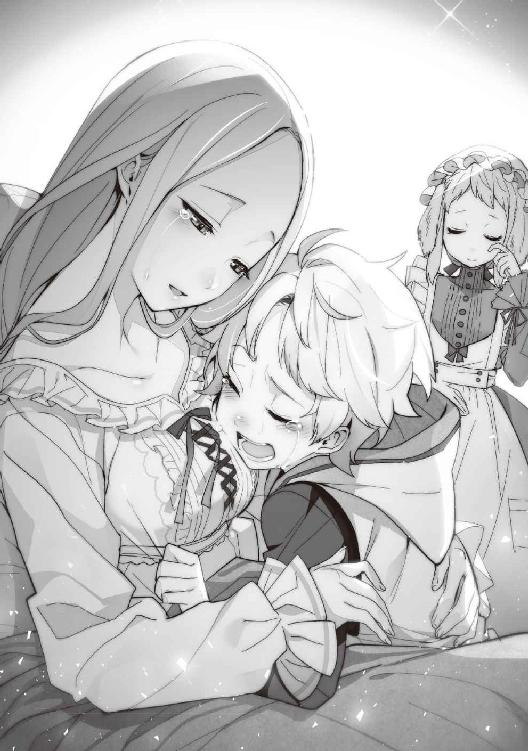
「いいの。私もクレアーナに嘘を言わせてしまって、ごめんなさいね。おかえりなさい、でも、ここにいたら何をされるか......」
「大丈夫だよ。あの城から追ってこれる場所じゃないから安心して。ここはね、猫人の集落なんだ。安心していいから」
「そうだったの。あなたを育ててくれた人たちかしら？」
「ううん。僕のもうひとりのお母さんはね。フェンリルなんだ」
「まぁ。信じられないけれど、多分本当なのね。この白い髪。苦労したのね......」
「坊ちゃま、エリスレーゼ様はまだ回復されて間もないのです。それくらいにして、寝かせてあげましょう」
ドアをノックする音がした。
クレアーナがドアを開けると、そこにはヘンルーダがお膳を抱えて立っていた。
「失礼しますね。ルード君、起きたみたいね。これ、お母さまに食べていただこうと思って作ったのだけれど。多めのお湯を緩くして、鳥の肉を一緒に煮込んだので、滋養がつくと思うわ」
「はい。ありがとうございます。ヘンルーダさん。クレアーナ、僕、動けないからお願いね」
ルードは、のそのそと身体を引きずるようにベッドの横へ寝転がってしまった。
「あら。美味しいわ。初めて食べたわ。麦じゃないみたいね」
「えぇ。これは、ルード君が私たちの村を救ってくれたときに見つけた、米という食べ物なのです」
「そうだったね。そういえば、フェムルードは赤ちゃんのときから頭がすごくよかったわよね、クレアーナ」
「えぇ、最初は本当にばけも......。いえ、天才かと思いましたね」
「クレアーナ。今、僕のこと『化け物』って言おうとしなかった？」
ルードは寝返りを打って、すごく嫌そうな顔でそう呟いた。
「いえ、私がそんなこと、言うとお思いですか？ 気のせいですよ」
第十四話 回復していくママとその実力。
エリスレーゼは徐々に体力を回復していった。
三日もすると、家の中ならルードやクレアーナの補助で歩けるようになっていたのだ。
もう少し回復したら、一度シーウェールズへ連れて行くつもりでいる。
この五年間で一番つらかったのは、個室（王室のトイレのこと）にひとりで行けなかったことらしい。
でも今は、ドアの前で待っていてもらえば、ひとりで用が足せる。
その辺はとても喜んでいた。
「ママ。ママはこれからどうする？」
「私？ 私は帰る場所なんてありませんよ。元々私は、あの家に嫁ぐつもりもなかったのです。ですが、私の家はあの家に多大な恩があったそうです。それで私は仕方なく......」
家同士、それも相手が王族ならば、断わることはできなかったのだろう。
「でもね、覚悟をして行ってみたら、なに？ 第三婦人ってひどいと思わない？ 私だってね、結婚くらい夢を見ていたのよ」
現地から遠く離れたから言えるのだろう。
エリスレーゼは、かなりご立腹だった。
「目を瞑って、耳を塞いで耐えたわ。実家のためを思ってね。でもね、耐えられないことがひとつだけあったの」
「それは何だったの？」
「あの男を、『美しいですわ』とか『お綺麗ですね』とか言わなければいけないことよ」
ルードとクレアーナは意味がわかってしまうだけに、ため息のような『そうですね』という気のない返事しかできなかった。
クレアーナも同じ経験をしたことがあったらしい。
ルードはそのまま罵ってしまったわけだから、否定できる立場ではないのだ。
「でもね、あなたたちが生まれてくれてよかったわ。あなたたちの顔を見ている時間が唯一の癒しだったのよ。あなたたちが生まれた後は、あの男もわたしに構わなくなったから、少しは気が安らいだわ」
まだまだ恨み節が続くかと思われたが、エリスレーゼの表情は暗くなっていった。
「フェムルード、エルシードのことはごめんなさい。一度も弟に会わせることができなかったわね。私にはどうにもならなかったの。ごめんなさい」
「ママは悪くないよ。あの豚が......。いつか僕が──」
「フェムルード、いけません。あなたまであんなことになってしまったら、私はどうしたらいいのか......」
「あ、そうか。クレアーナ、僕のことママに話してないんだね？」
「えぇ。聞かれませんでしたから」
ルードに、自分のことを犬人だということを言わなかったのと同様の答えが返ってくる。
クレアーナは基本、自分のことはどうでもいいと思っているのだろう。
ルードは重たく感じる身体を動かして、隣の部屋までなんとか歩いていった。
ドアを閉めて着ている服を脱ぐ。
魔力が回復しているかわからなかったが、フェンリルの姿になってみた。
ルードが入った部屋のドアの隙間から光が漏れてくる。
ドアが開くと、そこには少し大きな純白の狼が、のっそのっそと重たい足取りでエリスレーゼに近づいてくる。
目がとても優しく感じたせいか、エリスレーゼは怖いとは思わなかった。
「あら？ もしかして、フェムルードが飼っている子かしら？」
「──僕だよ。ママ」
「えっ？」
さすがの天然っぽいエリスレーゼでも固まってしまった。
横にいるクレアーナは知っていたので、一生懸命笑いをこらえているようだった。
▼
困ったことにルードは人の姿に戻れるほど、魔力を回復していないのだった。
ルードが動けないことをいいことに、エリスレーゼはフェンリルを堪能していた。
頭を撫でたり顎の下をくすぐってみたりして、コロコロと笑っていたのだ。
「この耳、可愛いわ。クレアーナったら嫌がって触らせてくれないんですもの。このふさふさした毛並みも綺麗ね、柔らかくて気持ちがいいわ」
「いえ、普通。くすぐったくて嫌ですってば......」
クレアーナは、自分も同じようにされているという錯覚をおこしてしまったのかもしれない。
嫌そうな表情をして、心の中でルードにごめんなさいをしているのだ。
この世界に、動物と触れ合うことで心の平静を保つようなアニマルセラピーがあるはずはない。
ただ、小さいころからエリスレーゼは動物が好きだったらしいのだ。
クレアーナを傍に置きたかったのも、それがなかったわけではないという新事実も発覚してしまった。
エリスレーゼには、ルードがフェンリルになったという事実を口にする前に、この姿がとても気に入ったみたいなのだ。
「あのね、ママ」
「えっ？ どうしたの？」
「僕ね。フェンリルの母さんに育てられたんだよ」
これまでのことを詳しく二人に話し始める。
クレアーナは目を閉じて、黙ってルードの話を聞いていた。
エリスレーゼの反応は違っていた。
緑色の毛をした、綺麗なルードの母に興味を持ってしまったのだ。
「会ってみたいわ。フェルリーダ様に」
そう言いながら、エリスレーゼは目をキラキラとさせている。
きっと、リーダにもじゃれつかせてもらいたいのだろうか。
「そう言ってくれると助かるよ。僕と一緒にシーウェールズへ行こうね」
「えぇ」
そうして、ルードが体力を回復したらシーウェールズへ連れていくことになったのだった。
そこからエリスリーゼの回復は著しかった。
身体の調子がいいときは、猫人の子供たちと遊んでいたり、ルードにフェンリル化させてモフモフしていたりしていた。
食欲も旺盛になってきて、なんでも食べられるようになっていた。
クレアーナの話では、あの豚の前でなければ元々は明るい性格だった。
第一、第二夫人ともそりが合わなかったらしく、話し相手はクレアーナくらいしかいなかったらしい。
エリスレーゼだけ、商家の生まれで奔放に育ったせいか、王室での生活は息苦しかったのだそうだ。
いつか、あの豚の息がかからないようにして、エリスレーゼを実家に帰られせてあげたいと、ルードは思っていた。
それから数日後、やせ細っていたエリスレーゼも、顔の血色が良くなり、少しふっくらとしてきた。
猫人の子供たちと遊んでいても、疲れて倒れ込んでしまうような心配もなくなってきた。
そろそろ、お世話になった猫人の集落から出発する日が近づいてきたのであった。
▼
エリスレーゼは、その元から明るい性格と聡明なものの考え方や、ルードも気づかないような発想などを持ち合わせているようだった。
商家の生まれというのも頷けると、ルードは思った。
子供たちの母親とも仲良くなり、今何が困っているかなどを話している最中に感じ取ってしまったようだ。
今度、ルードはこっちにくるときに持ってくるようにと、エリスレーゼから言われてしまうくらいの勘の良さ。
ルードは、自分の母ながら尊敬してしまうのだった。
「また来てくださいね」
「えぇ、身体がよくなったら必ずね」
ヘンルーダとも仲が良くなったようだ。
同じ子を持つ母親として、話も合ったのだろう。
子供たちに『いやいや』されながら、見送られて集落を出ていくことになった。
「ルード、あの人たちは大事にしなければ駄目よ？」
「うん。そのつもりだよ」
「それにしてもエランズリルドは駄目ね。人間がどれだけ偉いと思ってるんだか。他種族に目を向けないと、いずれ国はおかしくなってしまうわ。これから向かうシーウェールズは、そんなことはないのでしょうけどね」
「うん。とてもいいところだよ」
「楽しみね。きっと、クレアーナも伸び伸びと生活できるのでしょうね」
「私はエリスレーゼ様と坊ちゃまがいれば、どこでも構いません」
「ほら、こんなに可愛いこというのに、耳としっぽは、なかなか触らせてくれないのよ......」
そう言って拗ねる自分の母に、驚きを隠せないルードだった。
▼
シーウェールズ近くの森を抜ける前に、ルードは人の姿に戻った。
「ママ、クレアーナ。苦しくなかった？」
「速かったわ。とても楽しかったわよ」
「いえ。大丈夫です。......坊ちゃま」
「どうかしたの？」
「いえ、エリスレーゼ様が私の耳から手を離してくれないのです。なんとかしてください......」
「我慢だよ。クレアーナ......」
ルードは正規の手続きを踏んで、エリスレーゼとクレアーナをシーウェールズへ連れていくつもりだった。
シーウェールズの城下町への入り口。
衛士が立っているその場所へ行くと、馴染みの衛士が迎えてくれる。
「いらっしゃいませ。海とお湯の国、シーウェールズへようこ......。ルード君ではないですか。お帰りなさいませ。おや？ そちらのお二人は見ない方ですね」
「はい。遠くに住んでいた僕の家族です。迎えに行ってきたんですよ」
「そうでしたか。ルード君のご家族であれば、手続きは必要ありません。どうぞ、お入りください。私はウェルダートと申します。よろしくお願いいたします」
「エリスレーゼと申します。ルードの母です」
「クレアーナと申します。坊ちゃまの侍女でございます」
「ご丁寧にありがとうございます。では、どうぞ......、あれ？ 母親って......、あれっ？」
エリスレーゼの『母』の一言で、ウェルダートは軽く混乱していた。
とりあえず置いておいて、さっさと町中へ二人を案内することにした。
門を抜けると、そこは温泉のある観光地。
エランズリルドの町以上の賑わいを見せる、これこそ城下町という感じだろう。
ルードから聞いていた通り、二人の目には様々な種族の人々が見えている。
「ここは素晴らしい国ですね。坊ちゃまから聞いていた通り、人間と私のような種族が手を取り合って暮らしているようです。このような国もあったのですね......」
「えぇ、あそこと違って、穏やかでいい国ですね」
この町では、ルードは有名人だ。
誰もが知る『フェンリルプリン』の考案者であり、料理人でもある。
まだそれを知らないエリスレーゼとクレアーナ。
ルードの姿に気づいたものは、笑顔で声をかけてくれている。
幽閉されるはずのあの赤子が、この国では人々に愛されていた。
二人にとって嬉しくないはずがない。
「エリスレーゼ様、坊ちゃまはこんなにも人々に愛される子に育っていました。嬉しいですね」
「そうね。本当によかったわ」
いつもの道を家に向かって歩いていると、侍女の服装をした綺麗な女性にルードは抱き着かれてしまう。
「ルード様、お帰りなさいませ。プリン切れです。在庫がないのです。このままでは私、死んでしまいます」
「はいはい。明日は絶対に用意しておきますからね」
「絶対ですわよ？ 朝一番で並びますからね？」
そう言うと、ルードのおでこにキスをして走り去ってしまう。
「坊ちゃま、今の女性は？」
「ルードがお付き合いされている女性かしら？」
「あははは。この国のお姫様、だよ」
「「えっ？」」
歩きながら、この国の王族との出会いを話した。
「──そのようなことがあったのですね。坊ちゃまらしいというか......」
「そうね。この子を普通の子と比べてはいけない気がしてきたわ......」
「なんでだろうね。僕もわけがわかんない......」
やっとルードの家が見えてきた。
開け放たれている玄関を抜けると、居間に大きな緑色の毛のフェンリルがいて、こちらを見て優しい目をしていた。
横には猫人の女の子が座っている。
きっとルードの匂いで帰ってきたのがわかったのだろう。
『お帰りなさい、ルード』
「お帰りにゃさいませ。ルード坊ちゃま」
ルードはリーダに駆け寄り、抱き着いて嗚咽を漏らす。
もう涙腺は決壊していた。
「......母さん、間に合ったよ。二人に会えたんだよ」
『そうだったの......。良かったわね......』
「うん。でもね、僕の弟は死んでしまったんだ。悔しかったよ......」
『よく我慢したわね、ルード......』
きっと『我慢した』の言葉には、『復讐心に駆られなかった』という意味が込められているのかもしれない。
リーダは、エリスレーゼとクレアーナに優し気な目を向けた。
『その女性がママね？ それと犬人の女性がクレアーナさん？』
「うん」
『どうぞ、こちらへおいでなさいな』
エリスレーゼはリーダに深々と頭を下げる。
「エリスレーゼと申します。ルードをここまで育てていただき、このような素晴らしい名前を与えていただき、感謝以外の言葉が見つかりません」
クレアーナもエリスレーゼに倣って深く礼をする。
「クレアーナと申します。エリスレーゼ様の侍女をさせていただいておりました。こちらでも、ぜひお仕えさせていただきたく思っております」
二人は挨拶を終えると、リーダの前に座った。
第十五話 無謀？ ママ、母さんをモフるつもりか？
リーダは手で二人の肩を順に軽くぽんぽんと撫でる。
『わたしはルードの母、フェルリーダ・ウォルガードです。お母様とあなたのことは聞いていました。こんないい子を産んでいただいてありがとうございます。悲しみに暮れていたわたしも、この子にどれだけ救われたか。これからもよろしくおねがいします。エリスレーゼさん、クレアーナさん』
エリスレーゼはリーダのことを、フェンリルの女性であり、ウォルガードという名ですべてを察したのだろう。
商家の出だけあって、へたな王族よりも知識は持っていたのであった。
リーダの顔を見ながら目だけを伏せて、エリスレーゼとクレアーナはその言葉に応える。
「大国のお方でしたか。これからもよろしくお願いしたします。エリスとお呼びください」
「はい。この命尽きるまで、お仕えさせていただきます」
『エリスさん、あなたも同じ母なのですから、わたしをリーダと呼んでいただいてもかまいませんよ』
「では、リーダさん。お願いがあるのですが」
『なんでしょう？』
「その、触ってもよろしいでしょうか？ ふさふさ、大好きなんです......」
呆れたような、あきらめたような目をして苦笑しているリーダ。
『えぇ。構いませんよ』
「ありがとうございます。......あぁ、気持ちいいわ。ルードとそっくり......」
「エリスレーゼ様、お身体の具合、まだ戻っていらっしゃらないのですから、大人しくされた方がよろしいかと」
クロケットがエリスレーゼの傍に座りなおす。
「クロケットと申しますにゃ。よろしくお願いしますにゃ」
「はい。クロケット様。よろしくお願いいたします」
「いえ、私はその......」
クロケットはエリスレーゼとクレアーナの耳元近くでごにょごにょと囁き、自分の身の上を話した。
「ルード坊ちゃまが成人するまで内緒ですにゃ。お願いしますにゃ」
「そうなのね。それはめでたいことだわ。はいはい。内緒にするわね」
「えっ？ なんのこと？」
「女だけの秘密よ。ね、クロケットさん、リーダさん」
『そうね』
「そうですにゃ」
その後、クロケットも耳としっぽをいじられまくって、涙目になるとは思っていなかっただろう。
クレアーナは少しだけ、クロケットのことを不憫に思ってしまった。
▼
ルードはエリスレーゼとクレアーナを交え、これまであったことをすべてリーダへ伝え終えた。
「母さん」
『何かしら？』
「僕、母さんのお婆さんに会ってみたい。僕がやらなければならないことがわかったんだ。そのためには、フェンリルのすべてを知らないと駄目だと思うから」
『そうね。わたしにも知らないことはあるの。きっとお婆さまなら......。いいわ、来月連れて行ってあげる』
「ありがとう、母さん」
『クロケットちゃんとクレアーナさんは連れていけないの。もちろん、エリスさんも難しいわね。お留守番お願いできるかしら？』
「えぇ、ゆっくりさせていただきますね」
「はい、お待ちします」
「はいですにゃ」
『ルードの立ち位置が不安定なまま、皆を連れて行くのは難しいの。最悪の場合、争い事になるかもしれないのです』
クロケットは元の家のあった場所で、『あれ』を見ているから知っている。
しっぽがぶわっと膨れ上がると同時にぴんと伸びて、しなしなと垂れ下がっていった。
「私では邪魔ににゃってしまいますにゃ。わかりましたにゃ」
「私は坊ちゃまにお仕えできても、お守りすることはできません。お言葉に従います」
『みんないい子ね。エリスさん、何があってもルードはわたしが守るわ。ありがとう。ふたりもエリスさんをお願いね』
同じ母親とはいえ、まだ三十歳手前のエリスレーゼ。
リーダから見たら、三人はまだまだ若いのだろう。
猫人も犬人も、人間より寿命が長い。
それでもリーダは四百年生きているのだ。
リーダですらウォルガードへ帰れば、まだ小娘扱いされてしまうかもしれない。
それほどフェンリルの寿命も長いのだろう。
なにせ、リーダの祖母が起こしたとされている事件は、この国でも千年は昔の伝説、古い文献やおとぎ話として伝わっているのだから。
▼
それからひと月の間、ルードはあれこれ忙しくこなしていった。
『フェンリルプリン』の作り置きの方法の試行錯誤。
夏場ということもあって、新しい氷菓子も作り始める。
『フェンリルブランド』の第二弾。
『フェンリルアイス』の誕生だった。
材料はプリンとまったく同じ。
作るときに加熱するか、冷却するかの違いもあるのだが、製法もちょっとだけ違う。
卵白と卵黄に分けて、卵白だけを魔法でメレンゲ状態に仕上げる。
卵黄と砂糖を魔法で混ぜ合わせ、最後にメレンゲと合わせてから冷却する。
たったこれだけなのだが、魔法で作るという手順だけで空気を混ぜやすくなるのだ。
ふわっとした舌触りの、この町では目新しい氷菓子ができあがった。
『溶けるわ......。冷たくて甘くて、ふわふわ。プリンとは違った美味しさね......』
「えぇ。あの国では食べられなかった贅沢なお菓子ですね」
「冷たいですにゃ、あまあまですにゃ......」
「美味しいです。プリンも生まれて初めていただきましたが、これも凄いですね」
器をもっと見栄えがよくて、安くて丈夫なものをという、エリスレーゼからの提案などもあり、『フェンリルプリン』と『フェンリルアイス』は見た目も立派になっている。
ミケーリエル亭で発売開始の翌日、レアリエールがおなかを壊して寝込んでしまったと、ジェールドとアルスレットが苦笑いしながら話していた。
きっと際限なく食べて冷やしすぎたのだろう。
▼
週に一度のアルスレットの家庭教師の日。
なぜか今日は、レアリエールがアルスレットについてきてしまった。
今日はもう授業にならないということで、談笑だけになってしまった。
「ルード様。教えていただいた製法で王室の料理人に作らせたのです。それなのに、同じ味、同じ舌ざわりが出ないのです」
「でしょうね。僕は魔法で作ってますから」
「ずるいですわ。でも、次の朝までは我慢できるようになったのですよ」
『偉いでしょう？』という感じに、レアリエールは胸を張ってそう答える。
アルスレットも、傍に仕えているジェルードも苦笑いしてた。
聞くと、アルスレットは十八歳。
レアリエールは二十歳らしい。
アルスレットはこの国を継ぐことになっている。
適齢期であるレアリエールは、本来であれば近隣諸国へ嫁ぐことになるそうだが。
本人はまったくそのつもりはないらしい。
「『フェンリルプリン』の食べられない国へなんて、行きたくありませんわ」
そうばっさり言い切っているらしい。
元々引きこもりがちな彼女が外にでるようになっただけでも、王室では『事件』だったらしい。
国王も王妃も喜んでいるとのことなのだ。
ルードは料理人として、菓子職人として有名になりつつあった。
シーウェールズへ旅行にきていた近隣諸国の人々が自国へ伝えたことで、さらに旅行客も増えてきている。
ルードは、国王と王妃からも感謝されていたのだ。
あくまでも家族に喜んでもらうための延長だったのだが、真面目に新しいものへ挑戦していくつもりでもあったのだ。
実はエリスレーゼは、この国の温泉のおかげもあってか、随分体力が回復したようだ。
ルードがつくるお菓子や、この国で食べられる海の幸、猫人の集落から手に入る米の滋養もあってか、食欲も旺盛になってきていた。
それでも五年ベッドで寝たきりだったこともあって、筋力の低下までは解消されてはいない。
クレアーナの支えがないと転んでしまうこともあったが、町を散歩するくらいまでにはなっていた。
ルードたちの家の地下に大きな氷室を作れたおかげで、『フェンリルアイス』と『フェンリルプリン』の作り置きができるようになっていた。
このあたりの保存方法や保管場所の形状、氷室の知識にも詳しかったエリスレーゼの助けもあって、立派なものができていた。
毎日必要数をクレアーナとクロケットがミケーリエル亭に届けることになっている。
そのうち五個ずつがレアリエールの分だとは、ルードは知らない。
ミケーリエル亭も毎日満室になっているおかげで、菓子の売り上げは全てルードの収入になっていた。
ミケーリエルたちの生活も前より向上して、親子に感謝されている。
数か月先の予約まで埋まっているそうだ。
エリスレーゼはミケーリエルとも仲が良くなったそうだ。
双子のミケーラとミケルもお気に入りなんだそうだ。
きっと『モフモフの魅力』に憑りつかれてしまったのだろう。
▼
そうこうしている間に、ひと月が経っていた。
リーダとルードがウォルガードへ旅立つ日だ。
ひと月は帰ってこれないかもしれないと二人には伝えてある。
長年ルードと離れ離れだった二人は、ひと月ほどは我慢できるのだそうだ。
寂しそうにしていたクロケットのことは、エリスリーゼが任せるように言っていた。
あまりに構いすぎて、痩せてしまわないか心配だったりもするのだが。
「いってらっしゃい、ルード、リーダさん」
「いってらっしゃいませですにゃ」
「いってらっしゃいませ」
三人はいつもと同じように送り出してくれたのである。
一歩下がって、エリスリーゼの後ろで見送ってくれるクレアーナ。
エリスリーゼに肩を抱かれたクロケット。
きっとこの先どれだけいじられるか、逃げることができるのか。
好対照な二人だった。
▼
シーウェールズ王国よりもさらに北にあるウォルガード王国。
どんなに急いでも、二日はかかるとリーダは話していた。
リーダとルードの足でそれだけかかるということは、かなりの距離なのだろう。
ウォルガード王国までは、途中に人間の国は存在しない。
北にある深い森を抜けて行くため、人間では通り抜けることができないのだ。
人間ではない種族の集落はあるのだが、交易が結ばれている種族ではないのと、リーダを怖がってしまうかもしれないということもあり、寄り道せずに真っすぐ向かうことにしたのだ。
途中、さすがに疲れてしまったルードを背負って、リーダは走り続けていた。
「母さん、結構遠いとこまで来たんだね」
『そうね。寝ててもいいわよ。起きるころには、もうついているかもしれないわ』
「......うん。母さん、ごめんね」
『いいのよ。おやすみ。ルード』
優しい手がルードの額を撫でていた。
それは柔らかくてすべすべしていて、いい匂いがする。
ルードは目を覚ました。
天井がある。
まるで、あのとき目を覚ましたように、優しい目をした女性がルードを見守っていたのだ。
「あれ？ ママ？」
「馬鹿ね。わたしよ」
「あれ？ 母さん？ あれ？ 緑色の髪の毛。すっごく綺麗。服着ている。夢？」
「夢じゃないわよ。わたしよ、忘れちゃった？ あ、この姿ね？ もうついたのよ」
「ついたって？」
「ほんと、寝ぼけちゃって。可愛いわね。ウォルガード王国についたのよ。ここはね、わたしの屋敷なの。暫く帰ってなかったけど、綺麗にしててくれたみたいね」
ルードは身体を起こしてみる。
ルードはもちろん人の姿のまま。
リーダが人の姿をしていたのだ。
見た目の年齢はエリスレーゼと変わらない。
顔のつくりが似ていて、違うのは髪の長さと瞳の色だろうか。
「母さんなの？」
「えぇ、そうよ。この国はね、魔力が濃いみたいでね、わたしたちもこの姿を保てるのよ。前に話したかもしれないけれど、驚かせてごめんなさいね」
「うん、びっくりした。母さん、すっごい綺麗。あー、そうか」
「どうしたの？」
「髪の色違うけどね、なんとなくママにそっくり」
「あら、そうなの？ エリスにそっくりだなんて、わたしも嬉しいわ」
「うん。間違えちゃったくらいだし」
「それならきっと、あの子もルードそっくりなのでしょうね」
「だったら嬉しいかも。そういえば、母さん」
「何かしら？」
「いつもの姿にもなれるの？」
「ルードも知ってるでしょう？ 服がね、破れちゃうのよ」
リーダは笑っていた。
「やっぱりそうなんだ」
「えぇ、小さいころにね、わたしのお母さんに怒られたことがあったわね......。だからね、ルードが服を破いてしまったときに、そういえば昔、って思ったのよ」
昔を懐かしむように、ルードにそう言ってくれたのだった。
第十六話 母さんの恥ずかしい二つ名。
ルードはリーダの姿を改めて見てみた。
リーダはゆったりとした赤いドレスを着ていた。
クロケットやクレアーナのように、頭に耳があるわけでもなく、しっぽもないようだった。
「ねぇ、母さん」
「何かしら？」
「母さんたちは、その姿のとき、耳としっぽはないの？」
「そうね。わたしたちは獣人ではないから。どちらかというと見た目は人に近いかしら。出そうと思えば出せないこともないのだけれど、ないのが普通なのよ」
「そしたら、人間と見分けがつかないんじゃ？」
「あのね、ルード」
「ん」
「この国に入る前にね、普通の人間だったら獣にやられてしまうかもしれないわ。人間の住む地域との間にね、恐ろしい魔獣の出る森があるのよ」
「そんなに怖いの？」
「なぜか、わたしたちには近寄ってこないのだけれどね」
リーダはウィンクしてから、ルードに笑顔をくれる。
「それなら僕がここにいても、ここの人たちにはわからないのかな？」
「どうでしょうね。あなたの髪は白いわ。ここの国の人はね、青い色に近い人、緑の色に近い人しかいないのよ。それだからね、目立ってしまうかもしれないわ」
「そうなんだ。母さんと一緒に歩いてみたいなって思ったんだけど」
「歩きましょうか」
「えっ？ いいの？」
「何があってもわたしがいるから大丈夫よ。でもね」
リーダはルードを両手で抱きしめた。
「こうして抱きしめてみたかったの。嬉しいわ。自分の子をこうして抱けるのですもの」
「うん。あったかい。すべすべしてる」
「そうね。ふさふさのあなたもわたしは大好きよ」
「うん。僕も」
リーダはルードを連れて屋敷の外へ。
そこはシーウェールズよりは田舎という感じがした。
観光地と比べてはいけないのだろう。
すれ違う人々の髪の色は、青系と緑系だけだった。
遠目から見ても男性と女性がはっきりとわかる。
ルードは少し怖く感じた。
ここにいる人すべてがフェンリルなのだから。
強大な力を持つとされる種族の人々たち。
少し歩いていくと、商業地区のような町並みになっていく。
あちこちから、いい匂いが漂ってくる。
そこで売られている串焼きが、またいい香りだった。
よく考えてみた。
あの串焼きを焼いている店主も、その隣の店で飲み物を売っている売り子の女性もフェンリルだ。
「ルード、おなか、すいてるの？」
「うん。いい匂いがしてきたし」
「そう。なら、あれ買ってあげましょうか？」
「いいの？」
「えぇ。大丈夫よ。わたしも若い頃、よくここでお買い物をしたものですからね」
リーダがルードの手を引き、串焼きを売る店舗へ連れて行く。
店主は笑顔でお客さんを迎えるつもりだった。
「いらっしゃ......、おや？ なんともまぁ、懐かしい子が来たもんだね。フェルリーダ様、また抜け出してきたのかい？」
「そんな、百年以上も前のことを持ち出さないでくださいまし。わたしの息子がそれを食べたがっているのです。おひとついただけないかしら？」
「おぉ。お子さんがいらしたのですね。うんうん、よく似ていらっしゃる。坊ちゃん、名前は何て言うんだい？」
「はい。フェムルードです」
「これは賢そうな坊ちゃんだ。よし。おじさん、ごちそうしちゃおうか。ほれ、これを持っていきな」
店主は笑顔でルードに串焼きを一本持たせてくれる。
「タスロフ豚のばら肉の串焼きだよ。うまいぞ」
「そんな、タダでいただくわけには」
「いいんだよ。これからも贔屓にしてくれたらそれでね。帰ってるのなら皆にも顔をみせてやってくれないかな？」
「わかりました。ごちそうになります。ルード」
「うん。おじさん、ありがとう」
「いやいや。いいってことさ。ルード君でいいのかな？ フェルリーダ様はね、昔『買い食い王女様』って有名だったんだよ。お忍びで抜け出しては、私らの店の売り上げに協力してくれていたんだ」
「ば、馬鹿なことを言わないでくださいっ。あれは、その......」
リーダが顔を真っ赤にして言い訳をし始める。
「あ、フェルリーダ様、お久しぶりです。うちにもたまには顔を出してくださいね」
隣の店主だろうか。
気さくに声をかけてくれている。
リーダはまずいと思ったのだろう。
「そ、そのうちねっ。ルード、行くわよ」
「う、うん」
リーダは恥ずかしそうに、ルードの手を引いてその場から逃げ出してしまった。
リーダは普段の口調ではなく、まるで若い女性のような言葉遣いをしていたのだ。
ルードは、近くにある公園まで串焼きを片手に引っ張られてきた。
柔らかい芝のような草が生えている場所に座ると、リーダは一息つく。
「ここまで来れば、騒ぎにはならないわね。ほんと、困るわ......」
「母さん、『買い食い』って？」
「細かいことはいいのよっ！ ほら、冷めちゃうから早く食べなさい」
「うん。いただきますっ」
一口食べてみた。
赤身の部分はとても香ばしく柔らかい。
脂身部分と一緒に噛み続けると、旨みが物凄いのだ。
「うわぁ。これ美味しい。母さんも食べてみて」
「いいの？ じゃ、一口だけね」
ルードが差し出した串焼きをぱくりと齧る。
右手を口元に手を当てて、咀嚼する表情はとても幸せそうだ。
「懐かしい味ね。まるで学生のころに戻ったみたいだわ......」
シーウェールズで言っていた『見た目よりも小食』という言葉。
リーダの今の姿はルードよりも背はかなり高いが、フェンリルの姿からは想像もできないほど細く引き締まった身体をしているのだ。
人の姿が本来の姿という、あの言葉は嘘ではなかったのだろう。
「......ふぅ。おいしかった。母さん、これどこに捨てるの？」
「ほら、あそこにゴミを捨てる箱があるわ」
「うん。捨ててくるね」
公園は整備されていて、ゴミのひとつも落ちていないほど綺麗な状態。
この国の人々は、しっかりとした躾けや教育をされているのかもしれない。
「ねえ、母さん。この国の人々はフェンリルじゃないの？ 母さんはフェンリラだって言ってたよね？」
「あのね。種族としての名前はフェンリルで正しいのよ。でもね、私のお婆さまが王位に就いたときのことだけれど。お婆さまの就任の宣言のときにね......。うふふふ......」
リーダは思い出したように、急に笑い出した。
「どうしたの？」
「......噛んだのよ。フェンリルというところを、フェンリラってね......」
「噛んだって......」
「顔を真っ赤にして引っ込んじゃったの。すごく悔しそうだったわ。その後、すぐに戻ってね、お婆さまは開き直って、『女性を尊敬の念をもってフェンリラと呼ぶように』と、押し通してしまったの。自分は間違ってない、噛んでもいないのよって」
ドレスの裾を気にもせず、リーダは寝っ転がっておなかを押さえて笑っている。
シーウェールズにいた頃では考えられないほど、リーダは感情を表に出していた。
「母さん。お婆さんってどういう人だったの？ よくわからないよ」
「はぁぁ......。久しぶりに笑ったわ。『フェンリルプリン』以来よ。あ、お婆さまのことね......。ちょっとまっててね、笑いすぎて苦しくて」
あのときのリーダは、やはり本気で笑っていたのだった。
リーダは起き上がると、ルードを膝の上に乗せてきゅっと抱きしめた。
「そうね。とても優しくて、穏やかで。それでいて負けず嫌いなの。変な人でしょ？」
「想像もつかないね。会ってみたいな」
「大丈夫よ。もう連絡入れてあるから、今夜には会えると思うわ」
「そうだ。お婆さんって甘いもの好きかな？」
「そうねぇ。確か好きだったと思うわ。もしかして作っていくの？」
「うん。僕を知ってもらうのにいいかなって」
「いいかもしれないわ。その方が、わたしのことを誤魔化せるかもしれないし......」
いったいリーダは何を誤魔化そうとしているのだろう。
ルードはリーダに連れられて、食品の市で買い物をしてリーダの屋敷へ戻っていった。
リーダの屋敷が暫く帰ってなかったのに綺麗なことをルードが聞くと──
「一応、第三王女だったからね。いつ戻ってもいいように、定期的にお掃除しにくる人がいるみたいなのよ。わたしも昨日戻ってきたとき、驚いたのよ」
そんな母子の他愛ない会話をしながらも、ルードはあっさりと『フェンリルプリン』を作り上げてしまった。
それどころか、この国で買った素材の素晴らしいこと。
ついさっき食べた串焼きの豚肉がとても美味しかったことから、ルードは期待していたのだった。
驚いたことに、牛乳だけで数種類も売っていたのだ。
卵も見たことのない大きさのもので、売り子さんに聞いたところ『濃厚で美味しい』とのことだった。
農業畜産技術の高さ、生活水準の高さ。
さすが、人間に及ばない大国だけはあるのかもしれない。
器もリーダの屋敷のキッチンにあったものを拝借して作ってみた。
これがまた綺麗な器で、とんでもないものができてしまったような気がする。
リーダに試食してもらったとき──
「うわぁ、何これ？ まるで別物みたいだわ。美味しい......、としか言いようがないわね」
食べなれているリーダも絶賛していた。
それに、自分の手で食べられる喜びもあって、余計に美味しく食べられたと言っていた。
「わたしもお婆さまに教わって、少ない魔力でこの姿を維持できるようにしようかしら......」
そんなことまで言い出したのであった。
▼
夕方、リーダの屋敷に馬車がつけられた。
リーダの屋敷の入り口は、真冬以外は開けたままらしい。
この国では、人間の国と違って治安がいいからとリーダは笑っていた。
そのため、その入り口から馬車を降りた者が部屋まで迎えに来るなどという、人間界では考えられない珍事もここでは珍しくはないそうだ。
「お迎えに上がりました。フェルリーダ様、お坊ちゃま」
「あら、ご苦労様です。ルード、準備はいいかしら？」
外から戻って、リーダの言葉遣いも元に戻ったようだ。
食材を買っていたときに雑貨屋で見つけた、保冷箱なる珍しいものにルードは氷を先に入れた。
キッチンにあった氷室（こちらでも使っているようだ）から、プリンの入っている容器を出して丁寧に入れていく。
キッチンにあった銀食器（さすがのルードもこれには驚いた）も、一緒に冷やしておくことにした。
「大丈夫。準備はできたよ、母さん」
「では、まいりましょうか」
ルードは保冷箱を肩から下げると、リーダについて屋敷を出ていく。
これだけ広い屋敷に、さっきまでルードとリーダしかいなかった。
今まで主人不在だったこともあるのか、使用人がいない理由はルードにはわからない。
リーダの様子は別に不便は感じていなかったから、聞いてはいなかったのだ。
迎えに来た男性が開けた客車の傍に立つと、ルードはリーダに手を差し伸べる。
「あら。嬉しい......。息子にこうしてもらうのは、思ってもいなかったわ」
「大好きな母さんだもの」
リーダはルードよりも背が高いが、左手でルードの手を取って右手でドレスの裾を持ち上げ、笑顔でタラップを上がっていく。
リーダが乗り込んだことを確認すると、ルードも客車へ乗り込んだ。
ドアが閉められ、御者席に座った男性が声をかけてくれる。
「お出ししても、よろしいでしょうか？」
「えぇ、お願いしますわ」
リーダの応えにより、馬車が滑らかに動き始めた。
買い物をした商業地区を抜けて、王城へ向かっているようだ。
道は整備されていて、人が歩く部分と馬車が通る部分は分かれている。
客車の外からは光の具合で見えないようだが、中からは外がわかるようになっているようだ。
普通の人々が普通に生活をしているように見える。
この人たちが全員フェンリルだということが、ルードにはまだ信じられないのだ。
屋敷にいるときリーダから聞いたのだが、ウォルガードは決して他の種族との交流を拒んでいるわけではない。
ただ、国から出ると、その見た目から怖がられてしまい、国交がある国がないらしいと話していた。
そのせいで、この町にいる人はフェンリル以外がいないということらしい。
生活に必要なものはすべて国内で賄われていることから、他国との取引が必要にならないのだと。
「そういえば、母さん」
「何かしら？」
「母さんは、なぜあの森にいたの？」
「それを聞くのね......。それには深くて悲しい理由が......、あると思った？」
「えぇっ？」
「わたしたちはね、結婚すると外の国を見に行く習慣があるの。それも長い時間をかけてね」
「そうだったんだ」
ルードはあえて、その先は聞かなかった。
その先の話はリーダが話したいときに、聞こうと思っていたからだ。
第十七話 えっ？ ひいお婆ちゃん？
商業地区を抜けると、そこに広がる刈り入れ前の麦畑。
それは雄大で、遠くの山脈が見えなければ、金色の海の水平線のようにも見える。
これは確かに、他国に頼る必要はないのだろう。
ある一定の距離で水路に区切られている、その麦畑。
うまくいけば米作りもいけるのではないかと、思うような気もしないでもない。
かなり進んできたのだろう。
やっと視界に入ってくる大きな町。
「母さん、あれは？」
「あれが城なのよ。それと城下町ね」
「えっ？ 何それ」
「そのままなのだけれど。城の周りにね、王家の家や使用人の家族が住む家なんかが集まってるわ。もちろん、わたしが通った学園もあるのよ」
馬車が町に入っていくと、遠くに背の高い建物、おそらく王城だと思われるものが見えてくる。
商業地区と違うところは、商店がほとんどないこと。
歩いている人がまばらなところ。
あとは男も女も制服らしき、似たような服を着ていることだろうか。
雨水のことも考えられているのか、王城に向かって徐々に高い位置へと登っていく感じもする。
王城までは一本道。
馬車は丸く弧を描いた形の馬車専用の道を通るのだろうか。
そこに入ると、正門のような場所で停まった。
ドアが開くと、ルードが先に降りてリーダへ手を伸ばした。
「ほんと、いい子ね。そこまで気を遣わなくてもいいのよ？」
「んー。こうしたほうがね、いいような気がしたんだ。なんとなくだけどね」
これもルードの記憶の中にある、公の場で女性をエスコートするときの作法を真似てやってみただけ。
それがリーダの琴線に触れたのだろう。
とても嬉しそうな表情をしていたのだった。
ルードは王城を見上げた。
それはとてつもなく大きく、上層の階では雲がかかってしまっているくらいだ。
ルードが『上に行くの大変だろうな』なんて思っていたとき、正門が音もなく開いていく。
今日のルードの恰好は、あらかじめ用意させた、しっかりとした造りの可愛らしい服だ。
まるでどこぞの騎士の制服のような、そんな感じがする。
まだ十四歳で背もあまり高くないルードでも、大人っぽく見えたりするのだ。
エリスレーゼに少し似ているリーダは、ちょっとだけ彼女と違っていたところがあった。
それは身長がエリスレーゼよりも高いのである。
ルードと並ぶと本当に母子にしか見えない。
まるで七五三か、学校の入学式。
そんな習慣がここにあるかは知らないが、ルードはそんな言葉が頭に浮かんでしまったのだった。
これだけの建造物を造ることができる技術。
ここに至るまでの人がすべてフェンリル。
そういう意味では、人間の国など敵うわけがないのである。
ルードの頭に自然と浮かんだ『あ、これムリゲーだわ』。
王城の区画にある町にいた人々が着ていた制服。
その姿の人たちが、両側に並んでいた。
おそらく制服というより、正装なのであろう。
向かいに立っていた数人は違っていた。
皆、思い思いの姿をしている。
その中でも目立つ綺麗な女性。
リーダにそっくりだった。
その女性がリーダに歩み寄ると、リーダを優しく抱きしめ──。
ようとしたのだが、逆にリーダに抱き上げられてしまった。
それでも、リーダはとても嬉しそうな顔をしていた。
「フェルリーダ。おかえりなさい。大変だったわね」
「母さん。その人、よく似てるけど。母さんのお姉さん？」
その女性は、足をじたじたとさせる。
気づいてリーダが降ろすと、その女性は微笑んでルードを抱きしめてくれる。
ルードとあまり変わらない身長だった。
「この子がフェルリーダの子なのね。可愛いことを言ってくれるわ。うんうん。いい子いい子」
「ルード......。あなたも知ってるはずよ。シーウェールズの伝説の」
「えっ？」
「初めまして。フェルリーダのお婆ちゃんのフェリスよ。よろしくね」
▼
「私の言った通りになっちゃったわ。だから言ったじゃないの」
リーダとルードはフェリスの部屋に案内された。
そこに同席したのは、リーダの父のフェイルズと母のフェリシア。
フェリスはフェイルズに向かって、その可愛らしい顔でプンプンと怒っていた。
怒られているフェイルズは大きな身体を小さく縮めて、言い訳ができない状況であった。
それもそのはず、フェリシアまで一緒に怒り始めてしまったからだ。
「そうよ。ママの言うとおりだわ。あなたの顔を立てて、公爵の三男と結婚だなんて、私は反対だったのよっ！」
「そうよ、そうよ。言っちゃえ、もっと言っちゃえっ！」
ルードの半身であるフェムルードの父親のことだろう。
彼はウォルガードへ戻っていたらしい。
「家柄なんて考え方はもう古いのよ。どれだけ、この子が悲しんだと思ってるの？ この子から逃げ出して、こっちに戻ってきて違う女と遊んでいたのよ？」
「いや、それは結果論であってだな......」
「結果論って何よ？ あの人がそんな人だったなんて。優しかったのはあの子が亡くなる前までだったわ。お父様、『俺に任せておけばお前は幸せになれるんだ』って、あの言葉は何だったの？」
ついにはリーダまで怒ってしまう始末。
フェイルズは針の筵状態だった。
「二人とも落ち着きなさい」
「（いえ、ひいお婆さま。あなたが煽ったんじゃありませんか......）」
ルードは口には出せなかったが、そうツッコミを入れたくなってしまった。
「確かに『食っちゃ寝』のフェルリーダのことは私も心配してたわ」
「ちょっとお婆さま。息子の、ルードの前でその話は......」
「えぇ、そのくせ、運動もろくにしないのに太らないなんてずるいわ」
「いえ、お母様、それはちょっと。それにわたし、学校卒業したばかりだったじゃないですか」
今度はリーダが何気にいじられている。
この衝撃の事実。
ルードの母は『食っちゃ寝さん』だったのだ。
だからシーウェールズの王女、レアリエールのことを悪く言えなかったのだろう。
在りし日の自分の姿と被ってしまったのだろうか。
ルードはすとんと落ちるところがあったのだ。
仕方ないと思って、ルードは秘密兵器を出すことにする。
「あの、フェリス様」
「あら嫌だ。私のことはお婆ちゃんって呼んでくれていいのよ？」
少女のようなその姿に、『お婆ちゃん』と呼ぶのは抵抗があるだろう。
ルードは足元にあった保冷箱を開けて、白い陶磁器を取り出した。
曾祖母、祖母、祖父、リーダの目の前に順に置いていく。
「ご挨拶の代わりに、僕が作ったお菓子をお持ちしました。どうぞ召し上がってみてください。今住んでいるところでは評判がいいんですよ」
「あら、これは？ ん、優しい、いい香りね」
うまくいった。
フェリスの注意がリーダから離れたのだ。
リーダは『ありがと』という感じで、ルードにウィンクをする。
きっと『食っちゃ寝さん』の事実を誤魔化したかったのだろう。
フェリスはそんな姿をしているが、さすがは先代の女王。
優雅にひと匙口に運ぶと、目を見開いて驚いている。
間髪入れず、陶磁器を右手に持ち替えると、つるりと一飲みしてしまったのだ。
「おかわりっ！」
とてもいい笑顔で、ルードに陶磁器を返してくる。
▼
すこしギスギスした空気がなくなった気がした。
「すごいわっ。フェムルードちゃん。これ、あなたが作ったの？」
「はい」
「さすが、私のひ孫。よし、次の王様はあなたに決めたわ」
「お母様、それは......」
「うん。フェイルズ、文句あるの？」
「お母様、それは対外的にもまずいのでは？」
「そう？ わたしが決めたのよ？ フェリシア、あなたも構わないでしょ？」
「それはそうですけど......」
「あの」
「なんでしょ？ フェムルードちゃん」
「ルードでいいです。僕、人間なんですけど？ 髪もほら、違う色だし」
「でしょうね。この国にいなかったフェルリーダが養子をとったというのだから、人間かな？ とは思ってましたよ」
「それでも僕のことを『ひ孫』って」
「だってあなたからは、なぜかフェンリルの匂いがするの。私の鼻は嘘をつかないわ」
「お婆さま、ルードは──」
リーダがフェリスに、ルードと最初に出会ってからのことを打ち明けた。
フェリシアとフェイルズは少々驚いていたが、フェリスは納得した表情をしていた。
「珍しくない、いえ、昔、そういう力を持っていたご先祖さんがいたのを知っているわ。その方がいたおかげで、今のこの国がただの集落で終わらなかったと言われているのよ」
「フェリスお婆さま」
「はい、なんでしょ？」
「僕には弟がいたんです。わけあって、亡くなりました。フェムルード兄さんの力を借りても敵を討つ方法すら見つかりません。僕にはまだそんな力がないんです。だから、僕はフェンリルを知るためにフェリスお婆さまに会いに来たんです」
「いた......、ね。なるほど。何でも教えちゃうわよ。だから、ね。おかわりちょうだい」
苦笑しながら、ルードは四つ目の『フェンリルプリン』を差し出す。
もの欲しそうにしていた、フェリシアにもおかわりを差し出した。
フェリシアは話に口を挟まず、嬉しそうに無言で食べ続けている。
「でもね、ちょっとだけ姿を変えてみてくれるかしら？」
「はい。でも、服が」
「あのね。ごにょごにょ......」
フェリスがルードに何やら教えているようだ。
ルードは驚きながらも、しっかりと聞き入っている。
「えっ？ そんな魔法があったんですか？」
「えぇ。私が編み出したとっておきなのよ。誰にも教えてないんだからね」
「はいっ」
ルードは詠唱を開始する。
『祖の衣よ闇へと姿を変えよ。フェリスモーフ』
これは画期的な魔法だった。
ただ、後半の言葉には魔力の動く感じがしなかった。
もしかしたら、ルードをいじって楽しんでる部分なのかもしれない。
ルードが着ていた服が拡散すると同時に、闇のような黒い霧状になり全身を丸く包んでいた。
その後、すぐにフェンリルへと姿を変える。
その光は闇にとざされ、漏れることはなかった。
フェンリルの姿になったルードの首元に、布でできた首輪が完成する。
これがルードの着ていた服だったのだ。
「便利な魔法ですね。これ、あとはどうするんですか？」
「元の姿に戻ったときにね、握りつぶせば、また霧になって服に戻るわよ」
「ありがとうございます。これで悩みがひとつ消えました」
「いいの。このお菓子のお礼よ」
「こんなのであればいくらでも」
「ほんと？ フェルリーダ、もう一個お願い」
「ごはん食べられなくなりますよ......」
「大丈夫。甘いものは別腹なのよ」
どこかで聞いたようなセリフだった。
フェリスもやっと満足したのだろう。
幸せそうにおなかを自ら撫でていた。
「......ふぅ。幸せねー。可愛いひ孫が作ったお菓子。生まれて初めて食べた美味しさだったわー」
「あの。僕、いつまでこのままでいれば......」
「あ、ごめんなさいね。ふむふむ。なんだ、人間じゃなく立派なフェンリルじゃないの。色が違うのはわからないけど、きっと理由があると思うわ。確かに二つの魂を感じる。人と、フェンリルの。溶けあってるけど、けっして嫌な感じじゃないわ。これね。純血にこだわるだけが種の繁栄になるだなんて、馬鹿げた話だって私も言ったでしょ？ 力がすべてじゃないの。ルードちゃんがこうして証明してるじゃない」
それは義理の息子であるフェイルズに向けて言ったのだろう。
フェイルズはまた、大きな身体を小さくしてしまう。
「お婆さま、ルードは」
「えぇ。私の正式なひ孫として迎えるわ。お帰りなさい、フェルリーダ。そして、生まれてきてくれてありがとう。ルードちゃん」
フェリスはルードをフェンリルの姿のまま、ひょいと軽々抱き上げてしまった。
「よかったわ。お母様が認めたなら、遠慮することはないのよね？ お母様、私にも抱かせてくださいな。初孫なんですのよ？」
「もふもふでふかふか。白くて綺麗な毛。いいわー」
「重たくないの？」
ルードが心配して聞くと──
「私とあまり変わらないでしょ？ そんなでもないのよ」
フェリスは抱き上げたルードのおなかに顔を埋めて堪能している。
今までルードは気づいていなかった。
この世界に体重を測るという習慣がなかったからだが、人の姿でもフェンリルの姿でも体重は変わらないそうだ。
確かに考えてみれば、変化したとしても、あるはずのない質量が増えるわけはないのだ。
フェリスはルードをそのままフェリシアに渡す。
フェリシアも軽々と抱いていた。
「ルードちゃん。お婆ちゃんよ。仲良くしてね」
「は、はい......」
フェイルズは羨ましそうに見ていた。
自分だって孫を抱きたいのだろう。
だが、母に怒られ、妻と娘に責められている今、そうは言えなかった。
こうしてルードは、ウォルガードの王家の一員として認められたのだった。
第十八話 母さんの行動原理とルードの力の片りん。
「ねえ、お婆さま」
「なぁに？」
「わたし、魔力の少ない人間の世界でも、人の姿になりたいの」
「......そうねぇ。特訓は辛いわよ？（ルードちゃんと、一緒の時間を大切にしたいのね）」
「大丈夫。ルードの作ったお菓子を自分の手で、指で食べたときのあの充実感を。あのためならどんなきついことも我慢できると思うのよ」
「（何よもう......。この子は今も『食っちゃ寝さん』なのね......）そう。それなら明日から始めましょうか？ その間に、ルードちゃんにも色々教えてあげられるからね」
フェリスがルードの顔を見ると、もちろん苦笑していた。
こうしてリーダとルードの特訓が始まった。
▼
「ほら、フェルリーダ。もう少し力を絞るの。そうそう、そのまま夕方まで消さないこと。その辺はルードちゃんのが上手みたいね」
「やってる......、わよ。これ、きつ、いわ......。って夕方？ 無理よ無理無理無理......」
翌朝から、リーダとルード母子はフェリスにこってりと絞られていた。
リーダは今まで使っていなかった魔法を継続させながら、魔力の消費を抑える訓練。
「ルードちゃんは、魔法が使えるのよね。昨日、詠唱を教えただけで使えたからよくわかったわ。あなたはね、自分の、いえ、あなたのお兄ちゃんの力の源を知らないと、自分の内側にある色を知らないと駄目ね」
ルードは朝から瞑想を続けていた。
目を閉じてゆっくりと自分の内側にある何かの色を見つけようと。
大気中の魔力を取り込みながら、自分の手足、頭、胸、腰に意識を、視線を向けるという無茶苦茶なことをやらされていたのだ。
今のところ色のついている場所が見当たらない。
見えるはずの色はどこを見ても真っ白で、自分の髪の色そっくりなのだ。
もしかしたら元人間だったこともあって、何かが欠けているのではないかと。
ルードはなんとなくぼうっと考えていた。
そんなときだった。
ちょうど目の裏側を通ったあたりだった。
ルードの目はリーダに似て赤い。
そのはずなのに、そこには漆黒の塊と純白の塊があったのだ。
「フェリスお婆さま。目の裏側に色のついた塊が......」
「それね。他は自分の毛の色しか見えなかったでしょう？」
「はい。黒と白。ふたつありますけど」
「えっ？」
「ですから。黒と白です」
「......黒、聞いたことがないわ。ルードちゃん、黒い方に力を集めてみてくれる？」
「はい。これで、いいの、かな？ うわ、痛たたたた！」
ルードは右目を押さえて痛がっている。
「力の入れすぎ。もう少し緩く。ゆっくりと流すの」
「......はい。あれ？ フェリスお婆さま」
「どうしたの？」
「足元にいる、小さな女の子。誰ですか？」
「えっ？ 誰もいないけれど？」
「いえ、あ、そうか。あのね、その子ね、フェリシルって名前みたい。緑色の肩までのふわっとした、内側にくるくるとくせ毛の」
「ちょっと！ その名前どこから聞いたの？」
「え、だって、そこにいる女の子が教えてくれてるんだけど」
「嘘よ......」
「お婆さまどうしたの？ フェリシルって誰？」
「......フェリシアの亡くなった姉よ。あの事件の引き金になった......」
今のルードは、右目にしっかりと女の子の姿をとらえているのだった。
「（あなたにはわたしがみえるのね？ おかあさんにありがとうってつたえてもらえますか？）」
見た目三歳くらいの女の子が、ルードに流暢な言葉で話しかけてくる。
それはとても必死に、一生懸命お願いしてくるのだ。
「あのね。フェリスお婆さまに、ありがとうって伝えてって言ってる」
「でも、私はあの子を、フェリシルを守ってあげられなかったのよ」
シーウェールズでも伝説となっている、あの事柄の発端になったことだろう。
「あのね、『よるのおそらがきれいだったから。でも、きがついたらくらいところで、くさいところで。あとはよくおぼえてないの』だって」
「そう、辛かったわね。本当にごめんなさいね......」
「『でも、きがついたらおかあさんのそばにいたの。だからさみしくなかったよ』って」
▼
フェリスの話では、もう、千年以上も前のこと。
あの頃、とある国では、フェンリルの血は不老長寿の妙薬ではないかと言われた時期があるらしい。
フェンリルの子は、幼少期は力が弱い。
絶対に目を離してはいけない、そう言われていたそうだ。
旅先で疲れてしまったのか、ついうとうとしてしまったフェリスは、目の前に居たはずのフェリシルの姿がないことに気づいたそうだ。
そのときすでにフェリシアを身ごもっていたため、フェリスの夫が探しに行ったのだそうだ。
彼は生まれつき身体が強くはなかったが、人間に後れを取ることはないからと、フェリスを置いてフェリシルの後を追った。
フェリシルの匂いを辿って探し当てた場所は、その噂になっていた国だった。
フェリシルの亡骸を抱いて戻ってきた彼女の夫は、背中に無数の聖銀の剣が刺さったまま、今にも事切れてしまいそうだった。
フェリシルを見つけた場所だけフェリスに伝えて、『すまない、間に合わなかった』とだけ言い残して、夫も事切れてしまった。
悲しみと怒りに震えたフェリスは、その国を生命力すべてを使い果たすがごとく力を解放して、言い伝えの通り一瞬で蒸発させた。
自らもそのまま消えてしまって構わない。
そう思ったとき、おなかを蹴った感触があったそうだ。
思いとどまらせたのはフェリシアだったのだ。
夫と娘の亡骸を背に乗せて、ウォルガードに帰ってきたフェリスは二人を弔う。
それからフェリシアを産んだ後、娘を守るために女王になった。
ここまでが、あのおとぎ話の真相だったのだ。
▼
「（ほら、おとうさんもきてっ。はずかしがってないで）」
フェリシルが、虚空から誰かを引っ張ってきたかと思うと、それは線の細い優しそうな男性だった。
「（僕とフェリスのひ孫なんだね。初めまして、ひいお爺さんになるのかな。フェンガルドなんて男らしい名前なんだけど、こんなに細いんだ。名前負けしちゃってるよね、あははは......）」
「あ、フェンガルドさんって」
「あ、あなた。そこにいるの？」
「うん。フェリスお婆さまを、後ろから優しく抱いてくれてるよ」
「そう。いるのね。ごめんなさい。私だけ生き残ってしまって」
「『そんなことはないさ。君がいなかったら、フェルリーダだってフェムルード君だっていなかったんだから』って言ってます」
「そう......。生きていてもよかったのね」
「『フェルリーダのもうひとりの子があっちに行ってるみたいだから。僕たちも彼が寂しくないように、もう行くよフェリシア。愛してるよ、いつまでも元気で』『おかあさん、だいすききだよ。またね』って......、言ってます」
「あなた、フェリシル。私もいずれあなたたちのところへ行くでしょうね。でも今じゃないの。ごめんなさい。愛してるわ......」
「うん。あ、いいのかな。フェンガルドさんが唇に、フェリシルさんがほっぺにキスしてくれた。二人とも手を振ってる。『慌てないで、ゆっくり来るんだよ』って。『すぐにきたら、おかあさんだめだよ』って、さよならしてる」
ルードは思い切り目に力を込めた。
痛い。
痛いけど、今はこうしなきゃいけないような気がしたのだ。
すると、一瞬だけだったが、二人の淡い姿がフェリスにも見ることができたのだ。
そのあたりを両手で抱きしめるように、聖母のような眼差してフェリスは答えた。
「えぇ、わかったわ。私はこちらで生を全うするわ。ありがとう、待っててちょうだいね」
「......みえなくなっちゃった。ごめんなさい」
ルードは右目を押さえて、とても辛そうにしていた。
力なく倒れそうになったルードをフェリスは抱きとめる。
フェリスはルードを強く抱いて首を振った。
「もう、いいの。ありがとう。二人に会わせてくれて。二人の声を伝えてくれて......。ずっと近くにいたのね。気づかない私って馬鹿ね......。この話はね、あなたも、フェルリーダだって、フェリシアにだって教えていないことだったのよ。それは間違いなくあなたの力ね。フェルリーダ、あなたの息子は素晴らしい子よ。絶対に失ってはいけないわ」
「はい。お婆さま......」
ルードはフェリスの腕の中で力尽きて、気を失ってしまっていた。
▼
ルードは魔力を使い果たして倒れてしまっていた。
エリスレーゼに治癒の魔法を全力で使ったときよりも、頭が痛い。
吐き気もするのだ。
「ルード、大丈夫？ なわけないわね」
「うん。頭が痛い、気持ち悪い......」
「今ね、お婆さまが治癒を使える人を探してくれているわ。もう少しの辛抱だから」
「うん。ありがと」
バタバタと足音を立てて人が入ってくる。
フェリスがフェリシアの手を引いて入ってきたのだった。
「あら？ お母様が？」
「えぇ。一応だけど使えるのよ。ちょっと待ってなさいね、ルードちゃん」
リーダが抱いているルードの手を握ると、目を閉じて詠唱を開始する。
『私の中の、癒しの力に求めさせていただきます。私の生命力をこの者に分け与えて、この子を癒して、お願い』
フェリシアの治癒はルードの魔力とは違って、自分の体力を分け与えるタイプの術なのだろうか。
少しだけフェリシアの顔色が悪くなってきたが、そんなこと気にもしていないようだった。
「ふぅ......。もう大丈夫でしょう。ルードちゃん、痛いところないかしら？」
「はい、ありがとうございます。フェリシアお婆さま」
「いいのよ。可愛い孫のためですからね」
「本当にごめんなさい。フェリシア」
「いいえ。大丈夫です。そんなに悲しい顔をしないで」
「フェリシア......」
フェリスは、辛そうに座っているフェリシアを支えるようにしている。
▼
意識的に詠唱を元に魔法を使っていたルードと違って、フェンリルは自分の持っている色に対して感覚的に魔力を流すことで力を解放するのだと、少しずつわかってきた。
「ルードちゃん、あなたは不思議な子だわ。私たち普通、色をひとつしか持っていないのよ」
複雑そうな表情をしているが、フェリスの目は『仕方のない子ね』という感じにもとれるのだ。
ルードは言われている意味がもちろんわからない。
確かにルードは、この国のフェンリルと比べたらイレギュラーな部分が多いだろう。
「例えばね、私は紅色。フェルリーダは浅黄色。フェリシアは空色なのね。あなたの中の白は、あなたのお兄ちゃんの色なのでしょう。その昔、数千年前に白を持っていた人がいるという話は聞いたことがあるの。でもね、黒はいなかったわ。それはきっと、人間でもあるあなたが初めから持っていた色なんでしょうね」
ルードはここまで聞いても、まったくわかっていない。
リーダも『仕方のない子』という苦笑いをしていた。
「ふたつ持っているって悪いことなの？」
「違うわ。あのね、ルードちゃん。あなたがお兄ちゃんと会えたのは、あなたの持っていた力のおかげなのよ。私の夫と娘に会えたのと同じようにね」
「あれはたまたま。ううん。フェリスお婆さまの役にたてたのなら嬉しいです」
「えぇ。気持ちも楽になったわ。ありがとう、ルードちゃん」
「でも、白ってどんな力なんだろう」
「白に近い力は知ってるわ。このフェリシアがそうですよ」
「えぇ。私の力はね、ルードちゃん。人を救うためと浄化のための力なのよ」
「人を救う？ 浄化？」
「そうね。フェリシアは争い事に向いていない力なの。でもね、それはいけないことでは、情けないことではないのよ。人が辛いと思っているとき、その辛さを和らげることだってできるのよ。だから私は、国王にこの子を推挙したの」
フェリシアは『そんな私なんて』という感じに謙遜していた。
「国王は指名制なの。今までは私たちの家の直系から指名されてきてたわ。フェリシアは娘しかいないの。上の子たちは今、何をしてるのかわからないし、残ったフェルリーダは『食っちゃ寝さん』だし」
「ちょっと、お婆さま。それは関係ないでしょ？」
「あらぁ？ フェリシアが女王に推挙しようとしたとき、嫌がったのは誰だったかしら？ 『わたしじゃ駄目なの。きっとわたしの子がいつかお母様の後を継いでくれるから』って、言ったのは誰だったかしら？」
「......母さんってもしかして」
「そう。この子はね、いい加減なの。食べること以外は、適当に生きてきたのよ」
「やめてーっ！ ルードにそんなこと言わないで。お婆さま、わたし、あの人に嫁いだときわかったの。確かにどうでもいいと思ったときはあったわ。でも今は、ルードと一緒にいたいの。この子がわたしのすべてなのよ」
リーダは膝の上に乗せていたルードを、後ろからきゅっと抱きしめた。
ルードは『あははは』と笑っていた。
「そうね。フェルリーダは学校を卒業するまで『猫人のようなものを被って（こっちではこう言うらしい）』いたわ。フェイルズが嫁ぐように言ったときも二つ返事で断らなかったの。いい子を演じてきたけど、本質は適当、どうでもよかったのね。でも、フェルリーダがひとつのものに執着するのを見たのは初めてなの。ルードちゃん、あなたは凄いことを無意識にやっているようなものなのよ」
「そうなのかな？」
フェリシアが半泣きの状態で、笑いをこらえながらぽつりぽつりと話し始めた。
「リーダはね。何を買ってあげてもすぐに飽きるの。勉強はできたわ。それも首席で卒業したのだから。それが『猫人のようなものを被る』ためだったなんて。気づいてあげられなくてごめんなさいね」
「お母様......」
「そんなに適当な子だって知ってたら、嫁に行かせなかったのに。もし失敗してなければ、相手方に失礼になっちゃうわ」
「......ひどいわ。ぶち壊しだわ、お母様」
何気にリーダは拗ねてしまった。
第十九話 いつまでも綺麗なママでいられる。
この国の大気中にある魔力を取り込むことで、エリスレーゼに魔法を使ったときよりは早く回復することができたようだった。
あの後、ルードが一番気になっていたことをフェリスに聞いてみた。
「僕たちのお父さんにあたる人って今どうしてるの？」
「あぁ、あの公爵のボンクラだね。今は公爵家の地下深くで幽閉してあるわよ」
「えぇっ？」
「こっちにひとりで戻ってきてると聞いてね、私とフェリシアで乗り込んだのね。『取り潰しと幽閉とどっちがいい？』って」
「それでどうなったの？」
「幽閉を選んだわ。そりゃあそこの当主も馬鹿じゃない。王女を虐げたばかりか、馬鹿にしたようなものだから。私とフェリシアに睨まれて、この国で小さくなって生きていくより、そっちを選ぶしかなかったんでしょうね」
ルードは『幽閉』という言葉を聞いて、少しだけ顔を顰めた。
でも悪いことをしたんだから、仕方がないのだろうと思うことにしたのだ。
幽閉といっても、普通に生活はできるらしい。
好きなことをしながら、好きなものを食べて生きていける。
ただ、屋敷から出られないだけ。
出たという噂が立てば、公爵家は終わってしまうのだから、約束を違えることはしないだろう。
特に、穏やかと言われたフェリシアが怒って乗り込んできたことで、事態の重さがわかったらしいのだ。
ルードはその話を聞いたとき、その元父親をちょっとだけ不憫に思った。
「ごめんね、ルードちゃん。『幽閉』って言葉にいい思い出ないよね。私が無神経だったわ」
「ううん。大丈夫、その人は理由があってそういう罰を受けたんだよね。なら僕は気にしないよ」
「そうかい。ありがとう。可愛いひ孫にこんな顔をさせちゃうなんて、私もまだまだ未熟だね......」
▼
リーダはフェリスに言われた特訓を地道に続けているようだ。
フェリスにルードの目の前で『適当』とか『いい加減』とか言われて、さすがに恥ずかしくなったようなのだ。
若いころ（今でも十分に若く見えるのだが）は鼻で笑っていた魔力を制御をする鍛錬だったが、今になってこんなに努力するとは本人も思っていなかった。
確かにウォルガードにいるときは必要なかったが、人間の住む場所に行って夫に逃げられた後に気づいたそうだ。
特に、ルードを育てているときの細かい作業。
おしめを取り換えるときや、離乳後のルードに食事を与えることなど。
ルードの髪を切ってやることも難しく、歯がゆい思いをするくらいなら最初からやっておけばよかったと後悔したらしい。
ルードが作った『フェンリルプリン』などをクロケットに食べさせてもらってるときも、気恥ずかしいというか、申し訳ないという気持ちになっていた。
今の季節は夏前。
ウォルガードはシーウェールズよりも北に位置しているため、まだまだ涼しい。
朝方など肌寒く感じるときもあるくらいだ。
こちらに来る前、同じ母親としてエリスレーゼと話をしたことがあった。
驚いたことに、共に苦手なものが一致していた。
それは『料理』。
リーダは王女だった。
エリスレーゼは年若いときにエランズリルドへ嫁入りをしてしまった。
二人とも料理をする機会がなかったのである。
リーダもエリスレーゼも、知識だけはあった。
何をどうすれば、どんな料理になるかはわかっている。
ただ、経験が全くなかった。
ルードが離乳を迎えたときに、リーダは一番悩んだ。
フェンリルの姿の時にできることは案外多いのだが、こと細かい作業を強いられてはどうにもならない。
考え抜いた結果、リーダは焼いた肉や温泉で温めた野菜を噛み砕いて口移しで与えることにした。
ルードが嫌がっていなかったのと、それ以上のことができない悔しさもあった。
そんな悔しい思い出があったため、今こうして必死に特訓をしているということになる。
もちろん最大の理由は、ルードの菓子を自分の手で食べたいという欲求だったことは、仕方のないことだろう。
リーダの色は、浅黄色だ。
それは風と雷の色。
どちらかというと、男性に似た力の現れだったらしい。
フェリスはリーダの色が、受け継がれなかったのが悲しかったそうだ。
娘のフェリシアも、自分とはまったく正反対の色。
紅色は火を司る力。
水色は風と癒しを司る。
そんなこともあって、リーダは火の制御が苦手だった。
そんな苦手な属性の魔法を制御するというのが、リーダに課せられた特訓内容だったのだ。
指先に火を灯し続けるだけで、体中の力がごっそりと持っていかれる感じが、特訓を始めたときにあったそうだ。
それが今は、鼻歌を歌いながら平気で灯し続けることができている。
リーダはやればできる子だったようだ。
もっと早くこれが証明できていれば、『食っちゃ寝』と言われることはなかっただろう。
ルードのおかげでフェンリルの姿になるのが、魔力消費に関係があることをリーダは知ったのだ。
だからこれが、人の姿でルードと暮らすのに必要なことだということは、痛いほどわかっていた。
あれからルードとリーダは王城で過ごしている。
単純にフェリスの目の届くところにいないと、リーダがサボってしまうのではないかという勘ぐりからだったのだ。
ルードがあれからすぐに回復したのだが、ルードの作る『フェンリルプリン』をまた食べたいというフェリスの希望もあったらしい。
フェリスはルードが作ったそばから、一口で丸のみでもしている勢いで食べまくっている。
ある程度食べると、満足してその日は終了。
朝ごはんの時間となるのだ。
ルードのことを直系のひ孫としてフェリスが認めてから数日後。
朝食が終わって寛いでいるときに、フェリスがルードに言った。
「黒の意味はなんとなくわかったと思うけど？」
「はいっ」
あれから何度か力を行使してみたのだが、誰もいないところには何も見えないし感じない。
町中で使ってみると、たまに人についているのが見えることはあったが、無差別に話しかけるわけにもいかなかった。
ただ、ルードが気づいているということにあちら側も気づくと、手を振って笑顔で応えてくれるのだ。
家族が心配する理由だろう。
現世に未練があるものが、あの二人のように大好きな人を見守っている。
そう解釈すると、そっとしてあげるのも必要だと思ったのだ。
無差別に見えてしまうというわけではなく、ルードが右目の奥に力を込めたときだけ見えるようだ。
十四歳の体力では、あまり使いすぎると、その場から動けなくなってしまうくらいに力の消費の激しいものだった。
「左の目に宿っているだろう、ルードちゃんのお兄ちゃんの力だね」
「はい」
「それは自分で探しなさい。教えられて覚えるものではないのよ。私は最初から基本だけ教えるつもりだったの。これはね、フェンリルの一族だから教えられたの。他の種族が同じような力を持っていることが、ルードちゃんのおかげでわかったわ。でも、それを教えるつもりは私にはないの」
「はい。怖いですからね」
「リーダもいい感じに力を使えるようになってきたみたいだし、そろそろ家に戻りなさい。家族に寂しい思いをさせてしまってはいけませんよ」
「はい。でも」
「私やフェリシアは大丈夫。またいつでも会いにいらっしゃい。そのときは、家族のみなさんも一緒に来るといいわ。リーダの件で、他の種族を迎えても誰も文句は言わなくなるはずよ。そうよね？ フェイルズ」
「はい。お母様」
フェイルズはフェリスとフェリシアに睨まれて、また小さくなってしまった。
▼
フェリス、フェリシア、フェイルズに見送られて、シーウェールズへ帰ることになった。
「お婆さま。ルードを受け入れてくれてありがとう」
「いいの。でもね、いずれルードちゃんには国王になってもらうわ。それはあなたとの約束でもあるのだからね」
「ごめんねルード......」
「ううん。僕で勤まるのなら、家族のためなら頑張ります」
「今すぐというわけではないのよ。ルードちゃんが大人になって、やらなければいけないことが終わってからでいいの。私たちは長寿だから、焦る必要はないのね」
「はいっ。またきます」
ルードはフェリス、フェリシア、フェイルズに抱き着いて挨拶を交わした。
フェイルズが男泣きしていたのは、見なかったことにするつもりだ。
リーダも教わったあの呪文。
これで服をいちいち脱がなくてもよくなった。
『『祖の衣よ闇へと姿を変えよ』』
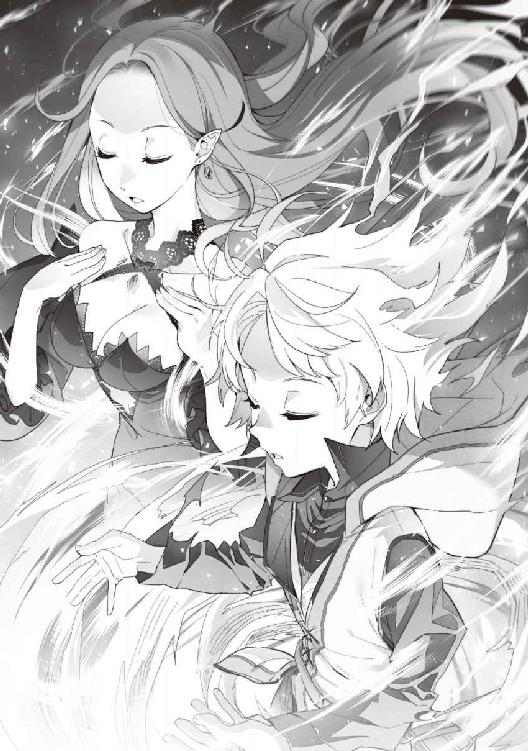
そう詠唱を終えると、二人はフェンリルの姿になって国境を抜けて行った。
ルードは気づいていて、そっとリーダに教えていた。
最後の一文は、フェリスがきっと『かっこいい』と思ってつけたのだろうと。
思った通り、『変えよ』だけで発動したのだ。
ルードとリーダはお互い見つめあって、笑っていたのだった。
▼
焦ることなく、二日かけてゆっくりとシーウェールズへ戻ってきた。
リーダは恐る恐る、人になってみた。
もちろん人化したときの光の中で、首にある布の首輪を前足できゅっと握って。
成功した。
大気中の魔力が少ないこの国でも、人の姿になることができたのだ。
「えぇっ？ フェルリーダ様なのですかっ？」
ウェルダートには悪いことをしたとルードは思ってしまった。
今、ウェルダートは混乱の最中なのだろう。
とりあえず、彼を同僚の男性に任せて、さっさと町中に入っていった。
目線の高さの違う風景に、リーダは感動を覚えていた。
この国に白と緑の髪はルードとリーダしかいないのだ。
もちろん、リーダの姿は目立っていた。
なるべく地味な服装にしてきたつもりだったのだが、背の高さとその美しさ。
何より、その髪の色が目立ってしまったのである。
すれ違う男性が全員振り向いて見とれているという、異常な状況。
ルードはリーダが綺麗で注目を浴びているのが嬉しかった。
ルードが手をつないで歩いていたため、観光客でなければ、誰の家族かだけはわかってもらえていたみたいだ。
数日ぶりに家に帰ってきた。
「こんな風に見えてたのね。目線が高いって新鮮だったわ」
「僕も母さんと一緒に歩けて楽しかったよ」
「うんうん。ありがと、ルード」
「ただいまー」
ルードの声を聞いて、二人の足音が聞こえてくる。
走ってきたのはクロケットだった。
その後ろからクレアーナが微笑んでいた。
「お帰りです......、にゃっ？」
「お帰りなさいま......、せ？」
思った通り二人は固まった。
▼
「本当にそっくりです。まるで姉妹ですね」
「そうかしら？」
「えぇ。本当にそっくりですにゃ」
「自分ではわからないけど、リーダ様と似てるだなんて嬉しいわ」
ルードは疲れてしまったのか、リーダの膝にもたれて眠ってしまっていた。
エリスレーゼはそんなリーダの髪を優しく撫でていたり、指ですーっと梳かしたりしている。
クロケットはリーダの髪を楽しそうにブラッシングを始める。
「綺麗にゃ髪ですにゃ。緑色でツヤツヤしてて」
「エリスレーゼ様の金髪もお綺麗ですよ」
クレアーナは負けじとエリスレーゼの髪をブラッシングしていた。
クロケットの使っているブラシは、リーダ用の大きめのやつ。
クレアーナが使っている方は、クロケットが普段使っているものだ。
「そういえば、エリス」
「なんです？ リーダ様」
「その様ってやめてほしいわ」
「......んー。それなら、リーダ姉さん、では？」
「それいいわ。うん。いい響き。わたしには妹がいないから、そう呼ばれるのは嬉しいわね」
「よかった。私もいないんです。一人っ子なので」
「うんうん」
「そのように呼び合われても、これだけ似ているのなら違和感もありませんね。それにしても、前から不思議に思っていたのですが」
クレアーナが、ぼそっと本音を言い始める。
「なぁに？ クレアーナ」
「エリスレーゼ様、今、おいくつなんですか？」
「ん？ 二十八だけど？」
「......それにしては、お肌も若々しいですし、坊ちゃまたちをお産みになられてから、まったくお変わりありませんよね......」
「あぁ、それ。もしかして、私のお婆ちゃんが狐人だからかも」
「えっ？」
「私、ちょっとだけ狐人の血が混ざってるのよ。それで成長が遅いのかもしれないわね。前にお婆ちゃんに会ったとき、お年を聞いたことがあったの。『千歳を超えてから数えてないわよ』って......。私、冗談だと思ってたけど」
「それにしては、耳もしっぽもありませんにゃね？」
「ないわよ。『化けないと耳としっぽは出ないのよ』って聞いてるし。私、化け方知らないもの。でもね、この子にとって『いつまでも綺麗なママ』でいられるのは嬉しいのよね」
何気に爆弾発言。
エリスレーゼは狐人とのクォーターだったのだ。
第二十話 ママのお父さんとお母さん。
エリスレーゼの話では、元々母方の家系が狐人なのだそうだ。
交易商人だった父と一緒になった母とこの国へ移り住み、商店を始めたらしい。
人のいいエリスレーゼの父は、この国の貴族に気に入られたらしく、王家とも取引をするようになったそうだ。
だが、生活は裕福にはならなかった。
それでも親子三人で頑張って生活していた。
そのうち、美しく育ったエリスレーゼは、町でも評判の看板娘になっていた。
いつからかは知らなかったが、エルラドの耳に入ったらしく、父から申し訳ないがと頼まれたのだ。
エリスレーゼは、家族のためならと我慢して嫁ぐことになったそうだ。
「でもね、初めて会ったとき『あぁ、私の人生終わったわ』って思ったのよね。だって、豚よ？ 醜いのに美しいって言わなきゃいけないのよ？ 毎日が苦痛だったわ......。でもね、二人が生まれたとき、どうでもよくなったの。だって可愛いかったんだもの」
「そうでしたね......」
「でも、ルードがいなくなって、エルシードを亡くしたとき。それこそどうでもよくなっちゃった。私には何の力もないから......。もう、家族はクレアーナしかいなかったのよ。毎日、辛そうに笑顔をくれるあなたに申し訳なかったわ」
「いいえ。エリスレーゼ様がお辛いのに、私......」
「でも、ルードと会えてよかった。あの子のことは悔しいけど。この子だけでも、もう手放したくないの」
ルードを膝にのせて寝かしつけているエリスレーゼを、リーダが後ろから抱きしめる。
「エリス。この子は、お婆さまが認めてくれたの。だからね、ウォルガード王家の立派な子なのよ」
「それ、本当ですか？」
「えぇ。あなたたちも次に来るときは連れてくるようにって、言ってくれたわ」
「......それなら、あれですね」
「何かしら？」
「エランズリルドなんかに怯えなくて済むんですね。リーダ姉さん」
「そうなるかしら」
「うん、それなら問題が解決しそうだわ。すぐにではないかもしれないけど」
エリスレーゼはルードとリーダが不在の時に、三人で話し合ったことを説明し始める。
クロケットの故郷との定期的な交易。
クレアーナの故郷への帰還と墓参り、できるなら交易。
エリスレーゼの実家のエランズリルド撤退。
商会をその交易に使いたいなど。
そのためには人手が足りない。
それをどうするか話し合っているときに、ルードが目を覚ました。
「ママ、母さん」
「あら、ルードおはよう」
「おはよ、ルードちゃん」
「坊ちゃまおはようございます」
「おはようですにゃ」
「いや、朝じゃないから......」
それは嫌でも起きてしまうだろう。
ルードが寝ているその前で、声を大きくルードの話をしていたのだから。
身体を起そうとすると、エリスレーゼが頭を押さえて膝へ戻してしまう。
「ちょっとママ」
「いいからそのままで話しなさい。せっかく気持ちよかったのに」
「......うん。あのね、僕、エランズリルドで捕らわれている人を助けようと思ってるんだ。それで仕事のない人はママの家を手伝ってもらうのってどうかな？」
ルードの頭の上から大きな声が聞こえてくる。
「それ、いいわ。そうよね。クレアーナやクロケットちゃんみたいに、人よりも身体が丈夫な人も多いし。うまくいけば、各地の獣人の集落や村とも交易できるようになるかもしれないし」
「エリス、あなたの実家は大丈夫なの？」
「そうね。十年以上帰ってないからどうなっているのか。でも、私も心配なの。私があの部屋を抜け出たのは、もう騒ぎになっているかもしれないから」
「ルード、様子を見に行きましょう。私とあなたは見た目は人間なのだから、紛れ込んでも大丈夫でしょう？」
「そうだと思う。ママ、詳しい場所教えてくれる？ 最悪、暴れてでも連れてくるよ」
「ルード、駄目でしょ」
「ごめんなさい。母さん......」
「ほんと、そこまでお婆さまに似てこなくてもいいのに」
「坊ちゃま、逞しくなられて......」
「うんうん。ルード坊ちゃまはこうでにゃければいけませんにゃっ」
▼
「一度こうして旅をしてみたかったのよね。いけーっ、ルードっ！」
「母さん......」
家を出る前に、ルードが『母さんはまだ人化に慣れていないだろうから、頻繁に姿を変えると負担がかかるのでは？』と気を遣ったのだが。
リーダはにやっと笑ってそれを受け入れたのだ。
それもそのはず、リーダは人の姿でルードに乗ってみたかったのだ。
リーダはルードとお揃いの交易商人のような服を着ている。
さすがにドレスではまずいということになり、エリスレーゼが見立てたものを、ルードとお揃いで作ってもらっていたのだ。
裁縫に関しては、クロケットとクレアーナが得意だったため、布さえあれば縫い上げてしまう。
商人としての最低の知識は、リーダがエリスレーゼから軽く教わった。
いくら『食っちゃ寝さん』でも、学園を首席で卒業しているリーダだ。
ある程度のことは一度聞いただけで理解してしまうのだ。
一応、カムフラージュとはいえ、交易品として海産物の乾物などを持ってきている。
事が終わって、余ったらヘンルーダに渡せばいいと思っていたからだった。
「あまり暴れないでって。首が絞まって苦しいよ」
「いけーっ。もっと速くっ！」
聞いてはいない。
リーダは、ルードの首輪状になっている服を握って、前傾姿勢で風を切って走っているのが楽しくて仕方がないようだ。
▼
やっとルードたちが住んでいた地域へ着くことができた。
もうすぐ日も落ちるという感じの時間に合わせて町へ入ることにした。
リーダはとてもご機嫌で、人の姿に戻ったルードの分まで荷物を背負って、笑顔で後ろをついてくる。
馬車はないが、交易商人の母子に見えなくもない。
ルードも服装が違うことから、買い物に来ていたころとは見た感じも変わっている。
「匂うわね......」
「母さんもそう思う？」
「えぇ。とても不快だわ......。あなたがいなければ、帰ってしまってるところね」
リーダはエリスレーゼから聞いていた地形を思い浮かべながら、ルードの手を引き、先へ進んでいく。
目的の商会が視界に入ってくる。
それは小さな店だった。
店先にはルードが買い物をするようなものではない、穀物や油、そういった各地でとれる交易品が並べられている。
この町でルードがよく買っていったものは、甘いものが多かった。
リーダが喜ぶもの以外は、自給自足ができていたから買うことがなかった。
初老の男性と若い金髪の女性が切り盛りしているように見える。
「おや？ 見ない顔だね？ 何か仕入れてきたのかい？」
これが商人同士の挨拶なのだそうだ。
リーダが受け答えをするように一歩前に出る。
「えぇ。乾物を少々。『狐の彩』という布を探してるんですけど」
この『狐の彩』というのは、エリスレーゼから聞いた、この家の隠語なのだそうだ。
店主と思われる初老の男性の表情が若干歪むが、すぐに笑顔に戻って言葉を続ける。
「エランローズ、奥で茶を用意してくれるかな？」
「え、えぇ、あなた」
女性が二人に会釈をして奥へ戻っていく。
「あなたたちも長旅で疲れているだろう。今日はもう陽も落ちる。今日は店じまいするかな......。奥で話を聞くから入ってくれないかい？ 同じ商人同士だ。遠慮はいらない。奥で家内が待ってるから先に行ってておくれ」
「お忙しいところすみません。お言葉に甘えましょう」
「はい、母さん」
ルードたちは商店の奥へ案内された。
商店の方からは明かりが見えなくなっている。
おそらく言葉通り店を閉めたのだろう。
「初めまして、こちらで商会を営んでるアルフェルと申します。こちらは家内のエランローズです」
リーダはぽんとルードの背中をたたいた。
「お爺さんとお婆さんですね。僕、エリスレーゼの、ママの息子です。フェムルードといいます」
「わたしはフェルリーダ。この子の育ての母です」
「......エリスが生きてるのですか？ そう、よく似てるわ。目のあたりなんてそっくりね。フェルリーダさんもエリスそっくりで驚いたわ」
エランローズが身を乗り出すと、ルードの頭を撫でてくれた。
アルフェルといった男性は、エリスレーゼの父親なのだろう。
エリスレーゼが生きているということを聞いて、嬉しくないわけがないのだ。
それでも商人としての顔を貫いているかのように、真っすぐ二人を見てくる。
「エラルド殿下の使いから先日話がありました。『エリスレーゼは死んだものと思え。お前の商会との取引は取りやめとなる。これまでご苦労であった』とのことでした。私たちはあの男を信じたのが間違いだと思っていたのです」
「えぇ。最初だけでしたね。あれから十年以上、娘の話も聞かなくなりました。それをあの一言で、亡骸もなく──」
「ここだけの話ですが、ママは元気です。今はシーウェールズで静養していますよ」
「そうでしたか。ありがとうございます。私たちには何も情報が入ってきませんでした。嫁に出したとはいえ、あなたのような孫が生まれていたことも、知らなかったのです」
「あの。僕、実は、フェムルード・ウォルガードって名前なんです」
「それは......。あの大国の......」
「えぇ、私はそこの第三王女ということになっています。息子は王太子ということになりますね」
「ということは、お二人はフェンリ......」
「えぇルード、見せておあげなさい」
「まったく、母さんったら......」
ルードは立ち上がると邪魔にならない場所に移動する。
『祖の衣よ闇へと姿を変えよ』
詠唱とともに、黒い霧状のものがルードを包む。
そこから光が漏れたかと思うと、ルードは純白のフェンリルの姿に変わっていた。
「おぉ。これはまた......」
「えぇ、可愛らしい」
なぜか二人はルードの姿を見て驚かないのだ。
「あのね、ルード君。エリスから聞いていると思うけど、私は半分狐人なのね。母からフェンリル様の話は聞いているの。お目にかかるのは初めてだけれどね」
「そうだったんですか」
「ルード、戻りなさい。『匂いが騒いで』いるわ」
「はい、母さん」
リーダが言っていた『匂いが騒ぐ』というのは、『きっと、この国に捕らえられている犬人たちのことを言っていたのだろう』と、ルードは思ったのだろう。
慌ててルードは人に戻る。
光を発した瞬間、首元にある首輪を握りつぶし、服を着ている状態へ戻っていった。
「私もお目にかかるの初めてです。娘の息子が、フェンリル様だったとは......。ということは、エラルド殿下の子では......」
「いえ、僕も色々あったんですけどね」
▼
「とにかく、詳しいことはママから聞いてほしいです。お爺さんとお婆さんにはシーウェールズに来てほしいのですが」
「はい。エランズリルドには未練もなにもございません」
「えぇ、そもそも、あのような間違いをした私たちを、あの子が許してくれるかどうかの方が心配で......」
「ママもお二人が心配だからと。ですので、僕たちが急いでお邪魔したということなんです」
「えぇ、エリスも心配してましたので。わたしがルードを急がせたのです。エリスはわたしの妹同然ですからね」
「あの子は幸せに暮らしているのですね」
「はい。ですからお二人も一緒に」
「えぇ、あの子に会って謝りたいと思っています」
▼
ルードたちは町の外に先に出ていた。
遅れて馬車が一台町の外へ出てくる。
御者席にはアルフェルとエランローズが乗っていた。
ルードとリーダも乗せてもらい、シーウェールズに向かうことになった。
半日ほど経っただろうか。
エランズリルドの国境を抜けたあたりでリーダが声を低くする。
「ルード、気づいてる？」
「うん。少し離れて馬車が一台。馬鹿だね、バレバレだよ」
「えぇ、馬鹿ね」
「どういうことでしょう？」
アルフェルが心配そうに聞いてくる。
「エランズリルドの王家の使いでしょうね。わたしたちの正体を知らない愚か者ですよ」
「そうだね。これ、僕がやっちゃっていい？」
「どうするの？」
「うん。お兄ちゃんの力、試してみようと思って。なんとなくわかってきたんだよね」
「もし失敗してもわたしがなんとかしてあげるから、やってごらんなさい」
「うん。ありがと。母さん」
「アルフェルさん、馬車を停めてもらえますか？」
「は、はい」
ゆっくりと馬車の速度が落ちていく。
ルードは馬車の後ろから追ってくる馬車を見ると、右目を押さえて左目の後ろにある白いものに力を集めていった。
第二十一話 ルードの左目の力。
ルードが力を徐々に集めていくと、周りの気配がざわついてくるのがリーダにもわかった。
ルードたちの乗る馬車が停まったのに気づいたのだろう。
後ろから追ってくる馬車も道端へ停まっていた。
馬車には男たち数人が乗っているようだ。
どうして男たちだとわかったか。
なぜなら、いい匂いがしないから。
ただ汗と鉄の錆の匂いが混ざって、近寄りたくない臭さになっているから。
ルードは馬車を降りて、後ろの馬車に近づいていく。
後ろの馬車の御者の顔が見えてくる。
その男たちはあまりにも迂闊だ。
ルードたちの馬車を抜いていくべきだったろう。
ここで停まってしまっては、あからさまに後をつけていると宣言しているようなものなのだ。
「おじさんたち、僕たちに何か用？」
御者席にいる男は、御者でよく見るような細身ではない。
腰に剣を携えた男だった。
馬車の方からも、金具や鉄が擦れる音が聞こえてくる。
何より御者の男は驚いただろう。
怪しいと思っている対象に、丸腰の子供が近寄ってくるのだ。
それも右目を右手で押さえて、左目だけで自分たちを見ている。
「いや、一休みしていただけなのだが？」
噛むことなく、すらすらと受け答えをする御者席の男。
すぅっとルードの左目が赤から白くなっていく。
ルードの身体から白い靄のようなものが発生した。
それが馬車を包んでいく。
「おじさん。僕の目を見て同じことが言える？ 『馬車から降りて、僕の前の地面に座りなさい』」
御者の男は自分が何をしているのかわからないだろう。
こちらへ虚勢を張りながらも、ルードの言葉に従ってしまう。
馬車に乗っていたのは御者を含めて三人だった。
皆、驚愕の表情になりながら、ルードの前に座ったのである。
少しだけ力を入れすぎたのだろうか。
ルードの左目の裏辺りに鈍痛が走る。
力を少しだけ弱めてみた。
この力はまずい。
悪いことができてしまう。
ルードはちょっとだけ苦笑いをするのだ。
「おじさんたち。もう一度聞くよ？ 僕たちに何か用？」
男たちは自分たちが置かれている立場に焦り始める。
尻もちをついた状態で腰から下が動かないのだ。
動くのは上半身だけ。
沈黙を始める御者を含めた男たち。
リーダは馬車の裏からこちらを見てクスクス笑っている。
「あれ言って。あれ」
「んもう、仕方ないなぁ。一度だけだよ？」
「うんうん」
『跪けぇっ！』
ルードが顔を赤らめながら、力を込めて声を発する。
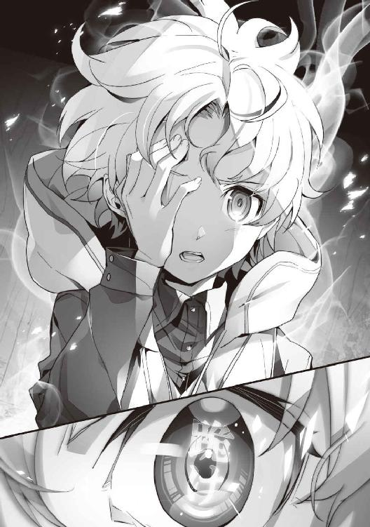
恥ずかしいのだ。
こんな恥ずかしいセリフを言わされること自体が、リーダの喜びの琴線に触れているとは思わなかった。
声色が変わり、男たちは片膝をついた状態になってしまう。
ルードが行使した力は『場の支配』だった。
靄で覆うことができる空間だけの作用だが、今のルードではこの程度しかできないだろう。
「話す気がないなら別にいいよ。でも、『一生このまま』かもしれないよ？ それでもいいなら、僕は構わないけど」
前に力の使い方を試行錯誤していたとき、たまたま白いものに力を込めることができたときがあった。
そのとき、目の前を通ったウサギのような小動物がルードを注目したのだ。
何気に『そこにとまれ』と思ったら、近づいても逃げることはなかった。
いくらモフっても逃げようとはしない。
逃げようとしているのだろうが、動けない状態を保てたのである。
力を注ぐのをやめると、その小動物はあっさりと逃げてしまった。
それでやっと、力の意味合いがわかり始めたのだった。
ルードが鍛錬をしているとき、たまたま言ったキーワードがリーダの琴線に触れてしまったらしい。
それが『跪け』だったのだ。
獣に試してみたのだが、『死ね』という極端な強制力は働かなかった。
だが、簡単な命令なら成功するようだった。
今みたいな方法だ。
リーダたちにはなぜか、強制力というより、『お願い』程度の説得力にしかならなかったのである。
敵対するものや敵視するものと、家族や仲間には効果が違ってくるのだろうか。
今の場面であれば、言葉を付け加えることで『恐怖』を植え付けることは可能だろう。
『一生このまま』などという強制力は働かない。
ただ、今動けないという事実と、その言葉だけでも男たちの表情は驚愕のものへと変わっていった。
「た、たのむ。いや、お願いします。正直に話しますので、それはやめていただけませんか？」
「いいよ。でも、嘘ついたら知らないからね？」
「わかりました......」
ルードはさらに力を弱める。
男たちの身体の自由が戻った、ような感じになっただろう。
男たちに安堵の表情がうかがえる。
だが、まだルードは力を解いていないのだ。
いつでも元の状態以上にできるのだ。
「自分たちはエランズリルド王室から、そちらの二人を尾行するという命を受けています」
「おい、そんなこと言っては駄目だろう？」
「そうだ。それは勅命じゃないか」
「......いや。お前たちよく怖くないな？ これだけの力の差を見せられて、よくそんなことが言えるよ。自分はあの人に忠誠を誓ったわけでもなく、ただ国で働いているというだけで......。冗談じゃない。自分はもうごめんだ」
「いや、お前は独身だからそんなことが言えるんだ。私なんて妻も娘もいるんだぞ。勝手なことなどできるわけがないだろう」
「そうだ。俺だって妻がいるんだ。これは任務なんだ。そうだろう？」
急に仲間割れのような言い合いを始めてしまった。
ルードはリーダを見た。
彼女は肩をすくめて呆れている。
「あの......」
「はい。何でしょうか？」
一番最初に、ルードに敵意を向けなくなった男が返事をした。
おまけに強制していないというのに、片膝をついて頭を下げている。
「お給料出せるの遅くなるかもしれないけど、仕事ならありますよ？」
ルードは何気にスカウトを始める。
国で働いているということは、流れ者ではない。
報酬で動いているのではなく、普通に給金で働いているのだろう。
うまくいけば護衛が簡単に手に入る。
そう思ったからだった。
リーダはルードのしようとしていることに気づいたのだろう。
口元に手を当てて、笑いを堪えているようだった。
「それは本当でございますか？ 申し遅れました。私はマイルスと申します。王都で騎士をしていたのですが、このような密偵の仕事をさせられるとは思いもしませんでした。疑問に思いつつも、今まで勤めてまいりましたが、今は目が覚めたような気持ちでございます。自分はあなたになら忠誠を誓っても構わないと思っております」
「それはありがとうございます。ところで、マイルスさんは、猫人さんや犬人さんたちをどう思いますか？」
「はい。私はあのような扱いは間違っていると思っています」
「そうだよなぁ、たしかにあれはない。言葉が違うからと言って人扱いしないのは間違ってるよな」
「あぁ、私の娘もたまたま貴族街で見かけたのを見て、泣きそうになっていたからな。あの悪習だけは私も肯定できない」
「それなら提案があります。夜になったら人の往来も減るでしょう。着の身着のままになってしまうかもしれませんが、夜に紛れてご家族を連れてきてはいかがでしょうか？ しばらくの間の生活は、僕たちで面倒見ますので」
「それは......」
「祖国を捨てる、ですか」
「えぇ。僕はあんな豚が治める国に未来はないと思っています」
「豚......。それはエラルド殿下のことでしょうか？」
「誰とはいいません。ですが、僕はあの男を許すつもりはないのです。いずれ『ぶひぃ』と鳴かせてやるつもりですから」
マイルスは吹き出しそうになるのを堪えていたようだ。
他の二人もそれは同様だった。
「よし、俺は決めた。妻を連れて逃げてくる。俺はリカルドと申します」
「あぁ、私も妻と娘を連れてくるよ。私は、この隊の長でした。シモンズと申します」
「はい、一応ひと家族ずつ、僕がついていくことにします。母さん、馬車をヘンルーダさんのところにお願い」
「大丈夫？」
「うん。何かあったら手加減しないよ。僕には目的があるんだから」
「わかったわ。さっきの『跪けぇっ！』。かっこよかったわよ。あっちで待ってるわね」
「勘弁してよ、母さん......」
リーダはルードの額に軽くキスをすると、ルードとは反対方向へ馬車を進めた。
「うん。では皆さん行きましょう。僕は、フェムルード。フェムルード・ウォルガード。ルードと呼んでもらって構いません」
勘のいい三人。
それも宮仕えであれば、ウォルガードの名は知識にはあっただろう。
マイルスたちは目を輝かせる。
あのありえない大国の関係者であれば、さっきのようなことも不思議ではないと。
それも名前に国名が入っている。
ルードが王家の者だと思うのは必然。
「あ、あらかじめ言っておきますが。もし僕をどうこうしようと思っているのなら、手加減はしませんからね」
冗談だろうが、笑顔でそう言われると、三人の背筋にはうすら寒いものが走った。
「いえ、滅相もございません。あの、『ウォルガード王国』のお方ですよね？」
「えぇ。そう思っていただいていいと思います」
「......一瞬で国を消滅させたという」
「あれですか......」
「あはは。お婆さまって有名なんだ。ここでもその話が伝わってるんですね」
「えぇ。伝説として、力の象徴として伝わっています」
そんな雑談をしていると、三人も軽くほぐれたような表情になっていく。
徐々に陽も暮れてきた。
町からほどに近いあたりに馬車を停め、ルードは予定を話し始める。
「荷物は、貴重品などの手荷物にできる程度にしてください。皆さんは貴族街に住んでるんですか？」
「いえ、全員外に住んでいます。あのようなところに住めるほど給金が高いわけではないので」
「そうですか。それなら比較的楽にいけそうですね」
▼
馬車に鎧を置いてから、家族のもとへ行くことになった。
二人の家族は夫、そして父の言うことは素直に聞いてくれたようだった。
ルードは、なんとか無事に二人の家族を連れだすことに成功した。
最後に、マイルスの貴重品を取りに後をついていった。
彼の部屋は、比較的人通りの多い商業地区の建物にあった。
「申し訳ありません。自分のようなものに付き合わせてしまいまして」
「いいんですよ。戻ることはないでしょうから、大事なものは持っていけるようにしてくださいね」
「はい。ありがとうございます」
荷物を鞄に詰め終わり、部屋から出ようとしたときだった。
マイルスはルードの前に両手を広げて立ちふさががった。
「ルード様、危ないっ！」
ルードはここが終われば一安心と、若干油断していた。
人の汚さに鈍感だったのかもしれない。
マイルスは左肩に切り傷を負い、傷口から血が滴り落ちている。
「ルード様、お怪我はありませんか？」
「う、うん」
「よかった。......ご同輩、これは酷いんじゃないかな？」
「裏切者が。エラルド殿下の命を受けていたのではないのか？」
「豚はもう飽き飽きなのさ。自分の今の主人はこの──」
『ひれ伏せ......』
ルードは無意識に左目の裏に力を注いだ。
それはまるで、体操選手が床に伏せるような速さだった。
マイルスを斬りつけた男は自分の意思に関係なく、床に伏せた状態で動けなくなっている。
当のマイルスはぽかんとしていた。
傷の痛みより、今の自分の状況の方に驚いていたのである。
「あれ？ 動ける......」
『癒せ』
ルードはマイルスの傷口に手を当てると詠唱を終えた。
傷から出た血は戻らないが、もう傷口は塞がっているだろう。
「申し訳ありません。これが魔法ですか......。まったく痛みはありません。凄いですね......」
「僕は大丈夫なんです。これくらいなら......、いいえ。ありがとうございました」
「主を守るのは自分の務めです。それよりも、自分はなぜ動けるのでしょうか？」
「僕の力は家族には効きが悪いんです。お願い程度にまで弱くなってしまうんですよ。だから僕を守ろうとするマイルスさんの強い意志には、効かないんだと思います」
床に伏せている男は、いまだ微動だにしていない。
ルードは男を見下ろして言葉を続ける。
『お前はもう、痛みを感じることはない。目も見えない。感触もない。ただ耳が聞こえるだけ』
男はその意味がわかってきたのだろう。
身体の震えが大きくなってきたようだ。
『ほら、今、左足から血が流れている。僕が斬ったからだね。痛みを感じるかい？ 感じないようにしたからわからないだろうね。今度は右腕。このまま血を流し、深い闇の奥へ落ちていくがいい』
男は怖かったのだろう。
口元に泡を吹きながら、失禁して動かなくなっていた。
「ルード様、何もしてませんよね？」
ルードは左目の後ろから力を抜いていく。
「......ふぅ。うん、何もしてないよ。視界と感触を一時的に奪っただけ。そこに言葉で恐怖を植え付けたんだよ」
マイルスは笑顔で説明してくれる自分の新しい主に、ただただ驚くことしかできなかったのである。
エピローグ ～次こそ『ぶひぃ』と鳴かせてやるんだ～
床に伏せたまま気絶をしている男を縛り上げ、そのまま転がしておくことにした。
ルードとマイルスは町を抜けて、森の近くに停めてある馬車へと戻ってきた。
「マイルス、その怪我」
「大丈夫です。ルード様が魔法で治療してくれました。王室は、自分たちが任務から逃げ出すのを予想していたみたいです。こちらには誰も？」
「治癒の魔法まで使われるのですね......。あぁ。この森はエランズリルドの人間は近寄ろうとしない。だからこっちは大丈夫だった」
「そうか。それはよかった」
ルードとマイルスが御者席に座った。
夜逃げ同然な状況なのだが、リカルドの妻も、シモンズの妻と娘も、辛そうな顔をしていない。
むしろ、嬉しそうな感じにとれるのだ。
それはきっと、リカルドとシモンズが家族に笑顔を向けているせいだろう。
ルードは思った。
あの国で苦しんでいたのは、猫人や犬人のような種族だけではないのだということを。
ルードはまだ名ばかりの王太子。
今のルードには、この程度のことしかできないだろう。
『もっと自分の力に自信が持てるようにならなければならない』と改めて思うのだった。
「では、先を急ぎましょう。とある集落で落ち合うことになってますから」
「はい。では参りましょう」
マイルスは御者席に座ると、馬を操り馬車を進めた。
▼
森の気配は騒がしいのに、魔獣や獣が出てこないことに皆驚いている。
「皆さん。安心してください。僕がいれば、獣は出てきませんから」
「そうなのですか。気配は感じるのですが、夜の闇の中、これほど森の中を安全に進めるとは思いもしませんでした」
そうこうしている間に、猫人の集落へ到着していた。
そこは森の中とはいえ、かがり火が焚かれていて、とても明るい。
さすがに夜遅いこともあって、子供たちは外には出ていなかった。
ルードの匂いを感じたのか、リーダが走って近寄ってくる。
「ルード、怪我はなかったの？」
「うん。僕の代わりに、マイルスさんが怪我を......」
「いえ、治療をしてもらいましたので、問題はありません」
リーダは素直に腰を折り、頭を下げるのだった。
「うちの子を庇ってくれたのですね。ありがとうございます」
「いえ。主をお守りするのが自分の務めですので......」
マイルスは恐縮しまくっていた。
ヘンルーダの家で遅い夕食をご馳走になっていた。
食事が終わると、ヘンルーダとアルフェル、エランローズの三人で話をしているようだ。
あらかじめヘンルーダを交えて、エリスリーゼの話を二人にしていたようだ。
そのため、アルフェルは仕事として、ヘンルーダの話を聞いているようなのだ。
さすがは元交易商人というところなのだろう。
「エランローズさんからは何やら、私と同じような匂いを感じますね」
「えぇ。私は半分狐人ですので」
「そうだったのですか。ということは、エリスレーゼさんも」
「はい。私の半分ですが、血を受け継いでいますね」
「旦那さんは、人間の方ですよね？」
「はい。この老け方をみればわかりますよね？ 妻がいつまでも若くて綺麗なので、仕事も頑張れるというものなのですよ」
照れ笑いのような感じを返すアルフェル。
見た目の歳の取り方は違えど、立派なおしどり夫婦に見える。
二人はエリスレーゼと会えなかったはずなのに、悲しいとも苦しいとも言わないのだ。
『強い人たち』だと、ヘンルーダは思った。
▼
ヘンルーダに見送られながら、夜の闇の中、発つことになった。
朝まで待てばという話もあったのだが、夜の方が安心して進めるだろうと、ルードが言ったことで出発することになったのだ。
馬車二台がゆっくりと進んでいく。
ここまで道を覚えてもらう意味もあったのだが、基本的には街道を進んでいけば、シーウェールズまで行けないわけではない。
途中、国境には関所がないため、警戒しながら進めばいいだけなのだ。
人がいないはずの場所に人の匂いがする。
「母さん」
「なぁに？」
「あっちから人の匂いがするんだけど」
「きっと盗賊さんでしょうね」
「そんなさらっと......」
「大丈夫よ。出てきても怖くないわ」
「そりゃ母さんならそうかもだけど」
「ヘンルーダさんのところを出る前にね、ほら明かりで見えるでしょ？ 馬車の幌にウォルガードの紋章を彫っておいたの。見たことのない紋章なのだから、余程のお馬鹿さんでもない限り襲ってこないわよ」
確かに目につく場所に、狼に似せた紋章らしきものが彫ってある。
道中、一番近い町に泊まることになった。
町に入る際に、衛兵がそれを見てビビるのはお約束だった。
夕食後、マイルスとアルフェルには、どのあたりで人の気配がしたかを教えておいた。
「このあたりですね。あとここからもそんな匂いが」
「ルード様は、なるほど。そういうことなのですね」
「はい。ここではなれませんが、例の姿のときよりは落ちます。ですが、この姿でも普通の人よりは嗅覚が優れていますので」
このように、夜は無理をせずに近い町へ泊ることにしながら、三日ほどでシーウェールズへ到着することになった。
いつものようにウェルダートが迎えてくれるのだが。
「お帰りなさいませ。ルード君、フェルリーダ様。......そちらの女性はもしや、またお母様とかでは？」
「いやいやいや。僕のお婆ちゃんとお爺ちゃんです。それと新しい家族の皆さんですよ」
「えっ？ そんなのお若いのに？」
今度は違う理由で混乱するウェルダートだった。
ルードはいつものようにウェルダートは置いておいて、先にボニーエラのところへ顔を出すことにした。
「こんにちはー。ボニーエラさんいますか？」
「はいはいはい。ルード様。今度はどんなウハウハを？」
「あのね......。家族用の部屋を三つ。あと、一階が店舗になってる家を借りたいんですけど」
「お急ぎですか？」
「はい」
「では、後ほど鍵をお持ちしますので少々お待ちくださいね。またウハウハですよ......」
「お願いしますねー」
ボニーエラの後ろ姿は、今にもスキップしそうな感じであった。
ゆっくりと馬車を走らせ、ルードは家に帰ってきた。
家の広い敷地の中に馬車を停めると、ルードは声を大きく。
「ママ、ただいまー」
「ルードちゃん。お帰りなさい」
家からクレアーナの肩に手をついて、ゆっくりとエリスレーゼが出てくる。
「もうひとりで歩けるのよ」
「いいえ、まだ足取りが覚束ないではありませんか」
エリスレーゼの前に、馬車から降りたアルフェルとエランローズが待っていた。
二人の姿を見つけたエリスレーゼは、立ち止まって笑顔を向ける。
「あら、お母さん、お父さん。久しぶりね。元気そうでよかったわ」
明るく振舞ったつもりのエリスレーゼの声は、徐々にかすれていってしまう。
平静を装っているが、目から頬に伝わる涙は嘘をつけなかった。
クレアーナの肩から手を離して、エランローズにゆっくりと一歩一歩近づく。
十数年ぶりの母と娘の再開だった。
「......お父さん。老けたわね」
「お前は全然変わらないな」
上を向いて涙を堪えるアルフェル。
堪えきれず涙を流し、声を押し殺して泣くエランローズ。
「お母さんも涙もろくなったわね。駄目でしょ、この程度のことで......」
もう駄目だった。
エリスレーゼも涙が流れているのに気づいていない。
「──お母さん、お父さん。会いたかった......」
「エリス」
「済まなかった、エリス」
黙って三人を見ていたルードの右肩にリーダが顎を乗せてくる。
ルードは、『無事会わせることができて本当によかった』と思っていた。
▼
ボニーエラがその後、鍵を持ってルードの家にやってくる。
商店のある建物から案内してもらった。
そこは、ミケーリエル亭のある通りの一本隣にある角地から、数えて二つ目。
エランズリルドにあった商店よりも大きく、三倍の広さがあった。
二階にある部屋も広さは申し分なく、例外なく風呂に温泉が引いてあるのだ。
マイルスたちの部屋もその近くにある商店の二階。
一緒の建物ではなかったが、比較的近いところに借りられそうだ。
もちろん、風呂とキッチンに温泉が引いてある。
足りない寝具や家具などは、ボニーエラに頼んで手配してもらっている。
部屋に荷物を運び終わって、皆はアルフェルの新しい店の二階に集まってもらっていた。
ルードの前にマイルスが座っている。
並んでリカルドとその妻、カリエナ。
シモンズとその妻、リリエッタ、その娘アンリラ。
ルードの右隣にはエリスレーゼ。
左隣にクレアーナ。
エリスレーゼの隣にアルフェルとエランローズ。
皆が集まったところで、今後の話を始めることになった。
カリエナとリリエッタ、アンリラは、エランローズの手伝いをしてくれるそうだ。
アンリラは今年十二歳になるそうで、活発な母親思いの女の子。
ルードが持ってきたフェンリルプリンを笑顔で食べていた。
カリエナとリリエッタは三十代前半で年も近いらしい。
「──そんな感じになるわね。お父さんとお母さんと私でね、この商会を大きくしていくつもりよ」
「ママ、大丈夫なの？」
「えぇ。お家から歩いても近いもの。まだクレアーナに支えてもらってるけどね、近いうちひとりでここまで来ることもね、できるようになると思うの」
「だが、エリス。交易といってもな、案はあるのかい？」
「これよ」
エリスレーゼがテーブルの上に置いたもの。
それは米だったのだ。
「これはね、ヘンルーダさんの集落でしか作ってない穀物なの。麦にも引けをとらない栄養があって、料理次第でどんな食べ方もできるの。おまけにね、今年は大豊作らしくて、倉庫に入りきらないくらいにあるそうよ」
「でも、仕入れをするにしてもお金が」
「そこは大丈夫よ。ね、ルードちゃん」
エリスレーゼがルードの頭を撫でて、『言ってあげて』という笑みを浮かべていた。
「はい。僕はこの国でそこそこ稼がせてもらっています」
「そうなの。ルードちゃんはね、有名な菓子職人でもあるのよ」
「あははは。そんなに大したものじゃないってば。それで、ヘンルーダさんには米と引き換えに、生活必需品や海産物の乾物などと引き換えでいいと言ってもらっているんです」
「なるほど。ここで仕入れて、あちらで米と交換する。そうすればいいんだね？」
「はい」
「ルードちゃん。私は私でお父さん、お母さんとみんなで頑張ってみるわ。もちろん、クレアーナの故郷にも行ってみるつもり。だからね、あなたはあたなのやらなければならないことだけを考えてくれていいのよ」
「うん。ありがとう、ママ」
「元々私は商人の娘。結構得意なのよ、色々考えるのがね」
こうして、商会の名を『エリス商会』と改め、近日中にヘンルーダのいる集落へ最初の交易をするための準備が始まったのだった。
ルードがエリスリーゼの祖母に会ってみたいと言っていたことから、狐人の集落への交易も考えているらしいのだ。
もちろんマイルスたちは、流通経路での護衛。
それまでは力仕事などを担当してもらっている。
仕事が終わると、今までできなかった家族サービスなどに時間をとってもらっていた。
マイルスがなぜか、ミケーリエル亭に入り浸っていたのは、皆見ないふりをしている。
▼
毎朝、フェンリルプリンとフェンリルアイスをミケーリエル亭に届ける仕事は、交易が始まるまではマイルスが進んでやるようになった。
もちろん、目的は言わなくても皆わかっていた。
ルードの作る菓子の売り上げだけで、普通に生活できてしまっていたため、リーダは残っていた宝石をすべてエリスレーゼに預けた。
「リーダ姉さん。こんなによろしいのです？」
「えぇ。あなたなら有効的に使ってくれるでしょう？」
「はい。お預かりします。何倍にしてでもいつかお返ししますからね」
「別にいいのに......」
リーダは苦笑していた。
エリス商会の建物は、この宝石を数個使って購入済だ。
マイルスたちが住む部屋はまだ借りている状態だが、いずれ近いところに宿舎として建てるか、買うかを考えているらしい。
ボニーエラにいいところがないか、探してもらっている最中だった。
残りの額は、ざくっとルードたちの家を軽く数軒買うことができるだけの金額になるだろう。
宝石自体は、リーダが適当に拾ってきたものだったりする。
だからあまり頓着していないのだった。
きっと『また拾って来ればいいわ』程度に思っているのだろう。
『ママの笑顔を見れてよかった』と、ルードは思った。
これであの国への憂いは、とりあえずなくなったと言ってもいいだろう。
今度はルードが攻める番だ。
後ろから抱いているリーダの手をきゅっと握って、『次こそぶひぃと鳴かせてやるんだ』、ルードはそう思ったのだった。
その気持ちがリーダにも伝わっただろう。
もう少し強めにルードを抱きしめて、リーダは後ろから頬ずりしてくるのだった。
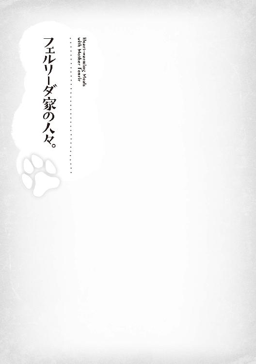
リーダとルードがウォルガードに行っているとき、こんなことがあった。
留守番になったエリスレーゼ、クレアーナ、クロケットの三人。
クレアーナがエリスレーゼの世話をし、クロケットが家の仕事を淡々とこなしていく。
「あの、クロケット様」
「うにゃぁ！ びっくりするのにゃ......」
「どうかされましたか？」
「いえ、クロケット様って、びっくりしてしまいましたにゃ」
「おかしかったでしょうか？」
「いえ、あの、にゃんでしょうかにゃ？」
「はい。エリスレーゼ様がお話をしたいと言ってまして」
「はいですにゃ。これが終わったらすぐにいきますにゃ」
「ありがとうございます」
慣れなかった。
クロケット様と言われて、困ってしまう。
生まれ育った集落であっても、いくら長の娘であっても、様をつけられたことなどなかったのだから。
「エリスレーゼ様。にゃんでしょうか？」
「エリスでいいわよ、クロケットちゃん。聞きたいことがあったの」
「うにゃ？」
「クロケットちゃん、ルードちゃんのお嫁さんになるんでしょ？」
「うにゃぁああああっ！ それをどこできかれましたにゃ？」
「リーダ姉さんとヘンルーダさんからだけど？」
「うにゃぁ、お母さんまで......。あのですね、ルード坊ちゃまが成人したらという話ににゃってますにゃ。でもルード坊ちゃまは気づいていないのですにゃ。にゃので言わにゃいでほしいのですにゃ......」
「ルードのどこが好きなの？ あの可愛らしいところかしら？」
「それはですにゃ。私が人買いに捕まってしまって、助けてもらったのですにゃ。物語の王子様みたいに見えたのですにゃ。でも、あのとき十二歳だったにゃんて......。でも、いつかそうにゃりたいって」
「そんなことがあったのね。でも、よかったわね。本当に王子様になっちゃったじゃない」
クスクスとエリスレーゼが生暖かい目で微笑んでいた。
クレアーナはとても辛そうに笑いを堪えているようにも見える。
「そうですにゃ。王子様にゃんですにゃ。でも私にゃんて、釣りあわにゃいかもしれにゃいのですにゃ......」
「そんなことないわ。ルードちゃん、あなたのこと大事に思ってると思うわよ」
「そ、それは本当ですかにゃ？」
「えぇ。あの子ね、昔から嘘は言わないの。嫌なことは嫌だって。あの豚にも『ぶひぃと鳴いて謝るのです』って。私も言えなかったから、思い出すだけで笑ってしまいそうになるのよね」
「それはまた、すごいですにゃね......」
「（あれは本当に傑作でした。『ぶひぃ』ですよ。笑ってしまうところでしたよ。本当に）」
クレアーナは思い出し笑いを一生懸命、涙を目に溜めて堪えている。
「ルードちゃんにこの間聞いたのね。クロケットちゃんをどう思う？ って。そうしたらあの子、顔を真っ赤にして『大好き』って言ってたわ」
「うにゃぁあああああっ！」
「『クロケットお姉さんには言わないで』って言ってたわ。可愛くて仕方なかったわね」
「ぷっ......」
クレアーナの堤防が決壊してしまったようだ。
「エリスレーゼ様、それは可愛そうですよ。言わないでって......、ぶぶぶぶ」
「あら？ 大丈夫よ、ルードちゃんいないんだし」
クロケットは顔を床に突っ伏して、しっぽを左右に振りながら悶絶している。
それを見たエリスレーゼは嬉しくて仕方がないようだ。
もちろんクレアーナは笑いを堪えていた。
「（これは笑っちゃ駄目。クロケット様が......。可愛すぎますっ）」
結局、毎日のようにクロケットはエリスレーゼにいじられることになったのだ。
妹のように見えたクロケットが自分の娘になるのだ。
エリスレーゼから見たら、それは可愛くて仕方がなかっただろう。
クレアーナから見ても、妹のような存在。
クロケットはクレアーナに色々と教わりながら、自分のできることを模索している。
料理ではルードにかなわない。
クロケットから見たら、リーダもエリスレーゼも美しい。
クレアーナも物静かな美人だと思っている。
自分がかなうわけがない。
ルードに気に入ってもらうためには、どうしたらいいか。
自分にまったく自信が持てないクロケットは、ひたすら悩み続けているのだった。
クロケットは気づいていなかった。
リーダもエリスレーゼもクレアーナも、クロケットの胸を見ては、ため息をついていたこともある。
「シーウェールズに来てから太ってしまいましたにゃ。ルード坊ちゃまも近寄ると後ろを向いてしまうくらい、みっともにゃくにゃってしまったのですにゃ......。ほんと邪魔ですにゃ。魔法で小さくしてもらいたいですにゃ......。これも『フェンリルプリン』が美味しすぎるからですにゃ」
ルードは最近、クロケットをまっすぐ見てくれないときがあった。
それがクロケットの最近の悩みだったのだ。
猫人の集落にいたときは、クロケットも栄養失調気味だったのだろう。
栄養状態が改善されて、クロケットの身体も少しふっくらとして、女性らしく丸みを帯びてきたのだ。
シーウェールズに来てからは、前のようにルードの後ろを走って買い物に行くこともなくなった。
それ故にクロケットは、運動不足で『太った』と勘違いしていたのだろう。
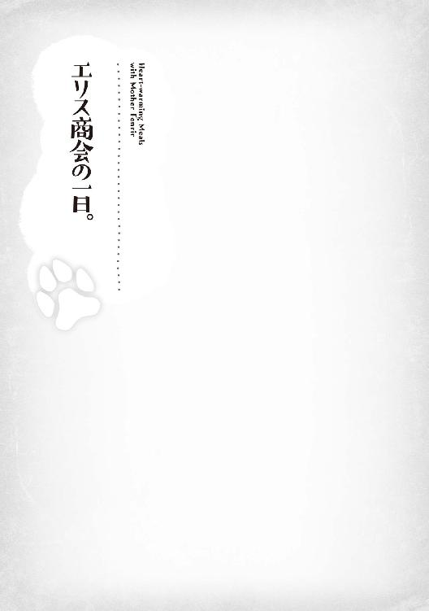
エリス商会を立ち上げて、ひと月が経っていた。
エリスレーゼは、朝から商会の一階の奥の部屋で唸っている。
「リーダ姉さんの描いてくれた紋章は、この国でも知らない人はいないみたいだけど。お父さん、絶対に夜は移動しちゃ駄目よ？」
「あ、あぁ。わかってるって」
「いくらマイルスさんたちがいるからって、絶対に襲われないって言いきれないんだからね」
「あのな、私はお前が生まれる前は、これでも名の知れた──」
「でも、久しぶりなんでしょ？」
「......ごめんなさい」
どこの家も、父は娘には弱いのだった。
マイルスたちは、商会としては初めての交易となる今回の旅の準備を始めている。
馬車二台に分けて積んだ、シーウェールズの海産物の乾物を中心とした特産品。
かなりの量になっているが、重量は乾物が多いため、それほどでもないようだ。
明日の朝出発することになっているため、積み込みが終わったら、早めに三人を帰宅させるつもりらしい。
「アルフェル殿、積み込み完了しました」
「こちらも終わりです」
「終わりです。これで大丈夫だと思います」
アルフェルが『お疲れ様』と労い、エランローズは三人にお茶を入れて持ってきてくれた。
「はいはい。お茶飲んだらご家族とゆっくりしてくださいね」
「すみません。助かります」
「はい。娘も待ってるようなので、甘えさせていただきます」
「いただきます」
「とにかく、明日は朝が早い。あなたたちも初めての仕事になるから、あまり気負わずにお願いするよ」
「はい」
「大丈夫です」
「自分も頑張ります」
遅れてエリスレーゼが、ゆっくりとひとりで歩いてくる。
「エリス、大丈夫なのか？」
「馬鹿ね。商会長が何も言わないで返すわけにいかないでしょう？ 皆さん、明日からよろしくお願いしますね」
「「「はい、かしこまりました」」」
三人は揃って片膝をついて頭を下げてしまう。
習慣というか、反射的というか。
三人からしたら、元とはいえエリスレーゼは王族だったのだ。
宮仕えだった彼らにはあたりまえの反応だったのだろう。
「だからそれはいいってば」
「いえ、自分にとっても主であるルード様のお母様でもありますので」
「あのねぇ、そんなことばかり言ってると、ミケーリエルさんにあることないこと言っちゃうわよ？」
「そ、それはやめてください......」
アルフェルとエランローズ、シモンズとリカルドまで生暖かい笑みを浮かべている。
それはそうだろう。
最近のマイルスを見ていれば、ミケーリエルにベタ惚れだとわかりきっているのだ。
マイルスはお茶を一気飲みすると、勢いよく立ち上がる。
「で、では失礼いたしますっ」
脱兎のように走って逃げてしまった。
皆が手を振って見送っていることなど、気づいてはいなかっただろう。
マイルスが逃げ込んだ場所は、通りひとつ離れたミケーリエル亭。
すでにクロケットが手伝いにきているようだった。
「マイルスさん、お疲れ様ですにゃ」
「あ、おじちゃん。こんばんは」
「おじちゃん、お帰りー」
「馬鹿、違うでしょ。こんばんはでしょ？」
「あ、こんばんは」
マイルスはその場にしゃがんで、二人の頭を撫でる。
「ミケーラちゃん、ミケル君。こんばんは」
「うんっ」
「こら、はいでしょ」
「はいっ」
「ミケーリエルさん、愛しのマイルスさんが来ましたにゃよーっ？」
「やめてって、そんな。あの、お帰りなさい」
「お母さん、こんばんはじゃないの？」
「あははは、お母さんもまちがってる」
「そうだったわね。こんばんは。マイルスさん」
「はい」
夕方の忙しい時間も終わり、クロケットは気を利かせて帰り支度をしている。
「それではお疲れ様ですにゃ。また明日来ますにゃねー」
「クロケットお姉ちゃん、またねー」
「クロケットお姉ちゃん、バイバイー」
「いつもすみません」
「いえいえ、仲良くしてくださいにゃね？」
「そ、そんな......」
▼
夕食も済み、ミケーラとミケルはお風呂に入っている。
マイルスは今しかないと思った。
「あの、ミケーリエルさん」
「は、はい」
「これ、受け取ってください」
「な、なんでしょう？」
小さな箱に入っていたもの、それは質素な作りだが、可愛らしい金の彫金が施された指輪だった。
「こんな高価なものを......」
「あの。帰ってきたらでいいんです。この前の返事を聞かせてください」
「あの、私。猫人ですよ？ それに夫を亡くしていますし、子供もいますし」
「いいんです。自分だってただの人間です。猫人の、可愛らしいお子さんがいるミケーリエルさんがいいんです。これで駄目なら自分は......」
「馬鹿ね。誰も駄目だなんて言ってないじゃないですか。私、あなたより年上なんですよ？」
「自分は、年上の女性がいいんです」
「帰ってきたらで、いいんですか？」
ミケーリエルはちょっとだけ、いたずらっ子っぽい表情をする。
そうしてこの晩、シーウェールズに新しい夫婦が生まれた、のだろうか。
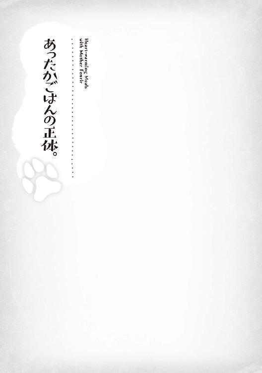
アルフェルたちの引っ越し作業も終わり、早速明日から『エリス商会』を開業するそうだ。
ルードには家族が増えた。
生みの母、エリスの父、アルフェルと母、エランローズ。
ルードに忠誠を誓うと言ってくれた、エランズリルドの元騎士、マイルス。
同じく元騎士のリカルドとシモンズ、そしてその家族たち。
彼らは親子でエリス商会を手伝ってくれると言っていた。
その商会の陣頭指揮をとっている、まだひとりで出歩くには頼りないエリスだったが。
そこは長年サポートしてくれた侍女のクレアーナがいる。
それでもルードは、つい先日まで病に臥せっていたエリスが心配でならない。
ルード自身の治癒魔法で完治したとはいえ、クレアーナのサポートなしではひとりで歩くこともままならない状態だ。
エリスが明日の開業の準備を忙しそうにしているのを、ルードはハラハラしながら陰から見守っていた。
そんなルードを、これまた心配しながらルードの育ての母、リーダが見ていた。
「......ふふふ。ルード、心配し過ぎもエリスに悪いわよ」
「うん......」
「それにね、傍から見てると。ルードはまるで、エリスのお兄ちゃんか何かに見えてくるのよね」
「──ぷっ......」
間髪入れず、クレアーナが吹き出してしまう。
「クレアーナったら酷いわ。私って、そんなに頼りない？」
「そ、そんなことありません、エリスレーゼ様」
クレアーナはそうフォローしてくれるのだが。
ケラケラと笑うリーダを、エリスは恨めしそうに見ながら文句を言う。
「んもう、リーダ姉さんも酷いですよ」
「あらそう？ だってわたし、四百年生はきてるのよ。わたしから見たら、二十八歳も十四歳も誤差みたいなものなの。世話好きのお兄ちゃんと、意地っ張りな妹に見えなくもないわよ」
リーダは長寿種のフェンリルだからこそ、家族の皆が可愛らしく思えてしまうのだろうか。
「あのね、ママ」
ルードはエリスレーゼを見る。
「僕を産んでくれてありがとう。僕はママにもう一度会うためにこうして生きて来れました」
「ルードちゃん......」
ルードはフェルリーダを見る。
「母さん。僕にフェンリルをくれてありがとう。僕には、母さんがくれたフェンリルの血が流れてます」
「ルード......」
何故かはわからない。
ルードがこの世界のものではない魂を持つ、『悪魔憑き』と呼ばれる特異な存在だからなのだろうか。
過去にフェンリラが他種族の子に乳を与えて、自らの乳がその子の身体を侵食したという記録もないだろう。
それはおそらくは『奇跡』。
「クレアーナ、ママをずっと大事にしてくれてありがとう。こうしてまた、会うことができたんだから」
「いえ、私はそんな......」
ふにっと笑みを浮かべていたルードの顔が、ちょっとだけ引き締まる。
「でもね、僕にはまだやらなきゃいけないことがある。僕にこの力をくれた、お兄ちゃんのために、もっと頑張らなきゃ駄目なんだ。それに、エルシードの敵もとらなきゃいけない。僕は──」
「うにゃぁああああっ！」
「あぁあああ、もう。クロケットお姉ちゃん。だから僕がやるっていったじゃないのっ」
慌ててキッチンに走って行くルード。
今夜の料理は、クロケットがひとりで作ると言っていた。
彼女は『私にまかせてくださいにゃっ！』と、やる気満々だったのだが。
どうやら、何か失敗しそうになっているようだ。
「ほんと、ルードったら」
「そうね、リーダ姉さん」
「坊ちゃま、私も手伝います」
クレアーナは手伝いができなくてうずうずしていたのか。
これ幸いとルードの後を追って、キッチンに走り込む。
ルードのフォローと、クレアーナの手際の良さ。
クロケットの頑張りで、今夜の晩ごはんは無事できあがったのだった。
今夜のメニューは結構賑やか。
塩、こしょう、お酒で味を調え、魚と大きな貝柱やエビも入った、ボリュームたっぷりな魚介と根野菜の炊き合わせ。
それと丸々の鳥が手に入ったから、その鳥がらで出汁をとった鳥がゆ。
これは滋養がつくからと、エリスの身体を思って作ったものだった。
もも肉と胸肉はオーブンでぱりぱりに焼いて、塩味だけの優しい感じに仕上がっている。
他には、葉野菜を湯がいてすり潰してペースト状にしたものを混ぜ込んだ、少し甘い卵焼き。
もちろん、食べ盛りなルードとクロケットには、炊き立てのほかほかごはんもある。
何故か上座に座っているクロケット。
配膳のしやすさを考えると、この位置が一番いいと思ったのだろうか。
そして右にはルードとリーダ。
左にはエリスとクレアーナが座っている。
「それではいただきますにゃっ！」
クロケットの『いただきます』で夕食は始まる。
まだルードだけは知らないが、彼女はルードのいい奥さんになるべく奮闘しているのを、皆は知っているのだ。
「大丈夫よ、ひとりで食べられるんだから」
「駄目です。坊ちゃまがエリスレーゼ様のために作ってくれたのですから」
「うん......。あ、おいし」
エリスの世話は、しっかりとクレアーナがみていてくれる。
ルードは人の姿になっていても、習慣なのだろう。
「あーん。うんうん。美味しいわ、ルード」
「よかった。......って、母さん。自分で食べられるじゃないのさ？」
「いいじゃないの。ずっとルードとクロケットちゃんに食べさせてもらってたんだもの」
リーダはルードに甘えまくっていた。
「美味しいですにゃ。お魚の味がぎゅっとしてて、お野菜に味がしみしみで、濃厚でうまうまですにゃっ！ 鳥の皮がぱりっとしてて、こっちもうまうまですにゃっ！」
猫舌は何処へ行ったと言わんばかりの勢いで、クロケットはひと口食べては笑顔、またひと口で満面の笑顔。
クロケットひとりで、料理の感想を全て言ってしまったから、リーダもエリスも『美味しい』としか言えなかった。
そんないつもの光景。
この笑顔を守っていかなきゃならない。
ルードは俄然やる気が溢れてくるのだった。
クロケットとクレアーナが用意してくれたお茶と菓子。
リーダとエリスは、ふたりで食後のひとときを楽しんでいた。
リーダは足をくずして座っている。
フェンリルの姿のときのように、ルードがうつ伏せにもたれかかり、ちょっと眠たそうにしていた。
エリスはリーダの横に座り、ルードの髪をゆっくりと撫でる。
「ねぇルードちゃん」
「......ん？」
ルードは目元をごしごしと手でこすって、エリスの問いに応えようとする。
うつ伏せのままでは不便だろうと。リーダがルードを膝の上に座らせて、後ろからそっと抱いてエリスの方に向かせた。
「あ、眠いところごめんなさい。あのね、さっきのおかゆ？ ごはん、なんだけど」
「うん」
「私も交易商人をしてた父さんの娘だからね、知ってることは人よりは多いと思うの。でもね、お米って言ったかしら？ あんな美味しい穀物。知らなかったのよね。猫人さんの集落で、ヘンルーダさんにいただいたときも驚いたのだけれど」
確かに猫人の集落以外では、食料として使われていないのかもしれない。
米はたまたまルードが気が付いて食べてみたから、今、こうしてこの家と猫人の集落だけで穀物として消費されているのだ。
「あのね、ヘンルーダおばさんが倒れちゃったときがあってね。クロケットお姉ちゃんが滋養のつく薬草をとりにいったときなんだけど。人間に攫われちゃって、助け出して連れて帰ったんだ」
「ほんと？ それは偉いわ」
「えへへ。......それでね。ヘンルーダおばさんが倒れた理由がね、麦がうまく育たなくて。食べるものが少なくなってしまったんだって。集落の人を食べさせるために、自分は食べるのを我慢して、それで具合が悪くなってしまったんだって」
「そう......。大変なことになってたのね」
「うん。でもね、それにしてはおかしいと思ったんだ。だって、家畜の餌に使う穀物だけはたくさんとれるって聞いたんだよ。僕はなんでかわからないけど、その湿地で育つ穀物って食べられる穀物じゃないかなって思ったんだ。猫人さんたちが食べ方を知らないだけかもって。それで、クロケットお姉さんに納屋へ連れて行ってもらって、ちょっとだけそれを食べてみたんだ」
「それで？」
「うん。間違いないと思った。僕の記憶の奥にある知識が、それは栄養価の高い『米』って名前の穀物だってね。不思議でしょう？」
「ううん。ルードちゃんはね、生まれてすぐに話すことができたのよ。だから少しも不思議だと思わないわ。ルードちゃんだから、ヘンルーダさんとクロケットちゃんたちを助けられたんだと思うわ。うん。偉かったわね」
ルードはエリスに頭を撫でられて、目を細くし、気持ちよさそうにする。
そして思い出したように。
「あ、母さんそういえば」
「どうしたの？」
「クロケットお姉ちゃんが、母さんの姿を見て──」
「うにゃぁあああああああああっ！」
クロケットが大慌てでキッチンから走り寄ってきた。
もちろんその話は、『クロケットがリーダのフェンリル姿に驚いて粗相してしまったときの話』。
全力で誤魔化すのも頷けるだろう。
リーダがクロケットを見て、苦笑しているのがその証拠。
「あーその、にゃんですね。プリン。そう、プリン食べませんかにゃ？」
クロケットは誤魔化すようにそう言う。
「ごはん食べたばかりじゃないの？」
ルードはリーダの膝の上にもたれたまま、苦笑の笑みを浮かべる。
クロケットは内心ほっとする。
ルードをうまく誤魔化せたようだったからだ。
「いいえ、ルード坊ちゃま。女の子は、甘いものは別腹にゃんですにゃっ！」
クロケットは、そう言って小走りにキッチンへ。
クレアーナも『お手伝いします』とついて行く。
残されたリーダとエリスは、ルードに抱き着いて頬を寄せてくる。
「どうしたの、母さん。ママ」
「ルード、ありがとう。偉いわね」
「ルードちゃん、ありがとうね。偉いと思うわ」
「よくわかんないよ......」
そう言いながらも、ルードは照れ笑いを浮かべていた。
あとがき
初めまして、はらくろと申します。
まずはこの作品を世に出すことをお手伝いいただいた、担当編集のＣさんに感謝したいです。
それとごめんなさい。当初は男性向けな表現の多かったこの作品へのツッコミ、大変だったかと思います。
実は私はこの作品で二作品目の書籍化なんですが、前作品は、とある事件に巻き込まれまして、〝ばんざーい、なしよ〟の状態になってしまいました。前作品がとんでもないことになり、『こんなところで負けてたまるか』と全てをぶつけた結果、この作品が生まれたと言っても嘘ではありません。
続刊できなくなったことで、そのときのイラストレーターの先生、カット先生にはご迷惑をおかけしたと思っていました。まさかこの作品で、再びタッグを組めるとは思っていませんでした。編集部の皆さまには、改めて感謝いたします。
母性溢れる目を持つフェンリルのリーダと、可愛らしい主人公のルード。この二人が今回の表紙になりました。カット先生、表紙イラストを見たとき、正直『すげぇ』と思いました。本当にありがとうございます。
さて、世界最強クラスの母と、母性ホイホイな少年の織り成す物語。『フェンリル母さんとあったかごはん～異世界もふもふ生活～』、いかがでしたでしょうか？
フェンリルの登場するものは多いとは思いますが、母としての登場の物語は他にはないと思います。
リーダの親バカっぷりと、そんな彼女に『あーん』をしてあげるルード。こんなシーンを書きたかっただけでした。ヒロイン、クロケットの『にゃ』のあるセリフも、いい感じに壊れているかと思います。
最後に、手に取っていただいた皆様、ありがとうございます。
私としては、楽しんでいただける内容になったかと思っています。
これからも多数の人を巻き込んで、ルードとリーダの物語は続いていくと思います。
あとがきは初めて書いたのですが、こんな感じでよかったのでしょうか？
二〇一八年二月某日 はらくろ
フェンリル母さんとあったかご飯～異世界もふもふ生活～
2018年５月１日発行 ver.1.0
著 者 はらくろ
発行所 TOブックス
〒150-0045 東京都渋谷区神泉町18-８
松濤ハイツ２Ｆ
03-6452-5766（編集）
0120-933-772（営業フリーダイヤル）
©2018 Harakuro
※無断で複製・複写・データ配信などをすることは、かたくお断りいたします。
本電子書籍は下記にもとづいて制作しました
フェンリル母さんとあったかご飯 ～異世界もふもふ生活～
2018年５月１日 第１刷発行
本作品の全部または一部を無断で複製、転載、配信、送信したり、ホームぺージ上に転載することを禁止します。また、本作品の内容を無断で改変、改ざん等を行うことも禁止します。
本作品購入時にご承諾いただいた規約により、有償・無償にかかわらず本作品を第三者に譲渡することはできません。
本作品を示すサムネイルなどのイメージ画像は、再ダウンロード時に予告なく変更される場合があります。
本作品は縦書きでレイアウトされています。
また、ご覧になるリーディングシステムにより、表示の差が認められることがあります。